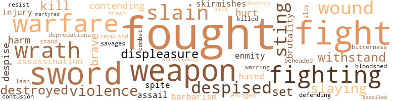
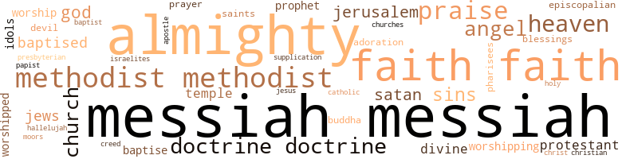

Rise and Progress of the Kingdoms of Light and Darkness: Or, The Reign of the Kings Alpha and Abadon, by Blackson, Lorenzo D. (1867)
65 music-related terms matched in this text.
Most frequent terms in this topic: trumpet (18); singing (8); music (8); sing (7); scat (4)
cornet.n.01
Definition: a brass musical instrument with a brilliant tone; has a narrow tube and a flared bell and is played by means of valves
| word | sentence |
|---|---|
| trumpet | This consideration , in my humble opinion , will justify my effort to give this to the public , which , if being approved and accepted , may possibly be handed down to succeeding generations , and whatever good it may dethem , if any , it will be done when I am called off the wall , and will have long since ceased to blow the trumpet in Zion . |
| trumpet | great and small , being called by the loud sound of a great trumpet , and now being assembled for the purpose of his so doing , he will open the books , and they all shall by him be judged out of the things that are written therein , every man according to his works . |
| trumpet | So king Messiah , the great Prince of Peace , steod on the foundation of the walls of Zion which he had laid , and himself first lifted up the Gospel trumpet which was blown aloud , and called all those that were afar off , and those that were near at hand to come to him , and those that were weary he would give them rest , and thoso that were heavy laden he would remove the load . |
| trumpet | Therefore the great and good king Messiah made this very kind offer to relieve them if they would come unto him ; and also he proclaimed unto them by the loud sound of the Gospel trumpet , that he would deliver them from under the tyrant kings , Sin , and Death , who with Abadon had so heavily burdened them , that unless they were delivered therefrom they must surely die . |
| trumpet | But yet there were some who heard the glorious sound of the gospel trumpet and obeyed , and arose from the dead , and came and enlisted under the blood stained banner of king Messiah , and were willing to fight under him against the power of darkness , and to be led by him to certain victery . |
| trumpet | He went himself , accompanied by his littlo band of soldiers and trumpeter , proclaiming the glad tidings and liberty to the captives , on condition of their yielding obedience to him ; and that they should be saved from all of their foes , for be would build for them a glorious city , and place such watchmen on the walls thereof , as should neither sleep day nor night ; those glad tidings did he proclaim , and caused to be proclaimed by the loud sound of the glorious gospel trumpet . |
| trumpet | Although the number was very few that first came to him , whom he ordained to be trumpeters , yet so loud blowed he the gospel trumpet , accompanied by his little few , that it shook the very foundations of Abadon ' . |
| trumpet | And atene time when he had sent his little band out , with ex - press command to blow the mighty trumpet aloud , and had given them power over all the powers of the enemy , and teld them to cast out the colleagues of Abadon wheresoever they found them , in any of the habitations or houses of his subjects ; he also empowered them to demany miracles , such as opening the eyes of the blind , causing the lame to walk , opening the ears of the deaf , and healing the sick , and those that had been oppressed by Abadon and his tyrannical rulers , destroying their works , and doing such exploits as these . |
| trumpet | And he , with his little army , thus began to make inroads on Abadon 's forces and kingdom ; and Truth , King Alpha 's mighty orater , began to make many proclamations unto men , through the instrumentality of his Sovereign 's chosen trumpeter , who began to blow very loud the gospel trumpet , for the time bad come which had been decreed by almighty Alpha 's great and majestic Father , long before this time , and had been spoken of in obedience to him , by the mouth of one of his chosen servants , - in words to this amount : Blow ye the trumpet in Zion , proclaim a solemn assembly , let the dead hear that the time has come for them te live . |
| trumpet | And he , with his little army , thus began to make inroads on Abadon 's forces and kingdom ; and Truth , King Alpha 's mighty orater , began to make many proclamations unto men , through the instrumentality of his Sovereign 's chosen trumpeter , who began to blow very loud the gospel trumpet , for the time bad come which had been decreed by almighty Alpha 's great and majestic Father , long before this time , and had been spoken of in obedience to him , by the mouth of one of his chosen servants , - in words to this amount : Blow ye the trumpet in Zion , proclaim a solemn assembly , let the dead hear that the time has come for them te live . |
| trumpet | And now kind reader , having given you a faint description of the armor and weapons of the soldiers of the Kingdom of Light , and also stating their power and use , I must now return to the little army that was organized by King Alpha himself , previous to taking his leave of them , which contained as faithful , valiant , true-hearted , and courageous a band of warriors as ever unsheathed a sword , or drew a battle bow , or sounded a trumpet of alarm ; I left you where the chief one of the ambassadors of King Alpha , after his departure on the day of Pentecost , did deliver his message , and make his proclamation unto those who were in rebellion ; three thousand of whom did immediately leave the service of Abadon , and enlist in the army of King Alpha , taking the oath of allegiance to him , and was there - by acquitted from all that Justice had against them , and were given by the Comforter , a receipt in full for all their indebtedness , and were armed for battle ; and the war which was now declared against all the powers of Darkness , which was now greatly enraged against the soldiers of Light , who had left Abadon and his service , and were now preparing to fight against him , and all His dark powers . |
| trumpet | Now the water baptism could be performed by the trumpeters , whom he had called to blow the trumpet ; but the fire baptism could only be performed by the Comforter , who was always ready and willing to perform this crowning act , which when performed makes those who have experienced it , willing to die if need be , for the glorious causo in which they are engaged . |
| trumpet | And very many great engagements were brought on by the sound of the trumpet of alarm , blown by those watchmen who steod as sentinels or picket guards ; and when those great battles were fought , the victery as a general thing was always on the side of the ' - army of the great King of Light , which wounded many , slew many , and teok many captives , all of whom were freely pardoned , and restered inte the favor of the most merciful King Alpha , on condition of their renouncing Abadon , and taking the oath of allegianco to Alpha and his government . |
| trumpet | When seeing the sword coming , they failed not to warn the people ; and as trumpeters , they blew the trumpet , giving it a certain sound when calling an alarm , that the soldiers might prepare for battle ; they werealso armed with the whole armor , and as well as the sword , the bow-arrows , and quiver , with which they wounded many . |
| trumpet | Now this division , like South America , was at first peopled by the Indians , a people as we have described , that were when first discovered , in gross darkness , being unenlightened by the glorious light of the gospel , as the watchmen of Zion had not Bounded the gospel trumpet among them , and they had not yet heard its pleasing sound ; but it was now to be blown among them by the gospel trumpeters , who were sent by the King of Light for that express purpose , being commissioned as ambassadors to negotiate with them , and propound conditions of reconciliation and peace to those , who through iguorance , and the dark influence of Abadon , were in rebellion against him . |
| trumpet | And though one of their number had a special commission from the King of Light , as a watchman or a trumpeter , yet was he not permitted to blow the trumpet nor Bound an alarm , and it matters not how much those colored watchmen and ambassadors wore in favor of the King of Light , or what their qualifications as competent officers were , yet if the king had clothed them with a dark skin , that alone was considered a sufficient reason why they should not serve in the regiments , in the position their office entitled them te , through , their appointment by the king ; which thing as a matter of course was offensive both to their king , and these his despised servants . |
| trumpet | As I perceive him to be a grand enemy to my King and his cause , therefore , as a true soldier of his , I propose to make war upon him , and as a watchman , to blow the trumpet and give the alarm . |
| trumpet | Now King Alpha 's watchmen who stand on the wall denot fail to proclaim these things in the hearing of Aba-don 's army , by the loud sound of the gospel trumpet ; for its sound is so exceedingly loud , that it can be distinctly heard , at the vast distance that Babylon stands from the city of Zion , so that the soldiers of Darkness , who still remain in Abadon 's army , and thereby die , are without nil excuse , as they are worthy of death , seeing they might by leaving Abadon 's army have life . |
epistle.n.02
Definition: a book of the New Testament written in the form of a letter from an Apostle
| word | sentence |
|---|---|
| epistles | And as an ambassador of Peace he was very successful , causing the reconciliation of many who were in open rebellion against the King of Light to him ; and although many ages have past since the days of this great champion , yet are some of the able letters and epistles written by him still extensively circulated , and are very popular , also as well as those of Peter , James , and John , and others , who were mighty warriors in their days , holding high positions , and were Ambassadors of Peace , as well as warriors ; and most faithfully did they discharge the arduous duties that were imposed upon them as ambassadors ; the same also did they as watchmen on the walls of Zion . |
figured_bass.n.01
Definition: a bass part written out in full and accompanied by numbers to indicate the chords to be played
| word | sentence |
|---|---|
| continuo | They teld them if they continued to disobey him , he would ere long visit the land with sword , pestilence , or famine , for by one or the other of theso scourges , or by them all , is the king accustemed to chastise those nations , who after being warned repeatedly by his servants whom he sends unto them , and yet they will not hearken , but continuo to go on in transgression , until their cup of iniquity is full , then is he bound in vindication of his justico to pour out his wrath upon them . |
foreword.n.01
Definition: a short introductory essay preceding the text of a book
| word | sentence |
|---|---|
| preface | First , the Book ; of Time , which is very large and contains an indescribable amount of matter far exceeding any record ever kept by men , or even seen by mortal man , save by few exceptions , yoi it is only the preface or frontispiece , or at most an introduction to the great Book of Eternity , which is without bounds . |
music.n.01
Definition: an artistic form of auditory communication incorporating instrumental or vocal tones in a structured and continuous manner
| word | sentence |
|---|---|
| music | And the king it is said on good authority will be more commonly seen than ever before , walking to and fre among them in order to cheer them by his presence , and he will give them the reward of merit due for their valor and faithfulness to his glorious cause , and they will moreover be introduced and made acquainted with the many valiant heroes and conquerors who have preceded them and fought their way through to this same blessed place , and with them they will often converse and talk of past events and of the troubles they have met , and the many conflicts they have had with the enemy , and of how they conquered through the help of their king , without which they could never arrived to the enjoyment they will then be in possession of ; and it will occupy the most of their time talking of his many past and present favors and acts of kindness which brought them to the enjoyment of all the pleasures of the city of Zion ; and loud will be the united army in their praise of the wonderful King of Zion for all the great things he has done for them , and therefore the chief part of their time will be employed in singing his wonderful praise , and talking of his great goodness ; neither will they lack instruments of music wherewith to make a joyful sound to his honor , so that when the trumpeters and harpers shall unite tegether with all the ransomed hosts , such singing and such music has never yet been beard on the earth as will be at that time ; for then will be fulfilled the prophecy of ancient Seers who spoke as they were moved and directed by the Comforter , who very well knew before this great battle was fought that he could gain the victery . |
| music | And the king it is said on good authority will be more commonly seen than ever before , walking to and fre among them in order to cheer them by his presence , and he will give them the reward of merit due for their valor and faithfulness to his glorious cause , and they will moreover be introduced and made acquainted with the many valiant heroes and conquerors who have preceded them and fought their way through to this same blessed place , and with them they will often converse and talk of past events and of the troubles they have met , and the many conflicts they have had with the enemy , and of how they conquered through the help of their king , without which they could never arrived to the enjoyment they will then be in possession of ; and it will occupy the most of their time talking of his many past and present favors and acts of kindness which brought them to the enjoyment of all the pleasures of the city of Zion ; and loud will be the united army in their praise of the wonderful King of Zion for all the great things he has done for them , and therefore the chief part of their time will be employed in singing his wonderful praise , and talking of his great goodness ; neither will they lack instruments of music wherewith to make a joyful sound to his honor , so that when the trumpeters and harpers shall unite tegether with all the ransomed hosts , such singing and such music has never yet been beard on the earth as will be at that time ; for then will be fulfilled the prophecy of ancient Seers who spoke as they were moved and directed by the Comforter , who very well knew before this great battle was fought that he could gain the victery . |
| music | So the grand terrestrial Army being got in motion , and the musicians playing and discoursing beautifully on the golden harps and whatever other instruments of music may be necessary to make a joyful sound , they will proceed onward and upward until they shall meet the celestial army , headed by the warring angels Gabriel and Michael , coming as a guard of honor te escort them to the upper regions and to welcome them to the celestial country . |
| music | But the song of redemption , the terrostrial army will be able to sing to perfection , and to talk of it will be their chief delight ; and in singing and talking thereof , they will be ablo to excel the celestial army , as the celestial army was created but not redeemed , therefore they can not take so active a part in singing and talking thereof , as the terrestrial army ; but each will be as completely happy as will be possible for them to be , the celestial escorting the terrestrial up with the loud sound of trumpets and singing of creation , whilst the terrestrial will be as earnestly engaged in singing equally as loud of redemption , and playing on golden harps as upward they go , the whole of both armies keeping time with the music , King Alpha and tho Comforter going before on white horses , and when the innumerable host shall arrive in front of the great and glorious city which we have above described , then will be caused a halt , whilst they shall surround it preparatery to their entering inte the great city through each of the twelve gates , and when this manoeuvre is performed , the King will command with a loud voice , saying , open ye the gates that the righteous nation that keeps the true way may enter in , and the porter will say , lift up the gates and he ye lifted up ye everlasting doors , and the King of glory shall come in , then will the gates be opened wide , and the king shall outer in leading his triumphant hosts through the gatesinte the city , which on this occasion will be put in the most splendid order , to receive and dehonor to the victerious army of the great King of Light , and every bell in the city will ring welcome in , welcome in , and as they tread the gold paved streets , being led by the king and conducted by the angelic escort on their way to the throne , as they pass by the splendid mansion , which the kingwill have previously prepared for them , as they view them they will ' behold such dazzling splendor , as the eyes of mortals had never before witnessed , perfectly agreeing with the words the King had left on record , namely , eye has not seen nor ear heard , neither has it entered inte the heart of man to conceive , the things that he has prepared for them that love him and keep his commands ; this will be fully realized by the soldiers of light , when they shall have arrived inside of the city , and King Alpha will lead them inte the presence of his majestic father , inte which when they have arrived , and have been introduced by him This very great and Majestic Highness , as those he had redeemed from the earth , having purchased their pardon by shedding his blood , then will every knee be bowed , both of the celestial and terrestrial armies , in adoration to the Father , the Son and the Comforter , and after the Son has presented the terrestrial army to his Father to be his forever and forever , and has resigned his charge , and giv - them over inte the hands of his Father , as pure and unspotted , not having either spot or wrinklo nor any such thing ; and the Father has received them at his hand and proclaimed himself well pleased in what his Son , who is his well beloved , has done . |
| music | The service will be of the choicest and richest materials imaginable , and the dainties of the most rare , costly and best kind ; the greatness of the varieties can not be teld , and all prepared to suit the taste of the guest ; and there will also be a full supply of new wine , of which be promised his chosen twelve that he would drink with them in his Father 's kingdom , including others no doubt besides them ; and he also promised that he would gird himself and serve them , and moreover he will wipe all tears away from his people 's eyes , and they will be thus fed and feasted , and will have no more sorrow or trouble , but joy , and instead , while eternity lasts , the best of music will be in abundance for evermore . |
| music | Their harps being put in tune , and they being in a merry mood , they could not but play thereon , and it is said they had music and dancing , and that the music was well-timed , and there was great joy in that city , as the arrival of the Comforter amongst them could not fail to make them thus joyful , as by his coming and the very glad tidings he brought , they were thereby so well assured of their king 's favor . |
| music | Their harps being put in tune , and they being in a merry mood , they could not but play thereon , and it is said they had music and dancing , and that the music was well-timed , and there was great joy in that city , as the arrival of the Comforter amongst them could not fail to make them thus joyful , as by his coming and the very glad tidings he brought , they were thereby so well assured of their king 's favor . |
| music | Moreover , they at length got to using instrumental music in their devotion , like other regiments who had lost the power , and had nothing left but the form . |
musical_instrument.n.01
Definition: any of various devices or contrivances that can be used to produce musical tones or sounds
| word | sentence |
|---|---|
| instruments | And the king it is said on good authority will be more commonly seen than ever before , walking to and fre among them in order to cheer them by his presence , and he will give them the reward of merit due for their valor and faithfulness to his glorious cause , and they will moreover be introduced and made acquainted with the many valiant heroes and conquerors who have preceded them and fought their way through to this same blessed place , and with them they will often converse and talk of past events and of the troubles they have met , and the many conflicts they have had with the enemy , and of how they conquered through the help of their king , without which they could never arrived to the enjoyment they will then be in possession of ; and it will occupy the most of their time talking of his many past and present favors and acts of kindness which brought them to the enjoyment of all the pleasures of the city of Zion ; and loud will be the united army in their praise of the wonderful King of Zion for all the great things he has done for them , and therefore the chief part of their time will be employed in singing his wonderful praise , and talking of his great goodness ; neither will they lack instruments of music wherewith to make a joyful sound to his honor , so that when the trumpeters and harpers shall unite tegether with all the ransomed hosts , such singing and such music has never yet been beard on the earth as will be at that time ; for then will be fulfilled the prophecy of ancient Seers who spoke as they were moved and directed by the Comforter , who very well knew before this great battle was fought that he could gain the victery . |
| instruments | Therefore he teld his servants that they should declare that the time would come , that righteousness should cover the lace of the earth , as the waters cover the great deep ; when brother shall not say unto brother , know ye the King of Light ; but all shall come to know him from the least unto the greatest , and war of all kinds shall cease ; insomuch so , that the nations of the earth would learn , war no more , and would therefore beat their swords and apears inte ploughshares and pruning hooks , having no further need of them as instruments of war , for the time will then come , when the people of the saints of the most high shall possess the kingdom , and the kingdom - and the glory of the kingdom , and the power and the dominion shall be given unto them , and they shall possess and enjoy it for the space of a thousand years , without interruption or intermission . |
| instruments | So the grand terrestrial Army being got in motion , and the musicians playing and discoursing beautifully on the golden harps and whatever other instruments of music may be necessary to make a joyful sound , they will proceed onward and upward until they shall meet the celestial army , headed by the warring angels Gabriel and Michael , coming as a guard of honor te escort them to the upper regions and to welcome them to the celestial country . |
scat.n.01
Definition: singing jazz; the singer substitutes nonsense syllables for the words of the song and tries to sound like a musical instrument
| word | sentence |
|---|---|
| scat | The Comforter will also be invited by the Father to dismount from his white horse , and to take a scat on his throne at his left hand side , in approval of all his actions as the Commander-in-chief of his whole army , which very high and important office he is all things will have fulfilled to the full satisfaction of the almighty Father , who will approve of his whole proceedings accordingly . |
| scat | This glorious little band , after having done as they were bidden by their prince , returned again with joy to him , saying that even the near relations to Abadon himself , that were in high authority with him , was subject to them , through the name of Alpha , he teld them that he beheld Abadon as lightning falling from his high scat , and that he gave them power to tread down his infernal powers , and that nothing should by any means hurt them ; how beit , in this rejoice not , that Abadon 's crew were subject unto them , but rather rejoice because their nninos are written in the Celestial Land , where his mighty Lather dwells . |
| scat | Now Messiah had previously teld his trumpeters that these things were to be , and that he would lay under the power of death until the third day , and that he would then arise and overcome death , and take from him his keys , and take them in his own hands to possess them forever and come forth from his prison triumphantly over Abadon , Sin and Death , and all their dark and subtle powers , leading prisoners inte captivity , and giving precious gifts to men , and then to re-ascend to his mediaterial scat on his majestic throne , there to sit in glory , forever highly exalted over all . |
| scat | And there , also , was the seat of the Boast and Hope , who commanded Abadon 's falso army , established , and from thenco gave orders for the persecution of the soldiers of light , the blood of many of whom was shed by virtue of these orders , as had been their King previously by Homan soldiers , who did so at the request of the Jews , but they afterwards did so of their own accord and free will , until the establishing of the scat of the Beast and the power of the Pope , amongst them ; who teok the work of destruction out of their hands , and carried it on until they teo lost their power of so doing . |
| scats | There are none of common intelligence will deny that there are many colored persons , who are true and faithful servants of his , yet they are ill treated , merely because of their color ; of whom the king in judgment will say to those arraigned at the bar , in the persons of my colored brethern , me have you excluded from your churches and pulpits , and when admitted to places of publio resort , such as camp meetings , and such like places , me have you appointed to the back and most dishonorable scats , and in many instances , me have you excluded from public conveyances , such as street cars and the like ; me have you considered unfit to sot in your common assemblies , and in the persons of my watchmen whom I have called and ap - pointed to stand on the walls , me have you not allowed in your places of common resort , to lift a warning voice to thu people , me have you not allowed to sleep on the same bed , nor eat at the same table with others , me have ye proscribed and hated , and despised and abused , without cause , and shown more regard to even your beasts in many instances , than ye did to me ; also my testimony have ye refused to hear , while ye would hear another , and in almost every way have ye abused and misused me in the persons of these my colored brethren , who have served me so faithfully , that I even I have accounted them worthy to wear crowns of victery , and to set down with me in my kingdom , and be amongst the invited guests at my marriage supper , and moreover to inhabit the mansions that I have prepared for them in my Father 's house , which will far exceed any of these corruptible places from which they are excluded on the earth . |
sing.v.02
Definition: produce tones with the voice
| word | sentence |
|---|---|
| sing | Now the celestial army will be able to speak more of the creating power and goodness of the King , and of that song they will sing the loudest and most fully . |
| sing | But the song of redemption , the terrostrial army will be able to sing to perfection , and to talk of it will be their chief delight ; and in singing and talking thereof , they will be ablo to excel the celestial army , as the celestial army was created but not redeemed , therefore they can not take so active a part in singing and talking thereof , as the terrestrial army ; but each will be as completely happy as will be possible for them to be , the celestial escorting the terrestrial up with the loud sound of trumpets and singing of creation , whilst the terrestrial will be as earnestly engaged in singing equally as loud of redemption , and playing on golden harps as upward they go , the whole of both armies keeping time with the music , King Alpha and tho Comforter going before on white horses , and when the innumerable host shall arrive in front of the great and glorious city which we have above described , then will be caused a halt , whilst they shall surround it preparatery to their entering inte the great city through each of the twelve gates , and when this manoeuvre is performed , the King will command with a loud voice , saying , open ye the gates that the righteous nation that keeps the true way may enter in , and the porter will say , lift up the gates and he ye lifted up ye everlasting doors , and the King of glory shall come in , then will the gates be opened wide , and the king shall outer in leading his triumphant hosts through the gatesinte the city , which on this occasion will be put in the most splendid order , to receive and dehonor to the victerious army of the great King of Light , and every bell in the city will ring welcome in , welcome in , and as they tread the gold paved streets , being led by the king and conducted by the angelic escort on their way to the throne , as they pass by the splendid mansion , which the kingwill have previously prepared for them , as they view them they will ' behold such dazzling splendor , as the eyes of mortals had never before witnessed , perfectly agreeing with the words the King had left on record , namely , eye has not seen nor ear heard , neither has it entered inte the heart of man to conceive , the things that he has prepared for them that love him and keep his commands ; this will be fully realized by the soldiers of light , when they shall have arrived inside of the city , and King Alpha will lead them inte the presence of his majestic father , inte which when they have arrived , and have been introduced by him This very great and Majestic Highness , as those he had redeemed from the earth , having purchased their pardon by shedding his blood , then will every knee be bowed , both of the celestial and terrestrial armies , in adoration to the Father , the Son and the Comforter , and after the Son has presented the terrestrial army to his Father to be his forever and forever , and has resigned his charge , and giv - them over inte the hands of his Father , as pure and unspotted , not having either spot or wrinklo nor any such thing ; and the Father has received them at his hand and proclaimed himself well pleased in what his Son , who is his well beloved , has done . |
| sing | Then will these three agree as always they had done be - ' fore , and bear accord in the holy city ; for , as wc have before said , the Father , Son and Comforter are three in person , yet are they one Supreme Being , in perfect unity in all their actions , and they having now concluded all the necessary ceremonies between them , and agreed in their future , course of proceedings in their kingdom and tewards their subjects , they will then turn their face to review the grand united army that will by their officers be drawn up and marshaled before the throne on the broad fields of eternal day for that purpose , and they being arrayed in dazzling splendor , and clothed with the garments of salvation which the King had previously prepared for them out of his rich bounty , they will appear to great advantage , and being well drilled as they go through their various evolutions , the Father will express himself well satisfied with their past and present proceedings , and he will look approvingly on the Son and smile , and the Son will smile approvingly on the officers and army , and proclaim to them that they have done well , and that their warfare is now accomplished , and that henceforth they shall rest from all their labor , and that their suffering and teiling is all now over , and that they now Shall enter in and possess forever and ever the splendid mansions he has prepared for them in his Father 's house , and inherit all things ; and sickness and sorrow , pain and death by them will be felt and feared no more , for the former things will be done away ; for he that sits upon the throne will proclaim to them that he has made all things new , and when the ransomed host shall hear and realise all these great and glorious things , they will be filled with joy unspeakable and full of glory , and will break forth in loud acclamations of praise and thinksgivings to him that sets on the throne for ever and ever , and the sound shall be like mighty thundering ; when the whole united army with one accord shall sing hallelujah unto Him that loved us and washed us from our sins in his own blood . |
| sing | When those that sent the petition received the answer , they rejoiced greatly and leaped for joy , and began to sing songs of praise to King Alpha , the Father , Son and Spirit , three in one . |
| sung | Now these poor despised colored soldiers , many of whom were slaves , some of them to their fellow-soldiers , who professed to be fighting for the same sovereign , one of the petitions which they sent up ran in this wise , and which for many years was sung by them , even thus : When will Jehovah hear my cry , And free the sons of Africa ! |
| sing | Now they had been teld by their former officers who were under the immediate direction of the Comforter , to be exemplary in dress and other outward things , and to love not the world , nor the things of it , and that whosoever did , the love of King Alpha was not in them ; yet did the Methodist regiment , that is , many of their members , but not all so far deviate from this wholesome instruction , that they like the world , and other luke-warm regiments , gave themselves up to gay and costly apparel , and grand and costly drill-houses , with bells and high steeples attached therete , which cost much that had better been given to the poor among them ; also in the inside there were splendid decorations and ornaments , and also whereas they had been directed by the order of the king , when they sing , to sing with the spirit and the understanding . |
| sing | Now they had been teld by their former officers who were under the immediate direction of the Comforter , to be exemplary in dress and other outward things , and to love not the world , nor the things of it , and that whosoever did , the love of King Alpha was not in them ; yet did the Methodist regiment , that is , many of their members , but not all so far deviate from this wholesome instruction , that they like the world , and other luke-warm regiments , gave themselves up to gay and costly apparel , and grand and costly drill-houses , with bells and high steeples attached therete , which cost much that had better been given to the poor among them ; also in the inside there were splendid decorations and ornaments , and also whereas they had been directed by the order of the king , when they sing , to sing with the spirit and the understanding . |
| sing | Now as the Light infantry are more numerous than any other , and all belong to the Kingdom of Light , having been purchased by King Alpha 's own blood , and are therefore permitted in the celestial country to always behold the face of his Father , and pay their obedience to him and with all the rest of the united host , join to sing his praise , so that now with the various branches of the Army of Light , the Light infantry and all others , when they shall be assembled for general review , will constitute a greater number than has ever been Been by mortal man ; be that therefore it is plain that the Kingdom of Light , since its rise , has made great progress , and so will continue to deuntil the war shall have finally coma to a close , notwithstanding the great efforts the Army of Darkness has in time past made , and still continues to make , to prevent the same ; for in the various engagements that have been and are being made , the Army of Darkness has been defeated with great loss , while the Army of Light has steadily gained ground , and now occupies a vast amount of territery that was once in possession of Abadon , whose kingdom in those places has been tern down and destroyed , and King Alpha 's built up and established on the ruins thereof ; all of which are preparatery to the final grand rout of the enemy , who is also busily employed in making preparation for the last great struggle , in which all the artillery of Hades will be brought to bear and will be levelled at the Army of Light . |
singing.n.01
Definition: the act of singing vocal music
| word | sentence |
|---|---|
| singing | And the king it is said on good authority will be more commonly seen than ever before , walking to and fre among them in order to cheer them by his presence , and he will give them the reward of merit due for their valor and faithfulness to his glorious cause , and they will moreover be introduced and made acquainted with the many valiant heroes and conquerors who have preceded them and fought their way through to this same blessed place , and with them they will often converse and talk of past events and of the troubles they have met , and the many conflicts they have had with the enemy , and of how they conquered through the help of their king , without which they could never arrived to the enjoyment they will then be in possession of ; and it will occupy the most of their time talking of his many past and present favors and acts of kindness which brought them to the enjoyment of all the pleasures of the city of Zion ; and loud will be the united army in their praise of the wonderful King of Zion for all the great things he has done for them , and therefore the chief part of their time will be employed in singing his wonderful praise , and talking of his great goodness ; neither will they lack instruments of music wherewith to make a joyful sound to his honor , so that when the trumpeters and harpers shall unite tegether with all the ransomed hosts , such singing and such music has never yet been beard on the earth as will be at that time ; for then will be fulfilled the prophecy of ancient Seers who spoke as they were moved and directed by the Comforter , who very well knew before this great battle was fought that he could gain the victery . |
| singing | And the king it is said on good authority will be more commonly seen than ever before , walking to and fre among them in order to cheer them by his presence , and he will give them the reward of merit due for their valor and faithfulness to his glorious cause , and they will moreover be introduced and made acquainted with the many valiant heroes and conquerors who have preceded them and fought their way through to this same blessed place , and with them they will often converse and talk of past events and of the troubles they have met , and the many conflicts they have had with the enemy , and of how they conquered through the help of their king , without which they could never arrived to the enjoyment they will then be in possession of ; and it will occupy the most of their time talking of his many past and present favors and acts of kindness which brought them to the enjoyment of all the pleasures of the city of Zion ; and loud will be the united army in their praise of the wonderful King of Zion for all the great things he has done for them , and therefore the chief part of their time will be employed in singing his wonderful praise , and talking of his great goodness ; neither will they lack instruments of music wherewith to make a joyful sound to his honor , so that when the trumpeters and harpers shall unite tegether with all the ransomed hosts , such singing and such music has never yet been beard on the earth as will be at that time ; for then will be fulfilled the prophecy of ancient Seers who spoke as they were moved and directed by the Comforter , who very well knew before this great battle was fought that he could gain the victery . |
| singing | But the song of redemption , the terrostrial army will be able to sing to perfection , and to talk of it will be their chief delight ; and in singing and talking thereof , they will be ablo to excel the celestial army , as the celestial army was created but not redeemed , therefore they can not take so active a part in singing and talking thereof , as the terrestrial army ; but each will be as completely happy as will be possible for them to be , the celestial escorting the terrestrial up with the loud sound of trumpets and singing of creation , whilst the terrestrial will be as earnestly engaged in singing equally as loud of redemption , and playing on golden harps as upward they go , the whole of both armies keeping time with the music , King Alpha and tho Comforter going before on white horses , and when the innumerable host shall arrive in front of the great and glorious city which we have above described , then will be caused a halt , whilst they shall surround it preparatery to their entering inte the great city through each of the twelve gates , and when this manoeuvre is performed , the King will command with a loud voice , saying , open ye the gates that the righteous nation that keeps the true way may enter in , and the porter will say , lift up the gates and he ye lifted up ye everlasting doors , and the King of glory shall come in , then will the gates be opened wide , and the king shall outer in leading his triumphant hosts through the gatesinte the city , which on this occasion will be put in the most splendid order , to receive and dehonor to the victerious army of the great King of Light , and every bell in the city will ring welcome in , welcome in , and as they tread the gold paved streets , being led by the king and conducted by the angelic escort on their way to the throne , as they pass by the splendid mansion , which the kingwill have previously prepared for them , as they view them they will ' behold such dazzling splendor , as the eyes of mortals had never before witnessed , perfectly agreeing with the words the King had left on record , namely , eye has not seen nor ear heard , neither has it entered inte the heart of man to conceive , the things that he has prepared for them that love him and keep his commands ; this will be fully realized by the soldiers of light , when they shall have arrived inside of the city , and King Alpha will lead them inte the presence of his majestic father , inte which when they have arrived , and have been introduced by him This very great and Majestic Highness , as those he had redeemed from the earth , having purchased their pardon by shedding his blood , then will every knee be bowed , both of the celestial and terrestrial armies , in adoration to the Father , the Son and the Comforter , and after the Son has presented the terrestrial army to his Father to be his forever and forever , and has resigned his charge , and giv - them over inte the hands of his Father , as pure and unspotted , not having either spot or wrinklo nor any such thing ; and the Father has received them at his hand and proclaimed himself well pleased in what his Son , who is his well beloved , has done . |
| singing | But the song of redemption , the terrostrial army will be able to sing to perfection , and to talk of it will be their chief delight ; and in singing and talking thereof , they will be ablo to excel the celestial army , as the celestial army was created but not redeemed , therefore they can not take so active a part in singing and talking thereof , as the terrestrial army ; but each will be as completely happy as will be possible for them to be , the celestial escorting the terrestrial up with the loud sound of trumpets and singing of creation , whilst the terrestrial will be as earnestly engaged in singing equally as loud of redemption , and playing on golden harps as upward they go , the whole of both armies keeping time with the music , King Alpha and tho Comforter going before on white horses , and when the innumerable host shall arrive in front of the great and glorious city which we have above described , then will be caused a halt , whilst they shall surround it preparatery to their entering inte the great city through each of the twelve gates , and when this manoeuvre is performed , the King will command with a loud voice , saying , open ye the gates that the righteous nation that keeps the true way may enter in , and the porter will say , lift up the gates and he ye lifted up ye everlasting doors , and the King of glory shall come in , then will the gates be opened wide , and the king shall outer in leading his triumphant hosts through the gatesinte the city , which on this occasion will be put in the most splendid order , to receive and dehonor to the victerious army of the great King of Light , and every bell in the city will ring welcome in , welcome in , and as they tread the gold paved streets , being led by the king and conducted by the angelic escort on their way to the throne , as they pass by the splendid mansion , which the kingwill have previously prepared for them , as they view them they will ' behold such dazzling splendor , as the eyes of mortals had never before witnessed , perfectly agreeing with the words the King had left on record , namely , eye has not seen nor ear heard , neither has it entered inte the heart of man to conceive , the things that he has prepared for them that love him and keep his commands ; this will be fully realized by the soldiers of light , when they shall have arrived inside of the city , and King Alpha will lead them inte the presence of his majestic father , inte which when they have arrived , and have been introduced by him This very great and Majestic Highness , as those he had redeemed from the earth , having purchased their pardon by shedding his blood , then will every knee be bowed , both of the celestial and terrestrial armies , in adoration to the Father , the Son and the Comforter , and after the Son has presented the terrestrial army to his Father to be his forever and forever , and has resigned his charge , and giv - them over inte the hands of his Father , as pure and unspotted , not having either spot or wrinklo nor any such thing ; and the Father has received them at his hand and proclaimed himself well pleased in what his Son , who is his well beloved , has done . |
| singing | But the song of redemption , the terrostrial army will be able to sing to perfection , and to talk of it will be their chief delight ; and in singing and talking thereof , they will be ablo to excel the celestial army , as the celestial army was created but not redeemed , therefore they can not take so active a part in singing and talking thereof , as the terrestrial army ; but each will be as completely happy as will be possible for them to be , the celestial escorting the terrestrial up with the loud sound of trumpets and singing of creation , whilst the terrestrial will be as earnestly engaged in singing equally as loud of redemption , and playing on golden harps as upward they go , the whole of both armies keeping time with the music , King Alpha and tho Comforter going before on white horses , and when the innumerable host shall arrive in front of the great and glorious city which we have above described , then will be caused a halt , whilst they shall surround it preparatery to their entering inte the great city through each of the twelve gates , and when this manoeuvre is performed , the King will command with a loud voice , saying , open ye the gates that the righteous nation that keeps the true way may enter in , and the porter will say , lift up the gates and he ye lifted up ye everlasting doors , and the King of glory shall come in , then will the gates be opened wide , and the king shall outer in leading his triumphant hosts through the gatesinte the city , which on this occasion will be put in the most splendid order , to receive and dehonor to the victerious army of the great King of Light , and every bell in the city will ring welcome in , welcome in , and as they tread the gold paved streets , being led by the king and conducted by the angelic escort on their way to the throne , as they pass by the splendid mansion , which the kingwill have previously prepared for them , as they view them they will ' behold such dazzling splendor , as the eyes of mortals had never before witnessed , perfectly agreeing with the words the King had left on record , namely , eye has not seen nor ear heard , neither has it entered inte the heart of man to conceive , the things that he has prepared for them that love him and keep his commands ; this will be fully realized by the soldiers of light , when they shall have arrived inside of the city , and King Alpha will lead them inte the presence of his majestic father , inte which when they have arrived , and have been introduced by him This very great and Majestic Highness , as those he had redeemed from the earth , having purchased their pardon by shedding his blood , then will every knee be bowed , both of the celestial and terrestrial armies , in adoration to the Father , the Son and the Comforter , and after the Son has presented the terrestrial army to his Father to be his forever and forever , and has resigned his charge , and giv - them over inte the hands of his Father , as pure and unspotted , not having either spot or wrinklo nor any such thing ; and the Father has received them at his hand and proclaimed himself well pleased in what his Son , who is his well beloved , has done . |
| singing | But the song of redemption , the terrostrial army will be able to sing to perfection , and to talk of it will be their chief delight ; and in singing and talking thereof , they will be ablo to excel the celestial army , as the celestial army was created but not redeemed , therefore they can not take so active a part in singing and talking thereof , as the terrestrial army ; but each will be as completely happy as will be possible for them to be , the celestial escorting the terrestrial up with the loud sound of trumpets and singing of creation , whilst the terrestrial will be as earnestly engaged in singing equally as loud of redemption , and playing on golden harps as upward they go , the whole of both armies keeping time with the music , King Alpha and tho Comforter going before on white horses , and when the innumerable host shall arrive in front of the great and glorious city which we have above described , then will be caused a halt , whilst they shall surround it preparatery to their entering inte the great city through each of the twelve gates , and when this manoeuvre is performed , the King will command with a loud voice , saying , open ye the gates that the righteous nation that keeps the true way may enter in , and the porter will say , lift up the gates and he ye lifted up ye everlasting doors , and the King of glory shall come in , then will the gates be opened wide , and the king shall outer in leading his triumphant hosts through the gatesinte the city , which on this occasion will be put in the most splendid order , to receive and dehonor to the victerious army of the great King of Light , and every bell in the city will ring welcome in , welcome in , and as they tread the gold paved streets , being led by the king and conducted by the angelic escort on their way to the throne , as they pass by the splendid mansion , which the kingwill have previously prepared for them , as they view them they will ' behold such dazzling splendor , as the eyes of mortals had never before witnessed , perfectly agreeing with the words the King had left on record , namely , eye has not seen nor ear heard , neither has it entered inte the heart of man to conceive , the things that he has prepared for them that love him and keep his commands ; this will be fully realized by the soldiers of light , when they shall have arrived inside of the city , and King Alpha will lead them inte the presence of his majestic father , inte which when they have arrived , and have been introduced by him This very great and Majestic Highness , as those he had redeemed from the earth , having purchased their pardon by shedding his blood , then will every knee be bowed , both of the celestial and terrestrial armies , in adoration to the Father , the Son and the Comforter , and after the Son has presented the terrestrial army to his Father to be his forever and forever , and has resigned his charge , and giv - them over inte the hands of his Father , as pure and unspotted , not having either spot or wrinklo nor any such thing ; and the Father has received them at his hand and proclaimed himself well pleased in what his Son , who is his well beloved , has done . |
| singing | It is therefore of very great importance to those who receive it to know that they have it in their possession ; this the primitive soldiers of light were always careful to do ; but it appears that at the time of the formation of the Methodist regiment , it was not generally admitted that it was possible for men to receive a certificate of pardon from the King , and to feel and know they have it by the witness of the Comforter ; but the founders of the Methodist regiment ascertained by the testimony of the Comforter and Messrs. Truth and Faith , that it was both possible and highly necessary they should ; and when they had received the glad tidings referred to above , and the certificate thereof , with joy they broke forth inte singing this song : My God is reconciled , His pardoning voice I hear ; He owds me for his child , I can no longer fear . |
| singing | They so far deviated from this that they often employed the enemies of the King of Light , and fiends of the King of Darkness , to lead the singing part of their devotion , which they undoubtedly could not dein the spirit , that is to say through the assistance of the Comterter , and therefore it could not be acceptable nor pleasing to King Alpha . |
song.n.01
Definition: a short musical composition with words
| word | sentence |
|---|---|
| song | Now the celestial army will be able to speak more of the creating power and goodness of the King , and of that song they will sing the loudest and most fully . |
| song | But the song of redemption , the terrostrial army will be able to sing to perfection , and to talk of it will be their chief delight ; and in singing and talking thereof , they will be ablo to excel the celestial army , as the celestial army was created but not redeemed , therefore they can not take so active a part in singing and talking thereof , as the terrestrial army ; but each will be as completely happy as will be possible for them to be , the celestial escorting the terrestrial up with the loud sound of trumpets and singing of creation , whilst the terrestrial will be as earnestly engaged in singing equally as loud of redemption , and playing on golden harps as upward they go , the whole of both armies keeping time with the music , King Alpha and tho Comforter going before on white horses , and when the innumerable host shall arrive in front of the great and glorious city which we have above described , then will be caused a halt , whilst they shall surround it preparatery to their entering inte the great city through each of the twelve gates , and when this manoeuvre is performed , the King will command with a loud voice , saying , open ye the gates that the righteous nation that keeps the true way may enter in , and the porter will say , lift up the gates and he ye lifted up ye everlasting doors , and the King of glory shall come in , then will the gates be opened wide , and the king shall outer in leading his triumphant hosts through the gatesinte the city , which on this occasion will be put in the most splendid order , to receive and dehonor to the victerious army of the great King of Light , and every bell in the city will ring welcome in , welcome in , and as they tread the gold paved streets , being led by the king and conducted by the angelic escort on their way to the throne , as they pass by the splendid mansion , which the kingwill have previously prepared for them , as they view them they will ' behold such dazzling splendor , as the eyes of mortals had never before witnessed , perfectly agreeing with the words the King had left on record , namely , eye has not seen nor ear heard , neither has it entered inte the heart of man to conceive , the things that he has prepared for them that love him and keep his commands ; this will be fully realized by the soldiers of light , when they shall have arrived inside of the city , and King Alpha will lead them inte the presence of his majestic father , inte which when they have arrived , and have been introduced by him This very great and Majestic Highness , as those he had redeemed from the earth , having purchased their pardon by shedding his blood , then will every knee be bowed , both of the celestial and terrestrial armies , in adoration to the Father , the Son and the Comforter , and after the Son has presented the terrestrial army to his Father to be his forever and forever , and has resigned his charge , and giv - them over inte the hands of his Father , as pure and unspotted , not having either spot or wrinklo nor any such thing ; and the Father has received them at his hand and proclaimed himself well pleased in what his Son , who is his well beloved , has done . |
| songs | When those that sent the petition received the answer , they rejoiced greatly and leaped for joy , and began to sing songs of praise to King Alpha , the Father , Son and Spirit , three in one . |
| song | It is therefore of very great importance to those who receive it to know that they have it in their possession ; this the primitive soldiers of light were always careful to do ; but it appears that at the time of the formation of the Methodist regiment , it was not generally admitted that it was possible for men to receive a certificate of pardon from the King , and to feel and know they have it by the witness of the Comforter ; but the founders of the Methodist regiment ascertained by the testimony of the Comforter and Messrs. Truth and Faith , that it was both possible and highly necessary they should ; and when they had received the glad tidings referred to above , and the certificate thereof , with joy they broke forth inte singing this song : My God is reconciled , His pardoning voice I hear ; He owds me for his child , I can no longer fear . |
| songs | Neither my teugue nor pon is able to dcscribo the unspeakable greatness of the joy of the inhabitants of the Kingdom of Light , when this greut victery shall be gained und peace proclaimed throughout the land , and the united army shall be m arched inte the city of Zion , there to celebrate this great event , for it is recorded in the king 's book that after the war is over , the ransomed hosts of the king shall return and come to Zion will ) songs of everlasting praise and joy , and gladness shall be on their heads , and their sorrow shall be turned inte joy . |
theme.n.03
Definition: (music) melodic subject of a musical composition
| word | sentence |
|---|---|
| theme | This theme will inspire the innumerable host , whose names are written in the Book of Life , with love to the King of Light , who has thus brought them to reign with him for ever and ever ; they will then be escorted , each individual , to the mansion prepared for them , for as many as they be , yet will there be enough for all ; and from the fact that the very streets of the city are pure gold , an idea may be formed of the grandeur and splendor of the mansions that the servants of light shall inhabit therein , where they will have plenty of time to set down and-rest , and talk their sufferings over , and to pay and receive calls from all the inhabitants of the city of the New Jerusalem , and to bo-come intimately acquainted with all the great and good who have preceded them , and all who Bhall come after them ; very pleasant and joyful will be the interviews had between them , while they converse freely on past and present experience , and very interesting will be the experience of many who lived in the different ages , from the most ancient antediluvian down to the most modern times , and those who lived in the days before the flood , when men lived over nine hundred years , will undoubtedly have a long and interesting experience to tell ; and all will have much to say concerning the great kindness and goodness of the King tewards them , and of the great and wonderful works he has wrought . |
tune.n.01
Definition: a succession of notes forming a distinctive sequence
| word | sentence |
|---|---|
| line | Nevertheless , when truth who was appointed by King Alpha to review the army of light , which he often did , and when he on these occasions drew the army up in line of battlo to be reviewed , it was easy for those who had eyes , to distinguish the vast difference between true soldiers of light and those who were not , for their uniform and armor are of a quite different make , for there is no such swords , helmets , breastplates , shields , buckles or sandals manufactured ; neither can be in all the terrestrial country , as thoso worn by the true soldiers of light , which are prepared by the King 's chief workmen in the Celestial land moreover when you come to view them closely , they are each marked in the forehead with the king 's own signature , which can not be easily counterfeited so as to not be detected by-an experienced eye ; also their manner of going through their exercise is different from others , and their whole deportment must be different in order to stand the test of truth . |
| tune | Their harps being put in tune , and they being in a merry mood , they could not but play thereon , and it is said they had music and dancing , and that the music was well-timed , and there was great joy in that city , as the arrival of the Comforter amongst them could not fail to make them thus joyful , as by his coming and the very glad tidings he brought , they were thereby so well assured of their king 's favor . |
| line | For even in the Army of Light , the place where it should never be found , there are many who hold very high positions therein , and very many of lower standing , who make a line of demarkation between their colored and white fellow soldiers . |
| line | Now the cause that forced them to leave was , that they saw that there ' was a great deviation in the Methodist regiment , from what it had formerly been , and that impartial love they found among them when they first joined them , and that caused them to leave the alien army and come to them , had become so cold , that the Methodist regiment teo , like the alien army they had left , could and did make a line of demarkation between them and their fellow soldicrs of u lighter hue merely on that account , insomuch so that they would not drill them at the same time they did the others , and would not suffer them to set on the same seats as others ; and though soldiers of their regiment , they sometimes turned them out of the tent to admit others , who were not . |
| lines | So that the various regiments whose ranks are full , are continually engaging the enemy in all his different regiments in every district , and are more or less successful in slaying , wounding , and taking captives from the enemy 's ranks , so that his army in many districts is now greatly demoralized , and that many of his soldiers are continually deserting from his ranks , and making their way to the Army of Light , and coming within its lines ; all of whom give a very lamentable description of the present state of Abadon 's army , stating that it is in lack of all necessary supplies , and that they have not even a sufficiency of hard lack or water to support life , and that they never have full rations , and that they are generally naked and barefooted , not being in possession of the material of which gospel shoes are made , which is in such great abundanco in the Army of Light , as is also every other necessary comfort ; for which cause many , who becoming aware of this fact , desert Abadon 's army and come to that of King Alpha 's ; and many others who have not yet come to the Army of Light , are not satisfied in the Army of Darkness , in which they are , and intend at some future period to leave it ; butthey are at present , so blind folded by Aba-don , and allured by the tyrant Sin , that although he is a tyrant , they so love him , that they are content to remain still longer in his service , and are thereby subject to Death " , whom they denot love , notwithstanding that he is Abadon 's paymaster ; but his wages are so poor that none has ever been known to live thereon , for all who continue in his service , in process of time perish through want . |
upright.n.02
Definition: a piano with a vertical sounding board
| word | sentence |
|---|---|
| upright | Now amongst the numerous inhabitants of the earth , there was only one man found just and upright and perfect in his generation , and he feared and obeyed the King of Light , and found grace in his King 's eyes , who now commanded him to build an Ark of wood for the saving of himself and family ; for he intended in justice to himself , to destroy those who had rebelled against him , from off of the * face of the earth . |
326 violence-related terms matched in this text.
Most frequent terms in this topic: fought (62); fight (31); weapons (23); sword (23); warfare (18)
attack.v.01
Definition: launch an attack or assault on; begin hostilities or start warfare with
| word | sentence |
|---|---|
| assail | So Truth and Faith had power to dewhatsoever their mighty king had commanded them to do , so that it was in vain for Mr. Untruth and Unbelief to inarch up at the head of their army of Doubts to assail those who were under the protection of these twe great champions Truth and Faith , for by them ' was Untruth and Unbelief and all their hosts often put to flight , and suffered great loss , for Untruth could not stand in the presence of Truth , neither could Unbelief withstand the mighty power of Faith , therefore did Truth and Faith always prevail , and the victery was on Zion 's side . |
| assail | Yet when he becomes a soldier of King Alpha , and is armed by him , he then also becomes very powerful against all the opposing powers of darkness who assail hirn , as he is then made a partaker of the divine nature , and therefore can not be prevailed against by their enemies , while they remain in | that state . |
| assailed | And good men had been assailed , Who in general had bewailed This great national transgression . |
bloodshed.n.01
Definition: the shedding of blood resulting in murder
| word | sentence |
|---|---|
| bloodshed | Now these Indians , when first discovered , seemed to have some faint idea of the King of Light , but had not enough to lead them to a full knowledge of him ; therefore many soldiers of Light went to their assistance , but there were others who not being soldiers of Light themselves , of the Europeans , made cruel war on these defenceless people , and teok possossion of their land , slaying the rightful owner thereof , much to the discredit of the European race , and their descendants ; for they , by fraud , deception , violence , and bloodshed , teok possession of all this fair land , that was once owned by the aborigines , whom they killed off and drove back inte the desert . |
bruise.n.01
Definition: an injury that doesn't break the skin but results in some discoloration
| word | sentence |
|---|---|
| contusion | And now , intelligent render , having briefly noticed the three preceding great books , we come now to notice fourthly , the Book of Remembrance which contains a full , minute , correct , and precise account of all the words , deeds , and nations of all men , both good and bad , from the beginning of time to the ending of the same ; the reading of this book will bring to light many things that had been long forgotten , whilst the bringing of them to light , will give great joy and gladness to some ; to others they will give shame and contusion of face , consequently there will be great rejoicing on the one hand , whilst there is great lamentation on the other , for there will be no lack of witnesses to prove the innocence of the one , nor the guilt of the other , for if need he , both things animate and things inanimate will appear as witnesses for the King of Light , also the king himself , being omnipresent and unlimited in wi3dom and power , therefore seeing ami knowing all things , will be a swift witness against all the transgressors , and will have written in his hook all the words , deeds , and actions of every individual , and the time and place when those deeds and actions occurred , and from the amount of matter that the doing of one individual would contain , who though he may not have lived more than three score years and ten , yet it will amount to a vast heap of matter ; and as those who lived in the days before the flood , when man lived to the extreme ago of nine hundred years , " how very large will be the account of all the words , deeds , and actions of each such individual , and when they are all added up tegether with that of all others of succeeding generations . |
brush.n.06
Definition: a minor short-term fight
| word | sentence |
|---|---|
| skirmishes | Therefore , there was a controversy and many skirmishes between these great defenders of their different kings , for Truth and Faith went to deliver the lawful captives , but Untruth and Unbelief withsteod them , seeking to take them back again inte bondage , whom Truth and Faith had delivered and were delivering from the power of Abadon . |
| skirmishes | And it is believed that every soldier who has had the opportunity to be well armed and equipped , and has neglected to deso , he will dismiss from the service as being unworthy of filling a place in the grand Army of Light , for the King himself is to lead the army in person in this great battle , and therefore wishes all his soldiers to be fully competent for the work before them ; and as to the king himself language would fail to describe his qualifications and ability as a warrior , for truly he is a mighty conqueror , and Abadon is no match for him in anything that is good and great , for infinite and almighty power belongs to King Alpha 's almighty Father himself and the Comforter alone , so that it is easy to discover on which side the victery will be when the war is ended , for it has now already began , and there are many skirmishes between the picket guard of the opposing powers of the contending armies ; and it is thought that the general engagement will ere long be brought on , from which there will accrue such great and glorious rc - suits , for it is certain that the victery prill be on the side of the King of Light , who will lead his army on to certain victery , for he has never been known to lose a battle and never will ; and the results of this war will be the overthrow of the Kingdom of Darkness and the building up of the Kingdom of Light on the ruins thereof . |
brutality.n.02
Definition: a brutal barbarous savage act
| word | sentence |
|---|---|
| barbarism | This division is not supposed to have been settled as early as either Asia or Africa , as these twe divisions had powerful empires and populous cities , while the inhabitants of Europe were yet in a state of barbarism as bad or worse than now exists in either Asia or Africa ; for the Greeks , who are the earliest European people that histery gives any account of , were at first so low and degraded , that they lived on roots , herbs and acorns , and sheltered themselves in caves and hollow trees , showing that they were almost on a level with the brute creation until about 15soo years ago , when a number of Egyptians from what is now called Africa visited that country and settled amongst them , and taught them the arts and sciences that then nourished in Africa ; so that in a short time they wrought such important changes among this rude and barbarous people , that they began to build and live in tewns , and form regular governments ; and at length became a renowned and important people , so that it is very evident from these facts , the Europeans owed their first in - struction in the arts of civilization to the African race , who were , as We have before said , the descendants of Ham , as it is an incontrovertible fact the Egyptians are , who , though now this same race are so far behind the Europeans of the present day in learning and civilization , yet their forefathers were their instructers , who were in a worso state of barbarism than the inhabitants of Africa in their uncivilized state at this present day ; yet there are some of the descendants of these same Europeans who , professing to be enlightened and well informed , are nevertheless so ignorant or unjust as to boast of the superiority of their own and the inferiority of the African race . |
| barbarism | This division is not supposed to have been settled as early as either Asia or Africa , as these twe divisions had powerful empires and populous cities , while the inhabitants of Europe were yet in a state of barbarism as bad or worse than now exists in either Asia or Africa ; for the Greeks , who are the earliest European people that histery gives any account of , were at first so low and degraded , that they lived on roots , herbs and acorns , and sheltered themselves in caves and hollow trees , showing that they were almost on a level with the brute creation until about 15soo years ago , when a number of Egyptians from what is now called Africa visited that country and settled amongst them , and taught them the arts and sciences that then nourished in Africa ; so that in a short time they wrought such important changes among this rude and barbarous people , that they began to build and live in tewns , and form regular governments ; and at length became a renowned and important people , so that it is very evident from these facts , the Europeans owed their first in - struction in the arts of civilization to the African race , who were , as We have before said , the descendants of Ham , as it is an incontrovertible fact the Egyptians are , who , though now this same race are so far behind the Europeans of the present day in learning and civilization , yet their forefathers were their instructers , who were in a worso state of barbarism than the inhabitants of Africa in their uncivilized state at this present day ; yet there are some of the descendants of these same Europeans who , professing to be enlightened and well informed , are nevertheless so ignorant or unjust as to boast of the superiority of their own and the inferiority of the African race . |
character_assassination.n.01
Definition: an attack intended to ruin someone's reputation
| word | sentence |
|---|---|
| assassination | And to climax the whole and make slavory odious forever and detestable in the eyes of the intelligent American people , the blood-thirsty slaveholding power , in its dying struggle , as though not having been the cause of shedding enough blood , and expending enough treasure , furthermore , as one of its last and most noterious and bloodiest acts , proceeded to stretch forth its bloody hands in the assassination , through one of its teols , of the President of the United States , whom the country generally rejoiced to call father Abraham , and the late emancipated slaves looked upon him as their me ses and deliverer , who had , under King Alpha , brought them out of bondage ; and he is generally believed to have been one of the best , if not the very best President , that the United States has ever had , and as he had borne for lour years the burden and the responsibility of one of the most trying wars that histery gives account of , and through his administration had given general satisfaction , therefore , the people had learned to love and respect him , and tho news of his sudden death gave universal grief ; and there were many who wept as for a near and dear relation , and there was more general mourning than had ever been known to be in the United States . |
| assassination | What made this stroke seem to fall heavier was , that the war was just about to come to a close , and the Union army was everywhere victerious , and the people were in the height of rejoicing at the reception of the news of these victeries ; when the sad tidings came of the assassination of their much loved and honored chief , it seemed a grief almost teo great to bear , and the people generally wore badges in teken of mourning ; even the very tents of the Army of Light in the various regiments were draped in deep mourning similar to what is done when a prominent officer in the Army of Light is called home . |
contemn.v.01
Definition: look down on with disdain
| word | sentence |
|---|---|
| despised | And it is singular , but nevertheless true , that merely on the account of the color of their skin , they are at this period hated and despised by many who differ from them in complexion ; though nothing else under the sun , either animate or inanimate , whether it be animals , birds , vegetables , or fruits , are despised for the same cause , and what is still more strange , there are many who profess to be soldiers in the army of Light , yet make a very marked difference in the treatment of their fellow-soldiers for the same clause , when at the same time they must know that their king , whom they profess to love and serve , is no respecter of persons ; but instead he has left it on record that in all nations them that fear him , and work righteousness , are acceptable in his sight , which will include his dark soldiers , as well as others , which makes it the more strange , that soldiers in the same army , fighting for the same cause and knowing this , should so far deviate from the principles they profess to be governed by , as to dethis thing ; but as I propose to more minutely notice this great evil in my further progress , I will forbear to di-late on it , and proceed to define the different districts of the grand division aforesaid , namely : Barbary , which includes Morocco , Tunis , Tripoli , Algiers , each having their different regiments of darkness , to whom the ambassadors of Light have been sent and have been more or less successful . |
| despised | And it is singular , but nevertheless true , that merely on the account of the color of their skin , they are at this period hated and despised by many who differ from them in complexion ; though nothing else under the sun , either animate or inanimate , whether it be animals , birds , vegetables , or fruits , are despised for the same cause , and what is still more strange , there are many who profess to be soldiers in the army of Light , yet make a very marked difference in the treatment of their fellow-soldiers for the same clause , when at the same time they must know that their king , whom they profess to love and serve , is no respecter of persons ; but instead he has left it on record that in all nations them that fear him , and work righteousness , are acceptable in his sight , which will include his dark soldiers , as well as others , which makes it the more strange , that soldiers in the same army , fighting for the same cause and knowing this , should so far deviate from the principles they profess to be governed by , as to dethis thing ; but as I propose to more minutely notice this great evil in my further progress , I will forbear to di-late on it , and proceed to define the different districts of the grand division aforesaid , namely : Barbary , which includes Morocco , Tunis , Tripoli , Algiers , each having their different regiments of darkness , to whom the ambassadors of Light have been sent and have been more or less successful . |
| despised | But even making captives of them thus from their native land , King Alpha , who is not unmindful of any of his creatures , has made it to work tegether for their own good , which was not the intention of those who captured them , neither was it the design of the king of darkness who moved them therete , for many of this despised and proscribed race in the land of their captivity , have left the vile service of Abadon , and enlisted in the great and glorious cause of Alpha , and become true and valiant hearted soldiers in the different regiments that compose the Army of Light ; many of them have long since fought their way through , and having gained the victery in favor of their king , have crossed the river and gone home to the Celestial country ; there to behold his face with joy , and dwell forever in his presence and be completely happy . |
| despise | And as it is a very momenteus subject , and one that deeply interests the soldiers of light , in the United States , I propose to enter inte its merits and demerits , in regard to what has been its effects in time past in the United Sates , and what it now is , and what it is likely to be , and how it is undoubtedly viewed , by the King of Light himself , for in the first place he made of one blood all nations that dwell upon the face of the earth , they all proceeding from the first pair , the color of whose skin it is reasonably believed , was a medium be tween the darkest and lightest of their descendants of the present day ; their different shades of color or complexion and features , and hair , are attributed to various causes , all of which are beyond their control , making it the more unreasonable that or.e should despise the other for that which is no fault of his , for it is generally admitted by the most wise and intelligent amongst men of all classes , that one of the main causes of the difference of color , and hair , is through the different climates in which they have for successive ages dwelt , for those who have always dwelt in a hot and burning climate , are found to be the most dark , with curly hair , whilst those who have always lived in a temperate climate , are the most light and have generally straight hair . |
| despise | Now as the climates and their effects are governed by the King of Light himself , therefore , to despise any on account of their color , is offering an insult to the King of Light himself , who has seen fit in his infinite wi3dom to beautify all nature by a variety of shades and colors , and it is not by men in the United States , or elsewhere thought a sufficient cause to despise anything else but mankind in all creation for this same cause , and the idea is certainly absurd and ridiculous to any intelligent mind , for one person to think himself superior to another , merely on account of the difference of his features , or the color of their skin , yot is this great absurdity cultivated , supported , and sustained , by men of all classes of the light colored population of the United States . |
| despise | Now as the climates and their effects are governed by the King of Light himself , therefore , to despise any on account of their color , is offering an insult to the King of Light himself , who has seen fit in his infinite wi3dom to beautify all nature by a variety of shades and colors , and it is not by men in the United States , or elsewhere thought a sufficient cause to despise anything else but mankind in all creation for this same cause , and the idea is certainly absurd and ridiculous to any intelligent mind , for one person to think himself superior to another , merely on account of the difference of his features , or the color of their skin , yot is this great absurdity cultivated , supported , and sustained , by men of all classes of the light colored population of the United States . |
| despised | And though one of their number had a special commission from the King of Light , as a watchman or a trumpeter , yet was he not permitted to blow the trumpet nor Bound an alarm , and it matters not how much those colored watchmen and ambassadors wore in favor of the King of Light , or what their qualifications as competent officers were , yet if the king had clothed them with a dark skin , that alone was considered a sufficient reason why they should not serve in the regiments , in the position their office entitled them te , through , their appointment by the king ; which thing as a matter of course was offensive both to their king , and these his despised servants . |
| despised | Now the first regiment of this kind that was organized in the United States was the African Union regiment , now called the American Union regiment ; it was first organized by a Peter Spencer and others of the despised race , who were soldiers and trumpeters in the Methodist regiment , and who saw and lamented the oppression of their fellow colored soldiers therein , and for that reason came out and formed an independent regiment of their own , but retained the most essential and important rules and regulations which formerly existed in the Methodist regiments , which rules had been first given to its founder by the Comforter , and were therefore good and right , and whilst keeping them , the King was well pleased with this newly formed and despised regiment , and showed them many marked favors by visiting them himself , and also sending the Comforter , who instructed them in the arts of war , so that this regiment in numbers and efficiency became notable , and produced many valiant soldiers , who ( ought nobly in the defence of the Kingdom of Light , and gained many conquests , and at length fought with and conquered Death , and by order of their king , was called home to the celestial city , where he dwells , to receive his approbation , and at his hands palms of victery and crowns of glory , where the voice of the oppressor is no more heard , and the weary are at rest ; and there is still some left in this regiment that are resolved never te desert the cause in which they have enlisted , but stay and fight until the war is ended . |
| despised | Now the first regiment of this kind that was organized in the United States was the African Union regiment , now called the American Union regiment ; it was first organized by a Peter Spencer and others of the despised race , who were soldiers and trumpeters in the Methodist regiment , and who saw and lamented the oppression of their fellow colored soldiers therein , and for that reason came out and formed an independent regiment of their own , but retained the most essential and important rules and regulations which formerly existed in the Methodist regiments , which rules had been first given to its founder by the Comforter , and were therefore good and right , and whilst keeping them , the King was well pleased with this newly formed and despised regiment , and showed them many marked favors by visiting them himself , and also sending the Comforter , who instructed them in the arts of war , so that this regiment in numbers and efficiency became notable , and produced many valiant soldiers , who ( ought nobly in the defence of the Kingdom of Light , and gained many conquests , and at length fought with and conquered Death , and by order of their king , was called home to the celestial city , where he dwells , to receive his approbation , and at his hands palms of victery and crowns of glory , where the voice of the oppressor is no more heard , and the weary are at rest ; and there is still some left in this regiment that are resolved never te desert the cause in which they have enlisted , but stay and fight until the war is ended . |
| despised | Now these poor despised colored soldiers , many of whom were slaves , some of them to their fellow-soldiers , who professed to be fighting for the same sovereign , one of the petitions which they sent up ran in this wise , and which for many years was sung by them , even thus : When will Jehovah hear my cry , And free the sons of Africa ! |
| despised | But as the King of Light had sent this war upon the nation as a scourge for their oppression of their colored brethren , many of whom were soldiers in the King of Light 's own army and especial favorites of his , and held daily communications with him , sending to and receiving messages from him , therefore he did not intend they should know peace again until the object was gained for which he had sent war upon them , for the sin of slavery and oppression was upon the North as well as upon the South , for they had sustained the South , therein ; therefore they could not succeed as they desired , for neither sideseemed for a time willing to admit that this war was a visitation sent on them , by the King of Light for their cruelty and injustice to the African race , and therefore there were very many on both sides caused to be slain in battle before their proud hearts were humbled enough , even to accept the aid of colored soldiers to protect their government and bring the war to a close ; and ere they bad come to this , there was mourning for the dead in almost every house , like unto what it was in Egypt when the Israelites were held in a bondage there similar to that in which the Africans were held here , and which caused them to cry to the King of Light for deliverance , who heard them and came to their relief like theso despised Africans had done ; and he also had heard them and came to their relief ; and when mild means had proved ineffectual , he laid his heavy hand upon the nation and resolved to subdue them and bring them inte subjection to his will , or blot their nation out of existence . |
| despised | There are none of common intelligence will deny that there are many colored persons , who are true and faithful servants of his , yet they are ill treated , merely because of their color ; of whom the king in judgment will say to those arraigned at the bar , in the persons of my colored brethern , me have you excluded from your churches and pulpits , and when admitted to places of publio resort , such as camp meetings , and such like places , me have you appointed to the back and most dishonorable scats , and in many instances , me have you excluded from public conveyances , such as street cars and the like ; me have you considered unfit to sot in your common assemblies , and in the persons of my watchmen whom I have called and ap - pointed to stand on the walls , me have you not allowed in your places of common resort , to lift a warning voice to thu people , me have you not allowed to sleep on the same bed , nor eat at the same table with others , me have ye proscribed and hated , and despised and abused , without cause , and shown more regard to even your beasts in many instances , than ye did to me ; also my testimony have ye refused to hear , while ye would hear another , and in almost every way have ye abused and misused me in the persons of these my colored brethren , who have served me so faithfully , that I even I have accounted them worthy to wear crowns of victery , and to set down with me in my kingdom , and be amongst the invited guests at my marriage supper , and moreover to inhabit the mansions that I have prepared for them in my Father 's house , which will far exceed any of these corruptible places from which they are excluded on the earth . |
contend.v.06
Definition: be engaged in a fight; carry on a fight
| word | sentence |
|---|---|
| contending | Those districts as time progressed , assumed different names from what they formerly were known by : and we may as we proceed in our relation of these great and momenteus things and events , take notice of what were the former names of some of these districts , and what their present name is , and also state some of the great results that formerly and latterly teok place in them through the operations of the contending armies , for they were occupied in turns by both the army of Light , and that also of Darkness . |
| contending | The most important of these are Great Britain , France , Russia , Austria and Prussia , which are the largest districts of Europe , and are called the five great powers , for in them is contained more of light , civilization , wealth and the arts and science than does at present exist in the other districts ; and as the condition of the contending armies of Light and Darkness are-generally alike in all the districts of this division , we propose in the first place to merely give the names of the districts , and then notice briefly the past and present condition of the whole division , tegether with the position of the opposing armies of Light and Darkness , and the progress of each of their kingdoms . |
| contending | And it is believed that every soldier who has had the opportunity to be well armed and equipped , and has neglected to deso , he will dismiss from the service as being unworthy of filling a place in the grand Army of Light , for the King himself is to lead the army in person in this great battle , and therefore wishes all his soldiers to be fully competent for the work before them ; and as to the king himself language would fail to describe his qualifications and ability as a warrior , for truly he is a mighty conqueror , and Abadon is no match for him in anything that is good and great , for infinite and almighty power belongs to King Alpha 's almighty Father himself and the Comforter alone , so that it is easy to discover on which side the victery will be when the war is ended , for it has now already began , and there are many skirmishes between the picket guard of the opposing powers of the contending armies ; and it is thought that the general engagement will ere long be brought on , from which there will accrue such great and glorious rc - suits , for it is certain that the victery prill be on the side of the King of Light , who will lead his army on to certain victery , for he has never been known to lose a battle and never will ; and the results of this war will be the overthrow of the Kingdom of Darkness and the building up of the Kingdom of Light on the ruins thereof . |
decapitate.v.01
Definition: cut the head of
| word | sentence |
|---|---|
| beheaded | And after they had well fought , and had suffered enough , and their actions were approved by their king , they were by him called home from the field of battle to receive their bounty , and the reward of their labors in the Celestial Land , where they no more will suffer such things as they did in the terrestrial Country where many of them were tertured in various ways ; some tern to pieces by wild beasts and burned at the stake , and beheaded for the cause in which they had enlisted . |
defy.v.01
Definition: resist or confront with resistance
| word | sentence |
|---|---|
| withstand | So Truth and Faith had power to dewhatsoever their mighty king had commanded them to do , so that it was in vain for Mr. Untruth and Unbelief to inarch up at the head of their army of Doubts to assail those who were under the protection of these twe great champions Truth and Faith , for by them ' was Untruth and Unbelief and all their hosts often put to flight , and suffered great loss , for Untruth could not stand in the presence of Truth , neither could Unbelief withstand the mighty power of Faith , therefore did Truth and Faith always prevail , and the victery was on Zion 's side . |
| withstand | And therefore to this end did these rebels withstand General Peter , and the rest of the ambassadors of light , in their attempt to negotiate with them and their companions for reconciliation and peace . |
| withstand | And with the knowledge of this , the Methodist regiment adopted as a part of their creed , that each soldier should believe this , and believing it , that it was their duty to importune the king to admit them inte the armor house , in order that they might obtain and put on the whole armor , and that thereby they might be able to withstand in the evil day ; having done all , to stand against all the wiles of Abadon and his forces , for every soldier of Night , more or less , before completing the time of their service , experiences an evil day in which all the artillery of Abadon is levelled at them , at which time it is impossible for them to stand firm without having on the whole armor ; therefore it is very essential that every soldier of Light , should have and keep it on , for it is unknown to them at j what time this evil day may come ; and therefore it is one of the king 's ancient war orders , by one of his chosen officers , that his soldiers should put it on ; therefore their tears were many , and their cries to him great , that he would condescend to heal them , promising that if he would , they would never rebel against him any more . |
| withstanding | But we must here remark that there is scarcely any regiment now in existence , who have not deviated from their first principles , and become greatly adulterated and consequently lost the power they once had ; and here the writer who has a partiality and a deep regard for the Methodist regiment , not withstanding all its present failings , as being the one from which the regiment in which he is a member sprang , is caused with sorrow to pause and remark , that by their leaving some of their first principles , and conforming more to the spirit of this world , and adopting many of the custems of other regiments , who have long since lost the power they once enjoyed , they like them have lost in a large degree the power they onco had , which could , and did cause the powers of Darkness to tremble , in which time very many were slain by the sword of the spirit handled by the valiant soldiers of this regiment , and the arrows of the watchmen of the same . |
| withstand | And it is due to the powers of darkness , to admit that this heavy artillery of theirs is no mean power , but is so strong and so skillfully handled by those under command of Abadon 's principalities and powers , that nothing less than power divine which is infinite , is able to withstand them when they are put fairly in operation , hence , the great necessity of the soldiers of Light being armed with the whole armor , that thereby they may be able to stand against all the combined powers of darkness ; having done all to stand , which signifies that having put on the whole armor , and become perfect in drill ; for truly the soldiers of Light are not on a perfect war footing , sufficient to insure victery when coming in contact with all the combined forces of Abadon . |
| withstand | But it is easy to ascertain that this length of time alone is sufficient to have enabled him to become fully acquainted with all the arts and stratagems of war , and he has not neglected to improve the opportunity he has had , so that he is so mighty a foe that it requires almighty power to withstand him and all his combined powers ; added to this first great cause why the soldiers of Light should be well armed , drilled , and equipped , in order that they may be fully able to meet their teo , there is secondly , a no less great reason why they should be fully armed , drilled , and equipped , for King Alpha himself , will , previous to this great and decisive battle , come and review the general army . |
depredation.n.01
Definition: an act of plundering and pillaging and marauding
| word | sentence |
|---|---|
| depredations | In these districts Abadon has the chief dominion , and has long held the most part of the inhabitants in gross darkness and ignorance ; therefore many of them faithfully serve him in their different regiments , and commit various depredations on their fellowmen on the seas , thereby pleasing Abadon well , but displeasing Alpha . |
destroy.v.04
Definition: put (an animal) to death
| word | sentence |
|---|---|
| destroyed | Now thus as we shall briefly describe , is the manner that Abadon will attempt the capture of the great city of Zion , and the subduing of the Army of Light ; he will as before said , having first deceived them , bring Gog and Magog tegether from the four quarters of the earth , their number being so great that they will come up on the breadth of the earth ; this would seem to show very conclusively that those who will come up on the earth , must first be under the earth , or they could not come upon it ; this fact is a strong argument in favor of the opinion that they are those who will have been dead , and it is agreed that death does not make any change in the mind of any overtaken by him , therefore as they were at enmity against the King of Light , when they were yet on the earth , and in favor of Abadon , therefore they will take part with him in the war against the Kingdom of Light , and they will encompass the beloved city of Zion about , and the camp of the soldiers of light , who will be in readiness for any attack the enemy might make , being perfect in drill , and equally well armed and equipped , yet nevertheless in this war they will have no need to fight for the great and almighty King of Light himself will fight this battle for them , and gain a complete and final victery over all of his and their enemies , whom he will destroy by fire , sending great and copious , showers thereof from above , which will full so grievously upon their heads , that this vast company ( which will be made up of some out of every district of which we have spoken elsewhere will be speedily devoured and destroyed ; this being , as before said , a war of extermination , and this being completed , Abadon himself will be cast inte the lake that burns with fire and brimstene , where the Beast and the false prophet are , and shall be imprisoned and termented day and night forever and ever ; then will the very great and wonderful King of Light call those who have long slept in the grave , and those also of more recent date from the earth and sea . |
| destroy | And he teld his servant to go inte the tewns and villages , and as they went to proclaim that his kingdom was at hand ; having an allusion thereby that he intended to tear down and destroy Abadon 's kingdom , and to build up and establish his Father 's , and his own glorious kingdom on the ruins thereof . |
| destroyed | Now Babylon that was on earth was not the real place of Abadon 's dwelling , but the bottemless pit - a country wherewith him dwelt legions of his strong associates and comrades in wickedness , who conferred with him in all his undertakings , and these helped him to influence his officers and subjects on earth in Babylon , and Untruth and Unbelief teok the lead in the shameful attempt to captivate the minds of men , and to cause them to adhere to the unrighteous , unjust and wicked reign of Abadon , arguing that his reign was good , whilst that of King Alpha was evil , and ought to be brought to a close , and the king himself destroyed . |
| destroyed | But the Homan nation generally , whom we have described as being a very wise , powerful , and enlightened people , so far as human wi3dom and power is concerned , they , not adhering to King Alpha , and making war against his people , he therefore sent tho Goths , and Vandals and other barbarous regiments amongst them , who conquered and subdued them , and destroyed nearly every trace of learning and refinement of which they once could , boast , and for several hundred years after their downfall , the people of Europe were very rude and ignorant , but in time , they became improved and civilized , and they , and their descendants , are now considered the most enlightened and powerful people on the earth . |
| destroyed | And most nobly did this powerful regiment fulfill its mission , for it had the especial favor of the King of Light , and of all his cabinet , and every true subject of his , of every regimont composing the various graud divisions of the Army of Light , in all the celestial and terrestrial countries ; for it was truly said by a wise and great man of the United States , when viewing with deep interest in his day and time , the then present and future prospects of his country , and seeing the oppression that was done therein to the African race , that he trembled for his country , when he remembered that the great King of Light was just , and that his justice would not always linger , and that in the war between liberty and oppression , the king had no attributes that could take sides with the oppressors against the oppressed , for Mercy , Truth , Justice , Charity , and all the rest of his cabinet were in favor of the oppressed , while they were equally opposed to their oppressors ; so therefore as the Abolition regiment , having for its object , the putting down of oppression , was sanctioned by all those that were good and right , and of every regiment of Light , there were those who co-operated with them , either directly or indirectly , so that they soon became very strong , though at their first start they wore much persecuted , their founder being at one time it is said , tarred and feathered , and dragged through the streets of Bosten , his native city ; and for many years there was a standing reward offered for his head in the slave States , others again had their property destroyed and punishment indicted upon their person , and sometimes their lives taken . |
| destroyed | Now as the Light infantry are more numerous than any other , and all belong to the Kingdom of Light , having been purchased by King Alpha 's own blood , and are therefore permitted in the celestial country to always behold the face of his Father , and pay their obedience to him and with all the rest of the united host , join to sing his praise , so that now with the various branches of the Army of Light , the Light infantry and all others , when they shall be assembled for general review , will constitute a greater number than has ever been Been by mortal man ; be that therefore it is plain that the Kingdom of Light , since its rise , has made great progress , and so will continue to deuntil the war shall have finally coma to a close , notwithstanding the great efforts the Army of Darkness has in time past made , and still continues to make , to prevent the same ; for in the various engagements that have been and are being made , the Army of Darkness has been defeated with great loss , while the Army of Light has steadily gained ground , and now occupies a vast amount of territery that was once in possession of Abadon , whose kingdom in those places has been tern down and destroyed , and King Alpha 's built up and established on the ruins thereof ; all of which are preparatery to the final grand rout of the enemy , who is also busily employed in making preparation for the last great struggle , in which all the artillery of Hades will be brought to bear and will be levelled at the Army of Light . |
displeasure.n.01
Definition: the feeling of being displeased or annoyed or dissatisfied with someone or something
| word | sentence |
|---|---|
| displeasure | There never was a sovereign to whom was due so much honor from his subjects , as our great , glorious and good King Alpha ; therefore are those who rebel against him , so much the more liable to punishment and his righteous displeasure . |
| displeasure | The same also had been previously done in the Jewish grand division , to whom King Alpha had come himself , and time after time had sent his ambassadors who were by them cruelly put to death , until at length he in his righteous displeasure , injustice gave them over for a time to the power of Abadon , Sin , and Death ; for as they utterly refused to have the King of Light to reign over them , therefore he suffered them to fall inte the hands of the King of Darkness , who with his subordinate powers still continues to hold them in bondage even up to this day , and will continue to deso until they shall believe and acknowledge King Alpha to be their rightful sovereign , which it is believed they will at some future period do . |
| displeasure | AYe we then to offend our king from whom we have received all the good things that we have ever enjoyed , and at whose hands we expect so much more if we continue to obey him , are we to offend him to please his enemies ; in response to this inquiry , I think I hear from every true watchman in the Army of Light of every regiment a hearty No , we will never demean , degrade , and debase , ourselves so low as thus to violate the orders that have been expressly given to us by cur great and glorious king , and thereby incur his righteous displeasure merely to have the favor of wicked men , who would incite us to acts that would endanger our eternal welfare as well as theirs , and be injurious to the cause we espouse . |
| displeasure | Now it is , as we have before said , made out of different other regiments , namely , Baptist , Presbyterian , Whitfieldian Methodists , & c. Its acknowledged founder was one John Calvin , after whom it is still named , who taught that there was a certain number both of men and angels who were from all eternity ordained by the King of Light to be saved and obtain his favors , and another certain number ordained to incur his displeasure and be eternally lost and condemned , and that nothing that either class could or might do , would prevent the same . |
| displeasure | Now in the commencement of this our feeble essay , we endeavored to describe the great and mighty works of the great and almighty King Alpha in forming the earth and all therein , beautifying it lor the comfort of his creature man whom he placed therein , and causing it to abound with all necessary goods sufficiently to constitute them happy , intending them always to enjoy it on condition of obedience ; we also teld the lamentable tale of their disobedience which justly incurred their king 's displeasure and brought death on them and all their posterity , so that all must die ; yet through the mediation of the great Messiah , all may live again and have eternal life through repentance , though they previously may have been in rebellion against the King of Light , who had done the great things for them which we have named . |
draw.v.23
Definition: pull (a person) apart with four horses tied to his extremities, so as to execute him
| word | sentence |
|---|---|
| drawn | Then will these three agree as always they had done be - ' fore , and bear accord in the holy city ; for , as wc have before said , the Father , Son and Comforter are three in person , yet are they one Supreme Being , in perfect unity in all their actions , and they having now concluded all the necessary ceremonies between them , and agreed in their future , course of proceedings in their kingdom and tewards their subjects , they will then turn their face to review the grand united army that will by their officers be drawn up and marshaled before the throne on the broad fields of eternal day for that purpose , and they being arrayed in dazzling splendor , and clothed with the garments of salvation which the King had previously prepared for them out of his rich bounty , they will appear to great advantage , and being well drilled as they go through their various evolutions , the Father will express himself well satisfied with their past and present proceedings , and he will look approvingly on the Son and smile , and the Son will smile approvingly on the officers and army , and proclaim to them that they have done well , and that their warfare is now accomplished , and that henceforth they shall rest from all their labor , and that their suffering and teiling is all now over , and that they now Shall enter in and possess forever and ever the splendid mansions he has prepared for them in his Father 's house , and inherit all things ; and sickness and sorrow , pain and death by them will be felt and feared no more , for the former things will be done away ; for he that sits upon the throne will proclaim to them that he has made all things new , and when the ransomed host shall hear and realise all these great and glorious things , they will be filled with joy unspeakable and full of glory , and will break forth in loud acclamations of praise and thinksgivings to him that sets on the throne for ever and ever , and the sound shall be like mighty thundering ; when the whole united army with one accord shall sing hallelujah unto Him that loved us and washed us from our sins in his own blood . |
enrage.v.01
Definition: put into a rage; make violently angry
| word | sentence |
|---|---|
| enraged | And now kind reader , having given you a faint description of the armor and weapons of the soldiers of the Kingdom of Light , and also stating their power and use , I must now return to the little army that was organized by King Alpha himself , previous to taking his leave of them , which contained as faithful , valiant , true-hearted , and courageous a band of warriors as ever unsheathed a sword , or drew a battle bow , or sounded a trumpet of alarm ; I left you where the chief one of the ambassadors of King Alpha , after his departure on the day of Pentecost , did deliver his message , and make his proclamation unto those who were in rebellion ; three thousand of whom did immediately leave the service of Abadon , and enlist in the army of King Alpha , taking the oath of allegiance to him , and was there - by acquitted from all that Justice had against them , and were given by the Comforter , a receipt in full for all their indebtedness , and were armed for battle ; and the war which was now declared against all the powers of Darkness , which was now greatly enraged against the soldiers of Light , who had left Abadon and his service , and were now preparing to fight against him , and all His dark powers . |
ferociousness.n.01
Definition: the trait of extreme cruelty
| word | sentence |
|---|---|
| brutality | Now these things continuing many years , there were doubtless , unnumbered millions perished , being slain by the hinds of these bloody tyrants , and through the brutality of the great Beast , who though it continued for many days to reign over the children of men , yet in due time he received in one of his heads a deadly wound by the hand of a powerful soldier of Light , which although it did not entirely kill him , yet it hurt his power so much that he was unable to make such havoc among men as formerly . |
| brutality | And now , kind reader , having , as we suppose , partly redeemed our promise of entering inte a detail of the effects of slavery in the United States , allow us to make a few passing remarks on its origin , and the brutality and cruelty of its originaters . |
fight.n.02
Definition: the act of fighting; any contest or struggle
| word | sentence |
|---|---|
| fighting | He also like faith has a teloscope , but of a very different nature , as it reverses everything seen through it , not giving them their true appearance , for when looking through it the glories of the terrestrial appear more great than that of the Celestial , so that they who are deceived through looking in it , take more delight in the things of the terrestrial , than of thoso of the Celestial country , insomuch that they think it not worth while to fight their way through to that country , whilst they ' can have and enjoy one equally as good withont fighting ; therefore as many as are in the army ot Light , and are deceived as above by Lust of the Eye , they immediately desert and enlist in the army of Darkness ; and thoso who are already in have no desire to leave it , as they consider they areas well off where they are , as they can otherwise be , and at all events they are willing to run the risk of losing all that Faith , Hope , and Charity promises , so that they may continue to enjoy that which they already have . |
| fighting | Now the most of the regiments admitted the possibility and necessity of putting the whole armor on , but strango to say , many of them contended that it could not be got , and put on fully , until the war was nearly over , and they were done fighting ; others contended it could not be put on instantly , but gradually , a piece at a time , until the whole was put on . |
| combat | Now although this great and mighty work has been accomplished , we have yet to lament the remains of prejudice ) under which the writer , tegether with others of his race , have yet to labor and combat with , lor it greatly affects both the Church and State . |
fight.n.05
Definition: a boxing or wrestling match
| word | sentence |
|---|---|
| fight | They can not prevail against the soldiers of Light , yet dethey fight earnestly for the cause of king Abadon , and spare no pains to gain conquest for him . |
| fight | Others through Faith subdued kingdoms and other mighty works , such as stepping the mouth of lions , quenching the violence of fire , escaping the edge of the sword , out of weakness was made strong , waxed va - liant in fight , and put to flight the armies of the aliens and many other like things teo numerous to mention , through his assistance ; for he was a great favorite with the King , and without his aid it is impossible to pleaso him ; for they who come to the King either to present themselves or a petition , must always be accompanied by Faith ; otherwise neither themselves nor their petition are acceptable unto him , and yet notwithstanding all these things , Faith can only lead them to the river , but Can not go across . |
fight.v.02
Definition: fight against or resist strongly
| word | sentence |
|---|---|
| fought | And the king it is said on good authority will be more commonly seen than ever before , walking to and fre among them in order to cheer them by his presence , and he will give them the reward of merit due for their valor and faithfulness to his glorious cause , and they will moreover be introduced and made acquainted with the many valiant heroes and conquerors who have preceded them and fought their way through to this same blessed place , and with them they will often converse and talk of past events and of the troubles they have met , and the many conflicts they have had with the enemy , and of how they conquered through the help of their king , without which they could never arrived to the enjoyment they will then be in possession of ; and it will occupy the most of their time talking of his many past and present favors and acts of kindness which brought them to the enjoyment of all the pleasures of the city of Zion ; and loud will be the united army in their praise of the wonderful King of Zion for all the great things he has done for them , and therefore the chief part of their time will be employed in singing his wonderful praise , and talking of his great goodness ; neither will they lack instruments of music wherewith to make a joyful sound to his honor , so that when the trumpeters and harpers shall unite tegether with all the ransomed hosts , such singing and such music has never yet been beard on the earth as will be at that time ; for then will be fulfilled the prophecy of ancient Seers who spoke as they were moved and directed by the Comforter , who very well knew before this great battle was fought that he could gain the victery . |
| fought | And the king it is said on good authority will be more commonly seen than ever before , walking to and fre among them in order to cheer them by his presence , and he will give them the reward of merit due for their valor and faithfulness to his glorious cause , and they will moreover be introduced and made acquainted with the many valiant heroes and conquerors who have preceded them and fought their way through to this same blessed place , and with them they will often converse and talk of past events and of the troubles they have met , and the many conflicts they have had with the enemy , and of how they conquered through the help of their king , without which they could never arrived to the enjoyment they will then be in possession of ; and it will occupy the most of their time talking of his many past and present favors and acts of kindness which brought them to the enjoyment of all the pleasures of the city of Zion ; and loud will be the united army in their praise of the wonderful King of Zion for all the great things he has done for them , and therefore the chief part of their time will be employed in singing his wonderful praise , and talking of his great goodness ; neither will they lack instruments of music wherewith to make a joyful sound to his honor , so that when the trumpeters and harpers shall unite tegether with all the ransomed hosts , such singing and such music has never yet been beard on the earth as will be at that time ; for then will be fulfilled the prophecy of ancient Seers who spoke as they were moved and directed by the Comforter , who very well knew before this great battle was fought that he could gain the victery . |
| fight | These may be termed Magog , or it may be those who have once been pardoned-by the great King Alpha , and received inte his favor and afterwards deserted from his cause and joined Abadon 's army to fight against their rightful sovereign , and those who have been from their youth in the service of Abadon and remain still to be they may be termed Gog , and the former may be termed Magog , being twofold more , or we might say sevenfold more , the enemies to the King of Light , and friends to the King of Darkness than those who have never professed to be the servants of light . |
| fight | Now thus as we shall briefly describe , is the manner that Abadon will attempt the capture of the great city of Zion , and the subduing of the Army of Light ; he will as before said , having first deceived them , bring Gog and Magog tegether from the four quarters of the earth , their number being so great that they will come up on the breadth of the earth ; this would seem to show very conclusively that those who will come up on the earth , must first be under the earth , or they could not come upon it ; this fact is a strong argument in favor of the opinion that they are those who will have been dead , and it is agreed that death does not make any change in the mind of any overtaken by him , therefore as they were at enmity against the King of Light , when they were yet on the earth , and in favor of Abadon , therefore they will take part with him in the war against the Kingdom of Light , and they will encompass the beloved city of Zion about , and the camp of the soldiers of light , who will be in readiness for any attack the enemy might make , being perfect in drill , and equally well armed and equipped , yet nevertheless in this war they will have no need to fight for the great and almighty King of Light himself will fight this battle for them , and gain a complete and final victery over all of his and their enemies , whom he will destroy by fire , sending great and copious , showers thereof from above , which will full so grievously upon their heads , that this vast company ( which will be made up of some out of every district of which we have spoken elsewhere will be speedily devoured and destroyed ; this being , as before said , a war of extermination , and this being completed , Abadon himself will be cast inte the lake that burns with fire and brimstene , where the Beast and the false prophet are , and shall be imprisoned and termented day and night forever and ever ; then will the very great and wonderful King of Light call those who have long slept in the grave , and those also of more recent date from the earth and sea . |
| fight | Now thus as we shall briefly describe , is the manner that Abadon will attempt the capture of the great city of Zion , and the subduing of the Army of Light ; he will as before said , having first deceived them , bring Gog and Magog tegether from the four quarters of the earth , their number being so great that they will come up on the breadth of the earth ; this would seem to show very conclusively that those who will come up on the earth , must first be under the earth , or they could not come upon it ; this fact is a strong argument in favor of the opinion that they are those who will have been dead , and it is agreed that death does not make any change in the mind of any overtaken by him , therefore as they were at enmity against the King of Light , when they were yet on the earth , and in favor of Abadon , therefore they will take part with him in the war against the Kingdom of Light , and they will encompass the beloved city of Zion about , and the camp of the soldiers of light , who will be in readiness for any attack the enemy might make , being perfect in drill , and equally well armed and equipped , yet nevertheless in this war they will have no need to fight for the great and almighty King of Light himself will fight this battle for them , and gain a complete and final victery over all of his and their enemies , whom he will destroy by fire , sending great and copious , showers thereof from above , which will full so grievously upon their heads , that this vast company ( which will be made up of some out of every district of which we have spoken elsewhere will be speedily devoured and destroyed ; this being , as before said , a war of extermination , and this being completed , Abadon himself will be cast inte the lake that burns with fire and brimstene , where the Beast and the false prophet are , and shall be imprisoned and termented day and night forever and ever ; then will the very great and wonderful King of Light call those who have long slept in the grave , and those also of more recent date from the earth and sea . |
| fought | And the subjects of the King of Darkness also , who rebelled against the King of Light , and yielded themselves subject to the King of Darkness and fought in the defence of his vile cause , what they did to and against the soldiers of light , the King will consider it as having been done to and against himself , and having written it down in his Book of Remembrance against them , will read it to their dishonor , and shame , and utter confusion of face , in the presence of his Father and all the shining lr sts who have been faithful and true to him in the celestial land , and in the presence of all his subjects and soldiers who had fought his battles in the terrestrial country ; these rebels will then be accordingly set , as the merit of their crime shall require , in dishonorable positions at his left hand side , there to await the sentence he will pronounce against them , after he has read the fifth and last great book , which is the Book of Life . |
| fought | And the subjects of the King of Darkness also , who rebelled against the King of Light , and yielded themselves subject to the King of Darkness and fought in the defence of his vile cause , what they did to and against the soldiers of light , the King will consider it as having been done to and against himself , and having written it down in his Book of Remembrance against them , will read it to their dishonor , and shame , and utter confusion of face , in the presence of his Father and all the shining lr sts who have been faithful and true to him in the celestial land , and in the presence of all his subjects and soldiers who had fought his battles in the terrestrial country ; these rebels will then be accordingly set , as the merit of their crime shall require , in dishonorable positions at his left hand side , there to await the sentence he will pronounce against them , after he has read the fifth and last great book , which is the Book of Life . |
| fought | Next to them in succession will be called those who were-organized and fought under the Musical dispensation , which may be termed the Israelitish division , which was joined by some who were not of the same descent . |
| fought | that ever fought on a battle field ; their names are teo numerous to mention now , but the king himself will make honorable mention of them when he reads their names in the Book of Life ; after them will be called the innumerable company , who under the Gospel dispensation fought so valiantly , many of whom suffered , bled , and died , in the Christian division which now comprises many effective regiments ; this division teo will contain very many of the most heroic and valiant soldiers that ever fought on a battle field , prominent amongst them will be the . |
| fought | that ever fought on a battle field ; their names are teo numerous to mention now , but the king himself will make honorable mention of them when he reads their names in the Book of Life ; after them will be called the innumerable company , who under the Gospel dispensation fought so valiantly , many of whom suffered , bled , and died , in the Christian division which now comprises many effective regiments ; this division teo will contain very many of the most heroic and valiant soldiers that ever fought on a battle field , prominent amongst them will be the . |
| fought | that ever fought on a battle field ; their names are teo numerous to mention now , but the king himself will make honorable mention of them when he reads their names in the Book of Life ; after them will be called the innumerable company , who under the Gospel dispensation fought so valiantly , many of whom suffered , bled , and died , in the Christian division which now comprises many effective regiments ; this division teo will contain very many of the most heroic and valiant soldiers that ever fought on a battle field , prominent amongst them will be the . |
| fighting | Now prior to the order being given for them to take their march , their ranks and files will be formed , and it is said that they each will be many thousand miles in extent , and each soldier on this grand occasion , will be handsomely arrayed in a beautiful uniform which had previously been prepared lor the occasion , which will far excel any uniform ever worn by the soldiers of any other army , ( or upon their heads will be placed a starry crown of dazzling splendor that shall never fade away , and to each will be given long white robes and golden harps and palms of victery : so the Army of Light being thus acquitted and cleared from all blame , they will stand approved and await the order of the King when he himself will give the command , and going before will lead them up to the city of Light ; but before this is done he will give judgment against those at his left hand side , whoso names are not found written in the Book of Life , who have rebelled against him and served him not , but served Abadon , and was led by him in war against the Kingdom of Light , in the great company of Gog and Magog who having come up on the breadth of the earth which will then be passed away , and they whilst being in the act of fighting against their rightful sovereign and his army , were taken captive and held as prisoners of war . |
| fought | the celestial country , and the same powers of darkness was that which afterwards fought so severely against the terrestrial Army of Light , and was likewise overcome by them through the power of the great King of Light , therefore will each of theso great armies congratulate eacli other on the victery they have obtained , and vie with each other in giving praise to the King of Light , for the great victery they have each gained through him , and for all the wonderful work which he has done . |
| fought | Neither will their intimacy be confined to those who have fought in the terrestrial army in the defenco of the Kingdom of Light alone , but it will also extend to thoso who fought in the celestial army against the powers of darkness , and in favor of the Kingdom of Light . |
| fought | Neither will their intimacy be confined to those who have fought in the terrestrial army in the defenco of the Kingdom of Light alone , but it will also extend to thoso who fought in the celestial army against the powers of darkness , and in favor of the Kingdom of Light . |
| fought | The soldiers of the celestial army will have very great and wonderful things to relate concerning the first great battlo fought , how it was commenced , continued and ended , and how it finally terminated in the complete rout and overthrow of the enemy , and a decisive victery in favor of the Kingdom of Light , all of which will be due to the almighty wi3dom and power of the great King of Light , and thoso shining warriors , from Gabriel and Michael down to the least of their number , will delight to ascribe all the glory and praiso to the Father , the Son and the Comforter , who sets on the throne , for the victery they have gained . |
| fought | And now , attentive reader , having began with Time , when the Army of Light was yet in its infancy , and followed it through its various battles until finally it had fought its last battle and returned in triumph from the field , and received laurels of victery . |
| fight | Such was their Merciful Captain Alpha , who came to enlist soldiers to fight against all the powers of Abadon , who had led them captive at his will . |
| fought | This David had been a great warrior of King Alpha , and had fought many battles , and gained many victeries over the enemies of his King , and because he was a mighty man of valor , and one after the Great King Alpha 's own heart , he had appointed him King over his own temporal kingdom Zion , and had built a city called Bethlehem ; in this city Almighty Alpha had decreed and appointed that his Son , the great Messiah , in an infant 's form should make his first appearance amongst men , and be considered of the house and lineage of his valiant servant David . |
| fight | But yet there were some who heard the glorious sound of the gospel trumpet and obeyed , and arose from the dead , and came and enlisted under the blood stained banner of king Messiah , and were willing to fight under him against the power of darkness , and to be led by him to certain victery . |
| fight | But he not wishing the destruction of any , but rather that all should return to him and live ; he bore long with them , and gave them a chance and an invitation to come and enlist under him to fight against Abadon 's forces , by whom they had so long been oppressed and held in bondage under his tyrannical yoke . |
| fight | But it was only them that yielded to the power of Abadon that Unbelief and Untruth with all their great host of doubts , could overcome , for King Alpha had ordained that whosoever become willing that he should reign over them , should have suitable weapons to fight with , and suitable conducters to convey them safely up the King 's Highway to Zion in spite of Abadon 's forces , and for this cause was Mr. Confession and Mr. Repentance sent even to the uttermost parts of Babylon , to be the first conducters to bring them to the way that led to Zion . |
| fought | Now king Messiah had teld his body servants , while he was yet with them , that after he had taken his departure from them , and had fought and conquered the tyrannical powers of Abadon , Sin , and Death , to make up lor the absence of his bodily presence amongst them , he would send the Comforter ever to remain with them to comfort , console , instruct , and loach them and bring all things in remembrance which he had previously teld them . |
| fought | So now after King Alpha had alone , and single-handed , thus fought this great battle against the combined powers of these three great kings , Abadon , Sin , and Death , and had ns above described , gained a complete victery over them , and all their frightful powers , and having paid Justice all of his legal claims and demands against his rebellious subjects , previous to his re-ascending to his royal and majestic throne in the Celestial Laud , he collected tegether his chosen body servants who had been with him while he sojourned in the terrestrial Land , and made known to them the conditions on which his Father and himself would acquit men from all the claims his steward Justice had previously held against them ; also appointing and commissioning them , and their successors to make known to all succeeding generations those conditions , and fully informing them of the manner of his kingdom-on earth , and giving them power to establish it , and make his laws and decrees fully known to men . |
| fight | But now it became necessary that the King of Light should assemble his army tegether , to make war with , and put down this vile offender , so he called forth one of his mighty warriors whose name was Michael , and commissioned him to gather in one band , his soldiers that were in all the Celestial Land , for war was now determined against the usurper and all his wicked crew , who were all now assembled with him , and steod in readiness to fight . |
| fight | And now kind reader , having given you a faint description of the armor and weapons of the soldiers of the Kingdom of Light , and also stating their power and use , I must now return to the little army that was organized by King Alpha himself , previous to taking his leave of them , which contained as faithful , valiant , true-hearted , and courageous a band of warriors as ever unsheathed a sword , or drew a battle bow , or sounded a trumpet of alarm ; I left you where the chief one of the ambassadors of King Alpha , after his departure on the day of Pentecost , did deliver his message , and make his proclamation unto those who were in rebellion ; three thousand of whom did immediately leave the service of Abadon , and enlist in the army of King Alpha , taking the oath of allegiance to him , and was there - by acquitted from all that Justice had against them , and were given by the Comforter , a receipt in full for all their indebtedness , and were armed for battle ; and the war which was now declared against all the powers of Darkness , which was now greatly enraged against the soldiers of Light , who had left Abadon and his service , and were now preparing to fight against him , and all His dark powers . |
| fight | Now the King of Light had decreed , that whosoever should leave the service of Abadon , and believe in , and come to him , should pass through an operation called Baptism , which was done through the application of fire and water to them , which was to be a proof that they were truly on King Alpha 's side , and willing to fight in his glorious cause . |
| fought | For to every man there is a body and a soul , which makes but one man ; now the soul of a true soldier of King Alpha , can not be slain or overcome by any of the forces , of Abadon , for Kin g Alpha has appointed and ordained that it shall live as long as he himself shall live , which is to all eternity , as the soul proceeds and comes forth from him , and is therefore immortal ; but the body is mortal , being of the earth , and earthly , and is therefore subject to death , and pain , and suffering , which the enemy often inflicts upon them for a limited space , for it is impossible for a soldier of Light to be held long by either , pain or death ; for death himself always puts an end to their pain , and all that he can detherefore to a servant of Alpha , is to separate the soul from the body , leaving the body to lay sleeping in the dust , until a day and time appointed by his Almighty Father , when he shall call them to arise from the dust ; then will the soul and body be reunited , and go up tegether at the command of the king , to reign forever with him in the Celestial Country , in a city and place which he will prepare for them who have fought valiantly under his blood stained banner , when will be brought to pass the saying that is written in King Alpha 's record , which is , death is swallowed up in victery ; " o Death where is thy sting , o Grave where is thy victery . ' |
| fight | But as I intend to write more fully of this great victery , and the final end of the war , I will therefore forbear to enlarge on it at present , and return to the glorious little band of warriors in the army of King Alpha , whom he had chosen to fight , suffer , bleed , and die , if need be , for the establishing of his kingdom on earth , they being called to this high honor ; lor it truly is a very great honor to suffer or die lor.his sake . |
| fought | And very many great engagements were brought on by the sound of the trumpet of alarm , blown by those watchmen who steod as sentinels or picket guards ; and when those great battles were fought , the victery as a general thing was always on the side of the ' - army of the great King of Light , which wounded many , slew many , and teok many captives , all of whom were freely pardoned , and restered inte the favor of the most merciful King Alpha , on condition of their renouncing Abadon , and taking the oath of allegianco to Alpha and his government . |
| fought | Peter with the rest of his fellow ambassadors , did not fail to declare these things unto them , by which reason many adhered to their words , and left the vile service of Abadon and joined the army of King Alpha ; whereby the army of Light became greatly enlarged , and fought powerfully against the powers of Darkness , which still remained very numerous , for there were many more of the circumcision , still te-remain in the service of Abadon , than to make pence with King Messiah and comply with the conditions offered by Peter and his associate ambassadors and these rebels were set on by the King of Darkness , to whom they yielded themselves servants to obey , and therefore did they lay violent hands on Peter and his follow servants , putting some in prison , slaying some with the edge of the sword , and in other various ways did they put them to death . |
| fought | Now when Ananias had spoken unto him these words , immediately there fell from his eyes great scales ; then did he immediately , conferring not with any of his former officers , under whose command he had fought so valiantly , renounce and prepare himself for the better service of King Alpha , to whom he teok the oath of allegiance , and enlisted in his army to fight under the bloodstained banner of the Cross , until the war should come to a close . |
| fight | Now when Ananias had spoken unto him these words , immediately there fell from his eyes great scales ; then did he immediately , conferring not with any of his former officers , under whose command he had fought so valiantly , renounce and prepare himself for the better service of King Alpha , to whom he teok the oath of allegiance , and enlisted in his army to fight under the bloodstained banner of the Cross , until the war should come to a close . |
| fought | Now the army produced many valiant soldiers and mighty conquerors , who fought , suffered , and bled for the glorious cause of King Alpha ; they also fought many great battles , gained marty victeries , teok many captives , and slew many foes by the edge of the sword , whilst many others were deeply wounded by the keen points of the arrows of conviction , shot by the watchmen who are the sharp-shooters in the army of Light . |
| fought | Now the army produced many valiant soldiers and mighty conquerors , who fought , suffered , and bled for the glorious cause of King Alpha ; they also fought many great battles , gained marty victeries , teok many captives , and slew many foes by the edge of the sword , whilst many others were deeply wounded by the keen points of the arrows of conviction , shot by the watchmen who are the sharp-shooters in the army of Light . |
| fought | And after they had well fought , and had suffered enough , and their actions were approved by their king , they were by him called home from the field of battle to receive their bounty , and the reward of their labors in the Celestial Land , where they no more will suffer such things as they did in the terrestrial Country where many of them were tertured in various ways ; some tern to pieces by wild beasts and burned at the stake , and beheaded for the cause in which they had enlisted . |
| fought | Now this battle was fought hard by the City of Light from whence the alien host fled with great haste , and got them inte the most remote parts of the Celestial Laud . |
| fight | But being pursued by the army of the King , they still continued to fight , although they were put to flight in every battle . |
| fought | There was James who fought , suffered and soon went home ; there was also John , whom it seems lived some time after all the rest of the first chosen twelve had went home from works to reward . |
| fought | And they as soldiers have fought well his battles , and have gained a complete victery over all his and their foes , he intends to build for them in that land a very great and glorious city , such as no other king has ever at any time built for his subjects , the walls thereof being very great and high , built of all manner of precious stenes , the gates being richly set with pearl , and the very streets being paved with gold , in which city sickness , sorrow , pain and death can never come , but instead , great joy pleasure and happiness shall ever reign without intermission . |
| fought | Now this great soldier having well fought the battles of his king , and fulfilled his commission , was also called home from the battle field to receive the approbation of his King , and the reward of all his labors . |
| fought | been organized by the king himself in person , in the land and districts of Judea , which was Palestine , and in the vicinity of Jerusalem its Capital City ; there was the first great battle fought , as we have before said by the king in person ; at which time he entered the field single-handed against Abadon , Sin , und Death , and all their combined powers and forces , gaining that great and decisive victery over them all , which has , and will be spoken of while endless ages last . |
| fought | Time would fail to tell of the many great battles fought and victeries gained by this great and noble division of the army , and also of the many great heroes who in it fought , conquered , and bled , and after doing great exploits in the service of their king , was by him called home from the battle field , having fulfilled their commissions , and were therefore honorably discharged , and received at his hands the rewards of merit due . |
| fought | the same may also be truly said of the other heroic soldiers and champions who fought and held honorable positions in . |
| fought | King of Light , and in many of them there were Large and strong divisions organized , and powerful battles fought , and mighty victeries gained on the side , and in favor of the Kingdom of Light . |
| fighting | Now in the Roman division next to that of the Judea division did the greatest events occur , and many valiant heroes after fighting many battles and conquering many foes , fell at length themselves on the field of battle , and wore buried in the honors of war , the immortal part going from thence inte the presence of their King , there to receive his approval and the reward of merit due . |
| fought | Among whom as aforesaid was Peter and Paul , the latter it is beleived was the founder of this division , and it is certain that he commanded and wrote to it a celebrated war order , the same is still extant , but as the acts of both these mighty warriors first and last , have been elsewhere noticed , I need not here enlarge upon them , but to return to more minutely notice the operations of this branch of the army , which became very numerous as it was oft recruited by many volunteers , who fought very valiantly in the army of Light , against the powers of darkness , who in this district fought hard against the King of Light . |
| fought | Among whom as aforesaid was Peter and Paul , the latter it is beleived was the founder of this division , and it is certain that he commanded and wrote to it a celebrated war order , the same is still extant , but as the acts of both these mighty warriors first and last , have been elsewhere noticed , I need not here enlarge upon them , but to return to more minutely notice the operations of this branch of the army , which became very numerous as it was oft recruited by many volunteers , who fought very valiantly in the army of Light , against the powers of darkness , who in this district fought hard against the King of Light . |
| fight | For in this district it came to pass , that there was much blood shed by the soldiers of Light , who loved not their lives unto death that they might please him who had chosen them as soldiers , and fight his battles well ; and although by the many arts and schemes of the enemy , and his various engines and inventions of cruel terture , the bodies of many heroes fell , yet their inward or spiritual part did always in every instanco prevail against their foe , who was always put to flight and driven from the field in disorder ; for although the rebel armies were generally led and commanded by Abadon in person , accompanied by his staff and assisted by his three commanders-in chief , the lust of the eye , the lust of the flesh , and the pride of life , yet were they put to flight , when the army of light was marshalled aj auist them , being led on to battle and certain victery by the Comforter , who for this causo was dispatched by King Alpha from the Celestial country . |
| fought | Now it must be remembered that it is the souls of thoso valiant soldiers who have fought and conquered , and not their bodies which are thus led by Faith and Hope , to the border of the Celestial country , and as they can go no further , they then return to lead and escort other divisions who have completed their term of service to the same blessed place . |
| fight | Now the looking over this map is greatly to the encouragement of the soldiers of light , while they are encamped on the battle field ; and while they are at leisure they often look therein and read to their comfort , the geographical description taereof ; and when they are not engaged in battle , the attentive perusal thereof , greatly invigorates and encourages those who read ; and against the day of battle comes on , to fight that they may obtain all those great and glorious things spoken of as above . |
| fight | But as they know they must fight their way through ere they can enjoy it , it is to encourage them thus to fight , that general Faith gives them to view through his telescope , the glorious land of promise . |
| fight | But as they know they must fight their way through ere they can enjoy it , it is to encourage them thus to fight , that general Faith gives them to view through his telescope , the glorious land of promise . |
| fought | But to have a teo constant view thereof has a tendency to make those who do , sick with desire to enjoy it ; therefore it is not until they have fought , their way through , and stand on the bank of the river , that they are to have so clear and constant a view thereof . |
| fight | He also like faith has a teloscope , but of a very different nature , as it reverses everything seen through it , not giving them their true appearance , for when looking through it the glories of the terrestrial appear more great than that of the Celestial , so that they who are deceived through looking in it , take more delight in the things of the terrestrial , than of thoso of the Celestial country , insomuch that they think it not worth while to fight their way through to that country , whilst they ' can have and enjoy one equally as good withont fighting ; therefore as many as are in the army ot Light , and are deceived as above by Lust of the Eye , they immediately desert and enlist in the army of Darkness ; and thoso who are already in have no desire to leave it , as they consider they areas well off where they are , as they can otherwise be , and at all events they are willing to run the risk of losing all that Faith , Hope , and Charity promises , so that they may continue to enjoy that which they already have . |
| fought | And thus does these three great champions of Abadon leading their hosts , keep up a continual warfare against the army of Light ; but nevertheless great Faith , Hope , and Charity , are always more than their match in battle , and through their valor and skill many great and decisive battles have been fought and victeries won , by both the Jewish and Gentile grand divisions of the army of Light , to accomplish which many mighty heroes fell in the ages of our histery spoken of as above , and also in many succeeding ages , for on the side of Abadon and in every division of his army , there were such vile ones employed as Messrs. Anger , Malice , Hatred , Envy , Illwill , Prejudice , Cruelty , and Hardheart , who were prime officers under his command ; and they till teok great delight in shedding the blood of the soldiers of Light , and this they did ft great abundance , in co operation with many of Abadon 's servants , who held high positions in the different divisions of Abadon 's army , for he had divisions of long standing in all the districts aforesaid in which King Alpha had more latterly organized divisions , for the purpose of defeating and destroying them . |
| fighting | The soldiers of Light knowing this and having also been teld by their king to fear not those who kill the body , anti after that can dene more , but rather fear him who can kill both soul and body ; therefore they did not regard the shedding of their own blood or the losing of their temporal life , for they knew their body being termed their terrestrial house , and that when it was dissolved , their king bad prepared for them a house not made with hands , , of eternal duration in the Celestial Country , where they would rest from all their labors and fighting , and receive the approbation of their king , tegether with an honorable discharge , ami exceeding great bounty . |
| fought | And it is for this causo that they war not that they may destroy men 's life , but that they may save them from the power of Abadon , and take them captives inte the army of light , that they may obtain his favor , receive his pardon , and be admitted inte his presence with joy , to dwell with him forever and be happy , which is the grand object of their warfare , to defeat which Abadon as aforesaid organized his false army and fought under falso colors , pretending that his army was the true army of light , and that his cause was that of King Alpha 's ; but was nevertheless careful that the seed sown and cultivated by discord , should have a large circulation in the army of light , which caused the confusion referred to above ; and brought on a division and dissolution of the union that had so long existed , and thus promoting and producing a greater rebellion than had ever previously K en , and the soldiers which ought to have been fighting on the same side , were found fighting against each other , which , while it was displeasing to Alpha , it was very pleasing to Abadon . |
| fighting | And it is for this causo that they war not that they may destroy men 's life , but that they may save them from the power of Abadon , and take them captives inte the army of light , that they may obtain his favor , receive his pardon , and be admitted inte his presence with joy , to dwell with him forever and be happy , which is the grand object of their warfare , to defeat which Abadon as aforesaid organized his false army and fought under falso colors , pretending that his army was the true army of light , and that his cause was that of King Alpha 's ; but was nevertheless careful that the seed sown and cultivated by discord , should have a large circulation in the army of light , which caused the confusion referred to above ; and brought on a division and dissolution of the union that had so long existed , and thus promoting and producing a greater rebellion than had ever previously K en , and the soldiers which ought to have been fighting on the same side , were found fighting against each other , which , while it was displeasing to Alpha , it was very pleasing to Abadon . |
| fighting | And it is for this causo that they war not that they may destroy men 's life , but that they may save them from the power of Abadon , and take them captives inte the army of light , that they may obtain his favor , receive his pardon , and be admitted inte his presence with joy , to dwell with him forever and be happy , which is the grand object of their warfare , to defeat which Abadon as aforesaid organized his false army and fought under falso colors , pretending that his army was the true army of light , and that his cause was that of King Alpha 's ; but was nevertheless careful that the seed sown and cultivated by discord , should have a large circulation in the army of light , which caused the confusion referred to above ; and brought on a division and dissolution of the union that had so long existed , and thus promoting and producing a greater rebellion than had ever previously K en , and the soldiers which ought to have been fighting on the same side , were found fighting against each other , which , while it was displeasing to Alpha , it was very pleasing to Abadon . |
| fought | Now the great distinction between the true and the falso army was this : That the true soldiers fought not with carnal weapons , but with spiritual and mighty weapons as aforesaid , which had not the effect of shedding the blood of their fellow-men , but of wounding their spirits and causing them to apply to the Comforter te be healed . |
| fought | Now these regiments fought the enemy in their own peculiar way , having the same object in view , meaning the overthrow of the Kingdom of Darkness , as maintained by the Pope and the Beast ; and those regiments have their own officers , who are particular that their soldiers observe all their rules and regulations , and go through all of their exercises . |
| fighting | And it is singular , but nevertheless true , that merely on the account of the color of their skin , they are at this period hated and despised by many who differ from them in complexion ; though nothing else under the sun , either animate or inanimate , whether it be animals , birds , vegetables , or fruits , are despised for the same cause , and what is still more strange , there are many who profess to be soldiers in the army of Light , yet make a very marked difference in the treatment of their fellow-soldiers for the same clause , when at the same time they must know that their king , whom they profess to love and serve , is no respecter of persons ; but instead he has left it on record that in all nations them that fear him , and work righteousness , are acceptable in his sight , which will include his dark soldiers , as well as others , which makes it the more strange , that soldiers in the same army , fighting for the same cause and knowing this , should so far deviate from the principles they profess to be governed by , as to dethis thing ; but as I propose to more minutely notice this great evil in my further progress , I will forbear to di-late on it , and proceed to define the different districts of the grand division aforesaid , namely : Barbary , which includes Morocco , Tunis , Tripoli , Algiers , each having their different regiments of darkness , to whom the ambassadors of Light have been sent and have been more or less successful . |
| fought | Belonging to this same African district , are the following islands inhabited by a portion of this same race , namely : - St. Helena , Madagascar , Bourbon , Mauritius antd Socotra ; theso islands tegether with the last named districts , are some of them partly enlightened , but most of them are in great darkness and ignorance , and have little or no knowledge of the King of Light , which results from their former rejection of having him reign over them , for as we have before said , they once were in wi3dom and knowledge , far in the advance of all others , and were so long before the coming of Alpha bodily inte the terrestrial country ; and it is recorded that after his departure , that there were ambassadors of light sent by the king to negotiate with them , and that they were eminently successful in causing a reconciliation between the king and his rebellious subjects , many of whom joined his army and fought in the dofenco of his cause , against the alien army . |
| fought | But even making captives of them thus from their native land , King Alpha , who is not unmindful of any of his creatures , has made it to work tegether for their own good , which was not the intention of those who captured them , neither was it the design of the king of darkness who moved them therete , for many of this despised and proscribed race in the land of their captivity , have left the vile service of Abadon , and enlisted in the great and glorious cause of Alpha , and become true and valiant hearted soldiers in the different regiments that compose the Army of Light ; many of them have long since fought their way through , and having gained the victery in favor of their king , have crossed the river and gone home to the Celestial country ; there to behold his face with joy , and dwell forever in his presence and be completely happy . |
| fought | Now , the Homans had formerly madewar against the Army of Light by the Pagan regiment ; but there were many of them who were taken captive by the soldiers of light , and brought inte the army , and became very valiant soldiers for King Alpha , and fought until death , in his glorious causo . |
| fought | Now , to the Lutheran regiment it is admitted the honor is due , for , having been the first to come out openly and boldly to attack the Pope and the beast in their stronghold , being led unto battle by its colonel who organized it , one Martin Luther , after whose name it is yet called , who wrote the war order which brought on the battle , which ended in the defeat of the Pope and beast 's army , and a signal and decisive victery in favor of the true Army of Light , as being fought by the combined regiments comprising it , and being commanded by the Comforter . |
| fought | Although the Lutheran regiment led the attack , they were ably supported by the Episcopal Legion , and reinforced by the different regiments that were then in existence , for there has been since then , some powerful regiments organized , who of course were not in the first battles , but since their organization they have done much in the service of their king , and fought some severe battles , and gained extensive victeries of which we propose to say more hereafter . |
| fought | The Quaker regiment also teok an active part in the first battle , fought against the Pope and the beast , as did also other regiments . |
| fought | Also , from them Messrs. Faith and Hope loads many to the river 's edge , but Mrs. Charity leads them across inte the celestial country , they having fought their way through , and gained that happy land , tegether with an honorable discharge and their king 's approval . |
| fight | But these joyful seasons were not to last long without intermission ; as they were now to prepare for active service , which was the grand object of their organization , which already had met with the success of having the Comforter with them for their commander , and he , as was his office to do , went about preparing them for the great battles they were soon to fight , and as a preparation therete , he directed them to petition the king through the instrumentality of Mr. Faith lor the wholo armor , that by putting it on , they thereby might be able to stand in the day of battle against all the combined powers of darkness , though it is true they teok in many recruits , fought some severe battles , slew many and teok many captives , being well drilled by their commander in chief previous to their taking and putting on the whole armor . |
| fought | But these joyful seasons were not to last long without intermission ; as they were now to prepare for active service , which was the grand object of their organization , which already had met with the success of having the Comforter with them for their commander , and he , as was his office to do , went about preparing them for the great battles they were soon to fight , and as a preparation therete , he directed them to petition the king through the instrumentality of Mr. Faith lor the wholo armor , that by putting it on , they thereby might be able to stand in the day of battle against all the combined powers of darkness , though it is true they teok in many recruits , fought some severe battles , slew many and teok many captives , being well drilled by their commander in chief previous to their taking and putting on the whole armor . |
| fought | These districts were first in possession of the Indians , who like the before mentioned Indians , were and are still , many of them in gross darkness , and under the power of Abadon , but England has by the King 's orders , introduced light amongst them and has organized and put in successful operation , many powerful regiments of the various1 names , who have fought many battles against the powers of darkness , and have won many decisive victeries , and through the ambassadors have reconciled many to King Alpha , who were in rebellion against him , thereby weakening the powers of Abadon , whilst those of Alpha have been greatly strengthened , and that many valiant soldiers have risen up in those district - : , who have done noble deeds of valor in the defence of the great and glorious King of Light and his righteous cause , whose names are recorded on high in the Kind 's roll of honor , and will be read by him when the united armies shall be called tegether for that purpose ; and what has been more fully said concerning other districts , the same is truo concerning this also . |
| fought | And therefore after the Puritan regiment had first led the way , there were detachments from the various regiments composing the grand Army of Light , in the eastern continent , despatched unto the western , to fill up the ranks of the intended army of occupation therein ; for here were there to be great battles fought , and victeries gained in favor of the Kingdom of Light , for so had the king determined , and for this cause had sent his soldiers of the different regiments . |
| fought | , Now the well informed reader will know , that what is now called the United States , was formerly under , and subject to the government of Great Britain , who founded the colonies , that afterwards became independent states , which thing was brought on through , and by the oppression of the mother country 's government , which enacted such laws , and made such restrictions as was thought by the colonies to be unjust and oppressive ; therefore did they rebel against the government of Great Britain and teok up arms in defence of what they thought were their just rights , and they so far succeeded as to gain their independence , for which they fought ; and greatly did they rejoice when having gained the victery ; they having previously declared their independence , after which they formed a constitution , heading it with the declaration that we hold these truths to be self-evident , that all men are created free and equal , and endowed by their Creater with certain inalienable rights , among which are life , liberty and the pursuit of happiness . |
| fought | Now these detachments , it is reasonable to suppose , were composed of true and valiant hearted men , who ably defended the causo of their king , and faithfully performed the arduous duties that were committed to their trust ; and the numerous volunteers and recruits that were enlisted for the service by them , were generally well drilled in the arts and tactics of Christian warfare , so that when they were by their proper officers , led forth to battle , it was generally to certain victery ; and in those days there were many great battles fought , which resulted in victery to the King of Light 's army , while the Army of Darkness was often defeated and put to flight . |
| fought | Now the causo of their great success in battle , was their being so very careful to observe , and dethe commands of their commander in chief and the subordinate officers , who were generally on hand , and in front when the hottest bat - tics were fought , and therefore very much exposed to the fire of the enemy ; and those who had not on the whole armor , wore greatly endangered thereby . |
| fought | Many of these same , through the instrumentality of Methodist regiments , made very valiant soldiers , and after having fought many severe battles , and gained many great conquests , at length died and were buried in the honors of war , being called home , by their king to the celestial country , there to receive a proper reward of merit due . |
| fought | Now the first regiment of this kind that was organized in the United States was the African Union regiment , now called the American Union regiment ; it was first organized by a Peter Spencer and others of the despised race , who were soldiers and trumpeters in the Methodist regiment , and who saw and lamented the oppression of their fellow colored soldiers therein , and for that reason came out and formed an independent regiment of their own , but retained the most essential and important rules and regulations which formerly existed in the Methodist regiments , which rules had been first given to its founder by the Comforter , and were therefore good and right , and whilst keeping them , the King was well pleased with this newly formed and despised regiment , and showed them many marked favors by visiting them himself , and also sending the Comforter , who instructed them in the arts of war , so that this regiment in numbers and efficiency became notable , and produced many valiant soldiers , who ( ought nobly in the defence of the Kingdom of Light , and gained many conquests , and at length fought with and conquered Death , and by order of their king , was called home to the celestial city , where he dwells , to receive his approbation , and at his hands palms of victery and crowns of glory , where the voice of the oppressor is no more heard , and the weary are at rest ; and there is still some left in this regiment that are resolved never te desert the cause in which they have enlisted , but stay and fight until the war is ended . |
| fight | Now the first regiment of this kind that was organized in the United States was the African Union regiment , now called the American Union regiment ; it was first organized by a Peter Spencer and others of the despised race , who were soldiers and trumpeters in the Methodist regiment , and who saw and lamented the oppression of their fellow colored soldiers therein , and for that reason came out and formed an independent regiment of their own , but retained the most essential and important rules and regulations which formerly existed in the Methodist regiments , which rules had been first given to its founder by the Comforter , and were therefore good and right , and whilst keeping them , the King was well pleased with this newly formed and despised regiment , and showed them many marked favors by visiting them himself , and also sending the Comforter , who instructed them in the arts of war , so that this regiment in numbers and efficiency became notable , and produced many valiant soldiers , who ( ought nobly in the defence of the Kingdom of Light , and gained many conquests , and at length fought with and conquered Death , and by order of their king , was called home to the celestial city , where he dwells , to receive his approbation , and at his hands palms of victery and crowns of glory , where the voice of the oppressor is no more heard , and the weary are at rest ; and there is still some left in this regiment that are resolved never te desert the cause in which they have enlisted , but stay and fight until the war is ended . |
| fighting | Now these poor despised colored soldiers , many of whom were slaves , some of them to their fellow-soldiers , who professed to be fighting for the same sovereign , one of the petitions which they sent up ran in this wise , and which for many years was sung by them , even thus : When will Jehovah hear my cry , And free the sons of Africa ! |
| defending | Now the Church is the various regiments composing the grand Army of Light , and the State is the moral or civil law of the land , and is in close affinity with the Church , one defending the other , and as regards the putting dowD of slavery , the State was in the advance of the professed Church , for it must be admitted that if the Church had done its duty , slavery could not have existed as long as it did , neither could prejudice be so abundant in the land as it now is , and it is certain that the Congress of the United States has made greater efforts and done more to deaway with prejudice and to establish equal rights before the law for all men , irrespective of color or complexion , than what the Church in general has ever yet done , which is a great shame to those who profess to belong to the Army of Light - that the children of this world should supersede them in doing that which is just and right ; yet this we can say in the defence of the Methodist regiment of the Army of Light , North , that they for a number of years have not admitted their members to hold slaves , and that they finally dissolved their connection with the Church South on this account , and it was greatly to their credit to deso , for in so doing , they conformed to the regulation under which their regiment was first organized , thus far pleasing the King of Light . |
| fight | But being formed after the manner of the aforesaid regiment , therefore they were not so original as the African Union regiment , so that those of their colored brethren who were members of the Methodist regiment , and were so partial to all the rules and regulations thereof , had little or no sacrifice to make in coming out , and becoming members of the African , for it was rather a gain to them , as they thereby obtained equal rights among their brethren , of which they were deprived in the white Methodist regiment ; this will account in a measure for their greater increase than that of the Union regiment , seeing they had to differ so little from what they formerly were , and therefore there were more came to them out of the Methodist regiment , than there did to the Union ; and in addition to this , both of these regiments have taken in many recruits , who were formerly in Abadon 's army , but now rejoice to fight under the blood-stained banner of King Alpha , so that if these twe regiments continue to observe all the commands of their general in chief , they will demuch to establish the Kingdom of Light in the United States and elsewhere . |
| fight | And they were at first opposed to admitting colored soldiers inte the army , to help to put down the slaveholders ' rebellion , lest thereby they would be under some obligation to their colored help , and be expected to grant unto them further privileges than they desired to give , and lest also they would thereby give offence to their own white soldiers and their friends , who were in the rebellious states ; for prejudice still existed to that extent that it was thought by many of these United States white soldiers , a disgrace to fight in company with black soldiers , and to prevent offending them they refrained from employing colored soldiers as long as possible . |
| fought | come to this conclusion , and had received colored soldiers inte their ranks , they soon began to gain decided victeries over those who fought to support slavery ; for the King of Light being more pleased with these their last proceedings , therefore he gave them victery , and whilst these things were going on , the Republican party and its abolition members were using their best endeavors to so amend the Constitution that slavery could never again exist within the limits of the United States government . |
| fighting | We pause here to inquire of any intelligent mind , is it not a passing shame and a great inconsistency that soldiers who are fighting for tho same king , expecting the same exceeding great reward whilst they are encamped tegether on the tented field ju these low grounds of sorrow , to make such great distinction on account of color , when the King himself in the celestial land will make no exception , but reward every man according to his works , and receive all alike inte high and honorable positions , and make them heirs and joint heirs with him in his kingdom . |
| fought | Again , the King has declared in referring to the general review day , when the united armies shall be called home from every battle field , the war having finally come to a close , at which time he will assemble all the bright celestial armies , and all those who have ever fought in the terrestrial army , arid all that ever shall and those also who have been in rebellion against him , at which time he will judge them and reward every man according to his works , he will at that time draw a division line between his own soldiers and thoso of Ab-adou , seating his own on the right , and Abadon 's on the left , and will say to them on the right hand , Come ye blessed of my Father , inherit the kingdom prepared for you from the foundation of the world ; for I was in hunger and ye fed me , thirsty and ye gave me drink , naked and ye clothed me , sick and in prison , and ye visited and administered unto me ; and when they shall inquire when they saw him thus , and done thus unto him , he in answer to them , shall say , Inasmuch as ye did it unto one of the least of these my brethren , ye did it unto me , referring to those on his right. , of all people , kindreds and tengues , amongst whom no doubt there will be many who were once African slaves ; and unto those on his left hand , he will say , Depart ye cursed inte everlasting fire , prepared for Abadon and his angels , for I was in hunger and ye fed me not , thirsty and ye gave me not to drink , naked and ye clothed me not , sick and in prison , and ye visited me not . |
| fought | Now , in order that the Army of Light may accomplish this very great work , it is necessary that it should be in proper order , being well officered with valiant and true hearted officers , who will see that every war order which the King has issued , is carried out to the letter , and that every regiment is on a proper war footing , which can only be done by their adhering to all the King 's commandments , and putting on the whole armor , for Abadon and his combined powers have been and still are greatly engaged and will spare no pains to endeavor to defeat the Army of Light in the last great battle that is to be fought , for very great and momenteus will be the result of this last great battle . |
| fought | As correspondingly will he the whole of Aba-don 's forces , therefore it will be the greatest battle that has yet been fought in the terrestrial country , and the results will be equally great . |
| fought | But I have dwelt more fully on those regiments that are most popular and most extensive ; but to give the full histery of any one regiment , even if we had talent and ability so to do , would consume much more time and space than we have at present at our disposal , therefore we presume we will be excused by our liberal readers from giving more than a sketch or an outline , of the histery of those of whom we have spoken , and be allowed to proceed in our description of the Kingdoms of Light and Darkness , as they now stand while occupying the terrestrial land , previous to the last great and notable battle , and their final removal after the war , from this to other quarters ; for as we have before hinted , the King of Light , after the war , intends suitably to reward each of his soldiers who have well fought , anti thereafter , to remove them to the bounty land , where he has prepared for them everlasting habitations , and in addition therete , every thing necessary for their comfort and hap-piness , even more than he at first did for their lore-parents . |
| fighting | - Now the Kingdom of Light , notwithstanding the many severe attacks it has received from all the combined powers of darkness , yet it is at this time nevertheless in a flourishing and prosperous condition ; for although it is true that there are many soldiers in the various regiments of the Army of Light , that are not up to the standard of what they should be , yet there are still enough left , that are valiant and true , to ably and successfully defend the great and glorious Kingdom of Light , against all the onsets of its enemies ; therefore in all of the aforesaid different districts of the terrestrial land , the various divisions of the army occupying them , are and have been , fighting many successful battles , and many regiments of the Army of Darkness have suffered severe defeats at their hands ; amongst thoso who have suffered the most Beverly , are the Pagan , the Papist , and the Mahommedan regiments , and although they are not entirely extinct , they are at this time very weak to what they once were , and it is believed that erelong , they will be entirely destroyed . |
| fight | Now the Universalist regiment is one which also professes to be a true regiment of light , yet they are not o acknowledged by the true Army of Light , and Very great reason have they for so doing , for the rules , regulations and pre - cepts kept and taught in this regiment are in direct opposition to those taught in all the true regiments of light ; for in this regiment of darkness it is asserted by the leading officers thereof , that all men will in the end fare alike , that they who serve King Alpha and they who serve him not , they who fight in his army in defence of his cause , and they who fight in Abadon 's army unto the end of the war against him , will all finally , in process of time , receive at his hands the same reward , with the exception that those who have faithfully served in Abadon 's army unto the end of the war will not be rewarded and received by King Alpha inte the mansions prepared by him for those who have loved and served him at the same time that they will . |
| fight | Now the Universalist regiment is one which also professes to be a true regiment of light , yet they are not o acknowledged by the true Army of Light , and Very great reason have they for so doing , for the rules , regulations and pre - cepts kept and taught in this regiment are in direct opposition to those taught in all the true regiments of light ; for in this regiment of darkness it is asserted by the leading officers thereof , that all men will in the end fare alike , that they who serve King Alpha and they who serve him not , they who fight in his army in defence of his cause , and they who fight in Abadon 's army unto the end of the war against him , will all finally , in process of time , receive at his hands the same reward , with the exception that those who have faithfully served in Abadon 's army unto the end of the war will not be rewarded and received by King Alpha inte the mansions prepared by him for those who have loved and served him at the same time that they will . |
| fought | But that after those who have been in rebellion against him have suffered punishment for a limited time , they will then finally be released , and be brought to enjoy in the presence of the King of Light the same pleasure , happiness and reward as those who have been his friends and served him faithfully and fought valiantly in his army in the defence of his great and glorious cause unto the end of the war . |
| fight | But as it would impeach the justice of the King of Light , and also conflict with his revealed will as made known to men and his army in general , it is not reasonable that this false doctrine should be believed , for if it was true , there would be nothing to - induce the soldiers of light to fight and endure hardships as good soldiers , in the hope of reward when the war is ended ; for if they would fare just the same if they fought against the King of Light as if they fought for him and his cause , there would be but little cause to fight that they might reign , if they might reign equally as well without fighting at all . |
| fought | But as it would impeach the justice of the King of Light , and also conflict with his revealed will as made known to men and his army in general , it is not reasonable that this false doctrine should be believed , for if it was true , there would be nothing to - induce the soldiers of light to fight and endure hardships as good soldiers , in the hope of reward when the war is ended ; for if they would fare just the same if they fought against the King of Light as if they fought for him and his cause , there would be but little cause to fight that they might reign , if they might reign equally as well without fighting at all . |
| fought | But as it would impeach the justice of the King of Light , and also conflict with his revealed will as made known to men and his army in general , it is not reasonable that this false doctrine should be believed , for if it was true , there would be nothing to - induce the soldiers of light to fight and endure hardships as good soldiers , in the hope of reward when the war is ended ; for if they would fare just the same if they fought against the King of Light as if they fought for him and his cause , there would be but little cause to fight that they might reign , if they might reign equally as well without fighting at all . |
| fight | But as it would impeach the justice of the King of Light , and also conflict with his revealed will as made known to men and his army in general , it is not reasonable that this false doctrine should be believed , for if it was true , there would be nothing to - induce the soldiers of light to fight and endure hardships as good soldiers , in the hope of reward when the war is ended ; for if they would fare just the same if they fought against the King of Light as if they fought for him and his cause , there would be but little cause to fight that they might reign , if they might reign equally as well without fighting at all . |
| fighting | But as it would impeach the justice of the King of Light , and also conflict with his revealed will as made known to men and his army in general , it is not reasonable that this false doctrine should be believed , for if it was true , there would be nothing to - induce the soldiers of light to fight and endure hardships as good soldiers , in the hope of reward when the war is ended ; for if they would fare just the same if they fought against the King of Light as if they fought for him and his cause , there would be but little cause to fight that they might reign , if they might reign equally as well without fighting at all . |
| fighting | Now the belief of this doctrine , is much calculated to demoralize the Army of Light , and unfit them for active service in the field , and those also who are in Abadon 's army fighting against the King of Light , have less cause than the servants of King Alpha , to induce them to change from their present position , seeing they will fare equally as well where they are , for the difference between the twe is this : that the soldiers of Light are already greatly indebted to their King , for innumerable past favors ; even if they never should receive any more at his hands , for as he has heretefore always done them good sufficient to induce them to love and serve him , and even if they did not love him , a principle of honor should induce them to serve him , and also , possibly they might be of the elect number , in which event they would again be greatly re ' warded . |
| fighting | This being an undeniable fact , it would make the Calvinistic regiment one of gross darkness , and calculated to demuch more harm than the Universalist regiment , which promises rewards to all , both the deserving and the unde - , serving , which would be more likely to induce nil to endeavor to be deserving , whereas , the Calvinistic regiment holds forth no such inducement , therefore , we consider them one of Abadon 's most effective regiments , though fighting for him under false colors , and have thereby blindfolded and deceived many , as it has been in existence a long time . |
| fighting | But as we denot propose to enter inte a lengthy or full discussion of the doctrine taught , and held to by the Calvinistic regiment , we therefore recommend all to carefully compare their doctrine with the statutes of King Alpha , and they may easily discover that they denot by any means correspond , which is a fact sufficient to show that they are not a true regiment of Light , and therefore they , with the afore said professed regiments of Light , are nevertheless in disguise fighting strongly in defence of the Kingdom of Darkness , under the direction of Abadon and his colleagues , and it is hard to say whether or not these regiments are not at tins time , doing more to support the Kingdom of Darkness , than any others now in existence , as there is a better chance for the Army of Light , to attack those regiments of darkness who fight under their true colors , than those who fight in disguise , and are whilst professing to be friends , the most wilful and bitter enemies . |
| fight | But as we denot propose to enter inte a lengthy or full discussion of the doctrine taught , and held to by the Calvinistic regiment , we therefore recommend all to carefully compare their doctrine with the statutes of King Alpha , and they may easily discover that they denot by any means correspond , which is a fact sufficient to show that they are not a true regiment of Light , and therefore they , with the afore said professed regiments of Light , are nevertheless in disguise fighting strongly in defence of the Kingdom of Darkness , under the direction of Abadon and his colleagues , and it is hard to say whether or not these regiments are not at tins time , doing more to support the Kingdom of Darkness , than any others now in existence , as there is a better chance for the Army of Light , to attack those regiments of darkness who fight under their true colors , than those who fight in disguise , and are whilst professing to be friends , the most wilful and bitter enemies . |
| fight | But as we denot propose to enter inte a lengthy or full discussion of the doctrine taught , and held to by the Calvinistic regiment , we therefore recommend all to carefully compare their doctrine with the statutes of King Alpha , and they may easily discover that they denot by any means correspond , which is a fact sufficient to show that they are not a true regiment of Light , and therefore they , with the afore said professed regiments of Light , are nevertheless in disguise fighting strongly in defence of the Kingdom of Darkness , under the direction of Abadon and his colleagues , and it is hard to say whether or not these regiments are not at tins time , doing more to support the Kingdom of Darkness , than any others now in existence , as there is a better chance for the Army of Light , to attack those regiments of darkness who fight under their true colors , than those who fight in disguise , and are whilst professing to be friends , the most wilful and bitter enemies . |
| fight | But to dwell somewhat longer on our details of the coming great war , and its equally great and momenteus results , for it is easy to discern that when twe such great powers meet as the Army of Light and that also of Darkness , led on to battle by such able and skillful loaders as those we have mentioned , there certainly will be great deeds accomplished ; for both powers will have on the Held n visible and an invisible force of warriors whose courago and willingness to fight can not be doubted , so that this war will be the greatest that is on record . |
hate.v.01
Definition: dislike intensely; feel antipathy or aversion towards
| word | sentence |
|---|---|
| hated | And it is singular , but nevertheless true , that merely on the account of the color of their skin , they are at this period hated and despised by many who differ from them in complexion ; though nothing else under the sun , either animate or inanimate , whether it be animals , birds , vegetables , or fruits , are despised for the same cause , and what is still more strange , there are many who profess to be soldiers in the army of Light , yet make a very marked difference in the treatment of their fellow-soldiers for the same clause , when at the same time they must know that their king , whom they profess to love and serve , is no respecter of persons ; but instead he has left it on record that in all nations them that fear him , and work righteousness , are acceptable in his sight , which will include his dark soldiers , as well as others , which makes it the more strange , that soldiers in the same army , fighting for the same cause and knowing this , should so far deviate from the principles they profess to be governed by , as to dethis thing ; but as I propose to more minutely notice this great evil in my further progress , I will forbear to di-late on it , and proceed to define the different districts of the grand division aforesaid , namely : Barbary , which includes Morocco , Tunis , Tripoli , Algiers , each having their different regiments of darkness , to whom the ambassadors of Light have been sent and have been more or less successful . |
| hated | There are none of common intelligence will deny that there are many colored persons , who are true and faithful servants of his , yet they are ill treated , merely because of their color ; of whom the king in judgment will say to those arraigned at the bar , in the persons of my colored brethern , me have you excluded from your churches and pulpits , and when admitted to places of publio resort , such as camp meetings , and such like places , me have you appointed to the back and most dishonorable scats , and in many instances , me have you excluded from public conveyances , such as street cars and the like ; me have you considered unfit to sot in your common assemblies , and in the persons of my watchmen whom I have called and ap - pointed to stand on the walls , me have you not allowed in your places of common resort , to lift a warning voice to thu people , me have you not allowed to sleep on the same bed , nor eat at the same table with others , me have ye proscribed and hated , and despised and abused , without cause , and shown more regard to even your beasts in many instances , than ye did to me ; also my testimony have ye refused to hear , while ye would hear another , and in almost every way have ye abused and misused me in the persons of these my colored brethren , who have served me so faithfully , that I even I have accounted them worthy to wear crowns of victery , and to set down with me in my kingdom , and be amongst the invited guests at my marriage supper , and moreover to inhabit the mansions that I have prepared for them in my Father 's house , which will far exceed any of these corruptible places from which they are excluded on the earth . |
hostility.n.02
Definition: a state of deep-seated ill-will
| word | sentence |
|---|---|
| enmity | Now thus as we shall briefly describe , is the manner that Abadon will attempt the capture of the great city of Zion , and the subduing of the Army of Light ; he will as before said , having first deceived them , bring Gog and Magog tegether from the four quarters of the earth , their number being so great that they will come up on the breadth of the earth ; this would seem to show very conclusively that those who will come up on the earth , must first be under the earth , or they could not come upon it ; this fact is a strong argument in favor of the opinion that they are those who will have been dead , and it is agreed that death does not make any change in the mind of any overtaken by him , therefore as they were at enmity against the King of Light , when they were yet on the earth , and in favor of Abadon , therefore they will take part with him in the war against the Kingdom of Light , and they will encompass the beloved city of Zion about , and the camp of the soldiers of light , who will be in readiness for any attack the enemy might make , being perfect in drill , and equally well armed and equipped , yet nevertheless in this war they will have no need to fight for the great and almighty King of Light himself will fight this battle for them , and gain a complete and final victery over all of his and their enemies , whom he will destroy by fire , sending great and copious , showers thereof from above , which will full so grievously upon their heads , that this vast company ( which will be made up of some out of every district of which we have spoken elsewhere will be speedily devoured and destroyed ; this being , as before said , a war of extermination , and this being completed , Abadon himself will be cast inte the lake that burns with fire and brimstene , where the Beast and the false prophet are , and shall be imprisoned and termented day and night forever and ever ; then will the very great and wonderful King of Light call those who have long slept in the grave , and those also of more recent date from the earth and sea . |
| enmity | And I will put enmity between thee and the woman , and between thy seed and her seed ; it shall bruise thy head and thou shall bruise his heel . |
injury.n.01
Definition: any physical damage to the body caused by violence or accident or fracture etc.
| word | sentence |
|---|---|
| harm | He was therefore exceedingly mad against the servants of Light , and that he might dethorn all the harm he could , for this cause sought he and procured power and authority from high officials in the army of Darkness to attack , bind and imprison all those he found in favor of the King of Light , or owned him as their King , or endeavored to induce others to deso . |
| injury | Nothing could be more to the prosperity of the glorious causo of the King of Light , and to the injury of Abadon 's vile cause ; and most faithfully did this servant perform this noblo duty , and has left on record the evidence of the same . |
| hurt | This not being agreeable to the will of the King of Light , he therefore showed his disapproval of this part of their actions by withdrawing his presence , and that of the Comforter from being so frequently among them ; and therefore because of his absence , the enemy teok the advantage of them , and sent among them Mr. Anger , Mr. Malice , and Mr Revenge , and their accomplices , who pretending that they were friends , were entertained by them to their own hurt , for they so alienated their minds from their king and his true principles , that they soon got to shedding the blood of their follow men who were subject to Abadon , the Beast , and the Pope , with as little remorse as formerly . |
| injury | The same was afterward introduced inte the Episcopal and other regiments of Light greatly to their injury . |
| hurt | Nevertheless , it must be confessed that prejudice to color which years ago became a guest of theirs , in common with other regiments , is still entertained and cherished by them greatly to their hurt . |
| harm | In this easy state the Europeans found them , of course not blessed with the light of the gospel , and consequently they were in gross darkness and unacquainted with the arts and sciences ; therefore they were an easy prey to those better informed Europeans who had come amongst them , not for the purpose ot doing them good , but much harm . |
| harm | This being an undeniable fact , it would make the Calvinistic regiment one of gross darkness , and calculated to demuch more harm than the Universalist regiment , which promises rewards to all , both the deserving and the unde - , serving , which would be more likely to induce nil to endeavor to be deserving , whereas , the Calvinistic regiment holds forth no such inducement , therefore , we consider them one of Abadon 's most effective regiments , though fighting for him under false colors , and have thereby blindfolded and deceived many , as it has been in existence a long time . |
kick_back.v.02
Definition: spring back, as from a forceful thrust
| word | sentence |
|---|---|
| kick | Now it came to pass while he thus journeyed , that the great and glorious King of Light beholding him from his lofty habitation , saw fit-te display some of the effulgence of his light , which far exceeded that of the sun , and from the great brilliancy of its brightness , and the power accompanying it , this same Saul fell to the ground , and whilst lying in that humble position , he heard a voice speaking to him in his own language wherein he was born , and demanding of him : why persecutest thou me , to which question he replied , who art thou Lord , and was answered , I am he who was known by the name of Jesus , whom Peter and others proclaim to be the King of Light , it is hard for thee to kick against my power . |
kill.v.10
Definition: cause the death of, without intention
| word | sentence |
|---|---|
| kill | And they had better continue under hirn , and dwell in mirth and ease , at Babylon , in the land of Sin and Abadon 's power , where they might rob , cheat , steal , he , kill , commit adultery and fornication , and all such like things , without control or the least objection of Abadon , and that they would be none the worse off in the coming out time . |
| kill | The soldiers of Light knowing this and having also been teld by their king to fear not those who kill the body , anti after that can dene more , but rather fear him who can kill both soul and body ; therefore they did not regard the shedding of their own blood or the losing of their temporal life , for they knew their body being termed their terrestrial house , and that when it was dissolved , their king bad prepared for them a house not made with hands , , of eternal duration in the Celestial Country , where they would rest from all their labors and fighting , and receive the approbation of their king , tegether with an honorable discharge , ami exceeding great bounty . |
| kill | The soldiers of Light knowing this and having also been teld by their king to fear not those who kill the body , anti after that can dene more , but rather fear him who can kill both soul and body ; therefore they did not regard the shedding of their own blood or the losing of their temporal life , for they knew their body being termed their terrestrial house , and that when it was dissolved , their king bad prepared for them a house not made with hands , , of eternal duration in the Celestial Country , where they would rest from all their labors and fighting , and receive the approbation of their king , tegether with an honorable discharge , ami exceeding great bounty . |
| kill | Abadon , proceeded to make war with the soldiers of light , in all the different divisions of the army through all the terrestrial country , and he so prevailed as to kill the bodies of great numbers of the soldiers of light , in the various divisions of the army of occupation . |
| kill | Now these things continuing many years , there were doubtless , unnumbered millions perished , being slain by the hinds of these bloody tyrants , and through the brutality of the great Beast , who though it continued for many days to reign over the children of men , yet in due time he received in one of his heads a deadly wound by the hand of a powerful soldier of Light , which although it did not entirely kill him , yet it hurt his power so much that he was unable to make such havoc among men as formerly . |
| killed | Now these Indians , when first discovered , seemed to have some faint idea of the King of Light , but had not enough to lead them to a full knowledge of him ; therefore many soldiers of Light went to their assistance , but there were others who not being soldiers of Light themselves , of the Europeans , made cruel war on these defenceless people , and teok possossion of their land , slaying the rightful owner thereof , much to the discredit of the European race , and their descendants ; for they , by fraud , deception , violence , and bloodshed , teok possession of all this fair land , that was once owned by the aborigines , whom they killed off and drove back inte the desert . |
malice.n.01
Definition: feeling a need to see others suffer
| word | sentence |
|---|---|
| spite | But it was only them that yielded to the power of Abadon that Unbelief and Untruth with all their great host of doubts , could overcome , for King Alpha had ordained that whosoever become willing that he should reign over them , should have suitable weapons to fight with , and suitable conducters to convey them safely up the King 's Highway to Zion in spite of Abadon 's forces , and for this cause was Mr. Confession and Mr. Repentance sent even to the uttermost parts of Babylon , to be the first conducters to bring them to the way that led to Zion . |
| spite | Yet their fall by no means-hurt the prosperity of King Alpha 's government , which in spite of all the attacks of Abadon 's forces , continued to prosper and increase , for it , by King Alpha , being onco began , could be by no power , brought to an end . |
martyr.v.01
Definition: kill as a martyr
| word | sentence |
|---|---|
| martyred | His execution , tegether with the blood of many poor innocent slaves and others who had been martyred by this same slave power , which had been supported by the government of the United States , this , in the opinion of the writer , filled up the cup of national iniquity , which was almost filled up to the brim before , and brought down the King of Light 's vindictive wrath on this guilty nation 's devoted head , which terminated in the bloody war of which we have spoken . |
murder.n.01
Definition: unlawful premeditated killing of a human being by a human being
| word | sentence |
|---|---|
| slaying | For they were then , and still are very numerous , who would use all their power and skill to resist the attack , and to destroy and disannul the army of Light ; and though these rebels did sometimes retard the progress of the army of the King of Light , yet did they , nevertheless , still continue to go forward conquering and to conquer , taking many captives , slaying many with the edge of the sword , and wounding many with the arrows of the trumpeters . |
| slaying | Peter with the rest of his fellow ambassadors , did not fail to declare these things unto them , by which reason many adhered to their words , and left the vile service of Abadon and joined the army of King Alpha ; whereby the army of Light became greatly enlarged , and fought powerfully against the powers of Darkness , which still remained very numerous , for there were many more of the circumcision , still te-remain in the service of Abadon , than to make pence with King Messiah and comply with the conditions offered by Peter and his associate ambassadors and these rebels were set on by the King of Darkness , to whom they yielded themselves servants to obey , and therefore did they lay violent hands on Peter and his follow servants , putting some in prison , slaying some with the edge of the sword , and in other various ways did they put them to death . |
| slaying | army of Darkness , taking many captives and slaying many with the edge of the sword , which weakened the powers of Darkness very much , and strengthening that of Light . |
| slaying | the celestial land , and therefore having a Jerusalem blade , the great quality and merits of which we have elsewhere spoken ; and being thus equipped , they formed themselves inte a line of battle , and went inte active service ; and as we have before said , they were modelled after the form of the primitive regiments , hence it is not strange that they , like them , were very successful in the glorious service of their King , for they were very attentive to observe all the war orders they received from him , and carry them out to the letter , and as they had many recruiting officers who were faithful to the performance of their trust , they were therefore noted for their fast increase and the fullness of their ranks of able-bodied men and women likewise , for in the service of the King of bight there are both male and female warriors , many of these soldiers became very valiant in battle , putting to flight the alien army and taking many captives and slaying many with the edge of the sword , whose noble and warlike deeds are recorded on high ; being taken account of in the King 's record , as is the deeds of every true soldier of each and every regiment composing the grand united army of light , and will be read to their honor and praise in the presence of the general assembly , which includes all who ever have been , all who now are , and all who shall yet be , both the inhabitants of the celestial and the terrestrial countries , who shall be called tegether by the great King of light , both those who have faithfully served him and they who have served him not , at which time he will call the general roll , and reward every one according to his or her works , whether they be good or bad . |
| slaying | Now these Indians , when first discovered , seemed to have some faint idea of the King of Light , but had not enough to lead them to a full knowledge of him ; therefore many soldiers of Light went to their assistance , but there were others who not being soldiers of Light themselves , of the Europeans , made cruel war on these defenceless people , and teok possossion of their land , slaying the rightful owner thereof , much to the discredit of the European race , and their descendants ; for they , by fraud , deception , violence , and bloodshed , teok possession of all this fair land , that was once owned by the aborigines , whom they killed off and drove back inte the desert . |
| slaying | So that the various regiments whose ranks are full , are continually engaging the enemy in all his different regiments in every district , and are more or less successful in slaying , wounding , and taking captives from the enemy 's ranks , so that his army in many districts is now greatly demoralized , and that many of his soldiers are continually deserting from his ranks , and making their way to the Army of Light , and coming within its lines ; all of whom give a very lamentable description of the present state of Abadon 's army , stating that it is in lack of all necessary supplies , and that they have not even a sufficiency of hard lack or water to support life , and that they never have full rations , and that they are generally naked and barefooted , not being in possession of the material of which gospel shoes are made , which is in such great abundanco in the Army of Light , as is also every other necessary comfort ; for which cause many , who becoming aware of this fact , desert Abadon 's army and come to that of King Alpha 's ; and many others who have not yet come to the Army of Light , are not satisfied in the Army of Darkness , in which they are , and intend at some future period to leave it ; butthey are at present , so blind folded by Aba-don , and allured by the tyrant Sin , that although he is a tyrant , they so love him , that they are content to remain still longer in his service , and are thereby subject to Death " , whom they denot love , notwithstanding that he is Abadon 's paymaster ; but his wages are so poor that none has ever been known to live thereon , for all who continue in his service , in process of time perish through want . |
murder.v.01
Definition: kill intentionally and with premeditation
| word | sentence |
|---|---|
| slay | Then did he begin to sec he had sinned greatly , and he began to entreat the favor of the King , confessing his sin , and saying that his punishment was greater than he could bear , and lamenting all that the King had said should come upon him , so that great as his crime was , the King had compassion on him , and said , whosoever slayeth Cain , vengeance shall be taken on him seven fold ; so ho put a mark upon him , lest any finding him should slay him , so he went out from the King 's presence and dwelt in another part of the earth , and there his children increased ' and became very numerous . |
| slain | mighty qualities having-often felt its keen edge , and been caused to take his flight even when it has been wielded aright by one of the weakest of King Alpha 's soldiers , lor it is called the power of Alpha 's great and almighty Father , and is fully sufficient for any battle to which his soldiers may come , and no soldier should attempt to go to war against the power of Abadon without first procuring one of these swords ; for if he does , he will surely be slain or taken captive by the enemy . |
| slain | Now to the above named powerful armor and weapons , is added yet another called Prayer , which has been known to prevail when all other weapons have failed ; and even Abadon himself has been known to tremble when one of the weakest of Alpha 's soldiers has used it aright , for through the virtue that is in it , they can have access to the courts of King Alpha , and can communicate with him and thereby receive such aid from him as their situation I may require ; and when this weapon is well mixed with the materials of which their shield is made , it will always prevail with King Alpha to send them the help they need , and he has left them a promise on record to that effect ; and many of his warriors have done great wonders and exploits through the power of this great weapon , and no soldier of King Alpha can live long without having it in his possession and using it ; for when he ceases to use it , he is easily overcome and slain or taken captive by the enemy at his will ; and in addition to the above weapons , there is also given to Alpha 's trumpeter who stands on the wall as his watchman , abow , arrows and quiver , which they often use with great effect , on rebellious subjects of King Alpha , whom these watchmen see at a great distance , for they like not to come near the city or army of their rightful Sovereign whom they have deserted , and enlisted I in the service of Abadon , and in shooting them the watchmen draw the bow at a venture , leaving King Alpha to direct the arrow , which he often does with such effect that it reaches the heart of the King 's enemy , putting them to great pain and anguish , for it is not the will of King Alpha that they should be slain , for he delights not in the death of any ; but would rather that all his rebellious sub . |
| slain | For to every man there is a body and a soul , which makes but one man ; now the soul of a true soldier of King Alpha , can not be slain or overcome by any of the forces , of Abadon , for Kin g Alpha has appointed and ordained that it shall live as long as he himself shall live , which is to all eternity , as the soul proceeds and comes forth from him , and is therefore immortal ; but the body is mortal , being of the earth , and earthly , and is therefore subject to death , and pain , and suffering , which the enemy often inflicts upon them for a limited space , for it is impossible for a soldier of Light to be held long by either , pain or death ; for death himself always puts an end to their pain , and all that he can detherefore to a servant of Alpha , is to separate the soul from the body , leaving the body to lay sleeping in the dust , until a day and time appointed by his Almighty Father , when he shall call them to arise from the dust ; then will the soul and body be reunited , and go up tegether at the command of the king , to reign forever with him in the Celestial Country , in a city and place which he will prepare for them who have fought valiantly under his blood stained banner , when will be brought to pass the saying that is written in King Alpha 's record , which is , death is swallowed up in victery ; " o Death where is thy sting , o Grave where is thy victery . ' |
| slain | For as already has been stated , King Alpha is possessed with such great and mysterious power , that he can at a word restere those who are slain to life again , and make them able soldiers in his cause . |
| slain | Now there lived in those days , a powerful servant of Abadon , even king under him , whose name was Nero ; the same made war with the servants of light , and many besides Peter and Paul were cruelly slain by him , after having suffered much persecution at his hands ; but he also was soon called by Alpha , to give an account of his stewardship , and was for rebellion assigned to prison and woe , without the hope of ever coming out again . |
| slain | Now it is to he remembered that the bodies of the soldiers of Light being slain as above by their enemies , by no means lessens their victery over their foes , for conquest by a soldier of light consists not in the shedding the blood of their foes , but in the subduing of their spirits and making them subject te-the laws of King Alpha , and in this they were very successful in the ages referred to above , though it cost them much suffering in many and various ways , yet - were their love so great to their king , that they were-willing to suffer all things for his sake and the building up of his kingdom on earth ; and for this cause they suffered the loss of all things , knowing they thereby would in the end gain all things , and in order to obtain the promised reward , there were many millions who suffered , bled , and died in the most cruel manner , that Abadon and his officers could invent , and the tertures were great and many that they did invent and inflict upon the soldiers of Light , for many succeeding generations in the Gentile grand division . |
| slain | Now these things continuing many years , there were doubtless , unnumbered millions perished , being slain by the hinds of these bloody tyrants , and through the brutality of the great Beast , who though it continued for many days to reign over the children of men , yet in due time he received in one of his heads a deadly wound by the hand of a powerful soldier of Light , which although it did not entirely kill him , yet it hurt his power so much that he was unable to make such havoc among men as formerly . |
| slain | But we must here remark that there is scarcely any regiment now in existence , who have not deviated from their first principles , and become greatly adulterated and consequently lost the power they once had ; and here the writer who has a partiality and a deep regard for the Methodist regiment , not withstanding all its present failings , as being the one from which the regiment in which he is a member sprang , is caused with sorrow to pause and remark , that by their leaving some of their first principles , and conforming more to the spirit of this world , and adopting many of the custems of other regiments , who have long since lost the power they once enjoyed , they like them have lost in a large degree the power they onco had , which could , and did cause the powers of Darkness to tremble , in which time very many were slain by the sword of the spirit handled by the valiant soldiers of this regiment , and the arrows of the watchmen of the same . |
| slain | But as the King of Light had sent this war upon the nation as a scourge for their oppression of their colored brethren , many of whom were soldiers in the King of Light 's own army and especial favorites of his , and held daily communications with him , sending to and receiving messages from him , therefore he did not intend they should know peace again until the object was gained for which he had sent war upon them , for the sin of slavery and oppression was upon the North as well as upon the South , for they had sustained the South , therein ; therefore they could not succeed as they desired , for neither sideseemed for a time willing to admit that this war was a visitation sent on them , by the King of Light for their cruelty and injustice to the African race , and therefore there were very many on both sides caused to be slain in battle before their proud hearts were humbled enough , even to accept the aid of colored soldiers to protect their government and bring the war to a close ; and ere they bad come to this , there was mourning for the dead in almost every house , like unto what it was in Egypt when the Israelites were held in a bondage there similar to that in which the Africans were held here , and which caused them to cry to the King of Light for deliverance , who heard them and came to their relief like theso despised Africans had done ; and he also had heard them and came to their relief ; and when mild means had proved ineffectual , he laid his heavy hand upon the nation and resolved to subdue them and bring them inte subjection to his will , or blot their nation out of existence . |
| slain | And very many are they , who have been deceived and taken captive , and slain by these powerful regiments of Abadon 's , whilst professing to he regiments of Light , but they have nevertheless often been exposed and attacked and put to flight by the true regiments of the Army of Light , who are under the command and are obedient to the orders of their great general and commander , the Comforter , who in every respect is fully calculated to lead the army through to certain victery . |
| slain | Now King Alpha on the occasion of this war will ride a white horse , and will go forth conquering and to conquer , and his army of flaming warriors will also dethe same ; and out of his mouth will go a two-edged sword by which very many has , and will be wounded and slain , and others will be taken prisoners , amongst the latter Abadon himself will be one , for a shining and mighty warrior from the celestial country , will be despatched by King Alpha with a great chain in his hand , wherewith he will bind Abadon , and cast him inte the prison Dados , wherein he will be shut up and kept in close confinement for the space of one thousand years , so that he may deceive the nations no more until that time shall have expired ; at the same time the King of Light with his army will swallow up the tyrant Death in victery , the Grave will be subdued and silenced forever from boasting , and King Sin will be destroyed , and all of Abadon 's prime and subordinate officers , will either be slain by tho aword or taken captive , and imprisoned in Hades with Abadon their king . |
| slain | Now the leading rebels being thus conquered and subdued , the regiments of the Army of Darkness will be easily conquered , captured , and slain by the sword of him that sets on the white horse , all of which great things having been accomplished will end the war of conquest or subjugation ; then will the Army of Light have rest and return in triumph from the Held and receive laurels of victery . |
pain.v.02
Definition: cause emotional anguish or make miserable
| word | sentence |
|---|---|
| hurt | This glorious little band , after having done as they were bidden by their prince , returned again with joy to him , saying that even the near relations to Abadon himself , that were in high authority with him , was subject to them , through the name of Alpha , he teld them that he beheld Abadon as lightning falling from his high scat , and that he gave them power to tread down his infernal powers , and that nothing should by any means hurt them ; how beit , in this rejoice not , that Abadon 's crew were subject unto them , but rather rejoice because their nninos are written in the Celestial Land , where his mighty Lather dwells . |
repel.v.03
Definition: force or drive back
| word | sentence |
|---|---|
| repulsed | Now the city of Zion which is termed the beloved city , and the camp of the soldiers of light , for a long time will have had rest from all their enemies around , and consequently will be in the most prosperous condition , the presence of the King of Light himself being always with them , and he will abundantly supply them with all things necessary to make them completely happy ; and they having peace for so long a time on all their borders , it might reasonably be supposed that they would not be in a prepared state for an attack from so numerous and powerful a foe , but this will not be the case by no means , for he that watches over and keeps Zion never slumbers nor sleeps , therefore the very great , forco that Abadon will bring inte the field will be defeated and repulsed . |
resentment.n.01
Definition: a feeling of deep and bitter anger and ill-will
| word | sentence |
|---|---|
| bitterness | ' orc he sews his seed he takes care to prepare the ground well for receiving it , and after it is sown he takes the utmost pains to cultivate it , that it may bring forth fruit abundantly ; thus did he at that time , and these roots of bitterness spring - ing up thereby , many were defiled , which need not have been the caso if the soldiers of light had taken more heed to the warning voice of one of the ancient high officers of the army ; and had they also been careful to have let the plough-share of the Gospel run deep through the soil , it would undoubtedly have cut up these roots , so that they would not have sprung up so abundantly , nor have brought fruit to such perfection . |
resist.v.04
Definition: withstand the force of something
| word | sentence |
|---|---|
| resist | For they were then , and still are very numerous , who would use all their power and skill to resist the attack , and to destroy and disannul the army of Light ; and though these rebels did sometimes retard the progress of the army of the King of Light , yet did they , nevertheless , still continue to go forward conquering and to conquer , taking many captives , slaying many with the edge of the sword , and wounding many with the arrows of the trumpeters . |
| stand | And with the knowledge of this , the Methodist regiment adopted as a part of their creed , that each soldier should believe this , and believing it , that it was their duty to importune the king to admit them inte the armor house , in order that they might obtain and put on the whole armor , and that thereby they might be able to withstand in the evil day ; having done all , to stand against all the wiles of Abadon and his forces , for every soldier of Night , more or less , before completing the time of their service , experiences an evil day in which all the artillery of Abadon is levelled at them , at which time it is impossible for them to stand firm without having on the whole armor ; therefore it is very essential that every soldier of Light , should have and keep it on , for it is unknown to them at j what time this evil day may come ; and therefore it is one of the king 's ancient war orders , by one of his chosen officers , that his soldiers should put it on ; therefore their tears were many , and their cries to him great , that he would condescend to heal them , promising that if he would , they would never rebel against him any more . |
savage.v.01
Definition: attack brutally and fiercely
| word | sentence |
|---|---|
| savages | Now the Mexican district , like the preceding districts , was on its first discovery , in gross darkness and ignorance , being under Abadon 's power and dominion , and was occupied by one of the Indian brigades of darkness ; yet were they not savages , but had some knowledge of the arts and sciences , but were nevertheless destitute of the knowledge of the King of Light and his government . |
sic.v.01
Definition: urge to attack someone
| word | sentence |
|---|---|
| sets | Then will these three agree as always they had done be - ' fore , and bear accord in the holy city ; for , as wc have before said , the Father , Son and Comforter are three in person , yet are they one Supreme Being , in perfect unity in all their actions , and they having now concluded all the necessary ceremonies between them , and agreed in their future , course of proceedings in their kingdom and tewards their subjects , they will then turn their face to review the grand united army that will by their officers be drawn up and marshaled before the throne on the broad fields of eternal day for that purpose , and they being arrayed in dazzling splendor , and clothed with the garments of salvation which the King had previously prepared for them out of his rich bounty , they will appear to great advantage , and being well drilled as they go through their various evolutions , the Father will express himself well satisfied with their past and present proceedings , and he will look approvingly on the Son and smile , and the Son will smile approvingly on the officers and army , and proclaim to them that they have done well , and that their warfare is now accomplished , and that henceforth they shall rest from all their labor , and that their suffering and teiling is all now over , and that they now Shall enter in and possess forever and ever the splendid mansions he has prepared for them in his Father 's house , and inherit all things ; and sickness and sorrow , pain and death by them will be felt and feared no more , for the former things will be done away ; for he that sits upon the throne will proclaim to them that he has made all things new , and when the ransomed host shall hear and realise all these great and glorious things , they will be filled with joy unspeakable and full of glory , and will break forth in loud acclamations of praise and thinksgivings to him that sets on the throne for ever and ever , and the sound shall be like mighty thundering ; when the whole united army with one accord shall sing hallelujah unto Him that loved us and washed us from our sins in his own blood . |
| sets | The soldiers of the celestial army will have very great and wonderful things to relate concerning the first great battlo fought , how it was commenced , continued and ended , and how it finally terminated in the complete rout and overthrow of the enemy , and a decisive victery in favor of the Kingdom of Light , all of which will be due to the almighty wi3dom and power of the great King of Light , and thoso shining warriors , from Gabriel and Michael down to the least of their number , will delight to ascribe all the glory and praiso to the Father , the Son and the Comforter , who sets on the throne , for the victery they have gained . |
| set | Peter with the rest of his fellow ambassadors , did not fail to declare these things unto them , by which reason many adhered to their words , and left the vile service of Abadon and joined the army of King Alpha ; whereby the army of Light became greatly enlarged , and fought powerfully against the powers of Darkness , which still remained very numerous , for there were many more of the circumcision , still te-remain in the service of Abadon , than to make pence with King Messiah and comply with the conditions offered by Peter and his associate ambassadors and these rebels were set on by the King of Darkness , to whom they yielded themselves servants to obey , and therefore did they lay violent hands on Peter and his follow servants , putting some in prison , slaying some with the edge of the sword , and in other various ways did they put them to death . |
| set | Now the cause that forced them to leave was , that they saw that there ' was a great deviation in the Methodist regiment , from what it had formerly been , and that impartial love they found among them when they first joined them , and that caused them to leave the alien army and come to them , had become so cold , that the Methodist regiment teo , like the alien army they had left , could and did make a line of demarkation between them and their fellow soldicrs of u lighter hue merely on that account , insomuch so that they would not drill them at the same time they did the others , and would not suffer them to set on the same seats as others ; and though soldiers of their regiment , they sometimes turned them out of the tent to admit others , who were not . |
| sets | Now the leading rebels being thus conquered and subdued , the regiments of the Army of Darkness will be easily conquered , captured , and slain by the sword of him that sets on the white horse , all of which great things having been accomplished will end the war of conquest or subjugation ; then will the Army of Light have rest and return in triumph from the Held and receive laurels of victery . |
sting.n.03
Definition: a painful wound caused by the thrust of an insect's stinger into skin
| word | sentence |
|---|---|
| sting | Therefore they go greedily on in the service of Sin , until they are stung to the heart with his sting , for although he has to them so beautiful an appearance , yet he carries with him a dreadful sting . |
| sting | Therefore they go greedily on in the service of Sin , until they are stung to the heart with his sting , for although he has to them so beautiful an appearance , yet he carries with him a dreadful sting . |
| sting | This he keeps concealed from their view , for if they could get a sight of his sting they would not so faithfully serve him . |
| sting | But as the light of Zion had not yet come , they , in the days of darkness , could not see his dreadful sting nor awful deformity , for these things were kept bid long after the establishment of Babylon ; but those that were the most subject to sin , even they , with his sting received the most severe wound . |
| sting | But as the light of Zion had not yet come , they , in the days of darkness , could not see his dreadful sting nor awful deformity , for these things were kept bid long after the establishment of Babylon ; but those that were the most subject to sin , even they , with his sting received the most severe wound . |
| sting | For sin hag the sting of death , and the strength of sin is the law , even the law of King Alpha , for sin , through giving laws quite contrary to his became strong , and had so much more the power over all that was subject to sin ; and so Sin when he had finished establishing his and Abadon 's kingdom , and made his laws quite contrary to the good and wholesome laws of King Alpha , then did sin bring forth death , and be death became a King over all mankind , for all had agreed with sin and come short of the glory of their true Sovereign . |
| sting | And so death prevailed until his conqueror and destroyer came , who was appointed by the mighty King Alpha , when sin had first prevailed over man to break his righteous law , of which I expect to say more hereafter , if death by my King is not suffered to throw his dart , which I trust to me , is now robbed of his sting , before I finish this work , which I believe to be a duty enjoined on me , by my good and merciful King . |
| sting | Now these men were undoubtedly picked and valiant men , and had done what they could to secure the place , and were arrayed for battle , and had rolled a great stene to the prison door as a preventive , yet did this great messenger with case remove every stumbling block out of the way , and so glorious was his appearance that for fear of him these guards trembled , and fell and became as dead men , then did the great and mighty King Messiah arise and lay violent hands upon Death and drew out his sting and teok from him his keys and brought him under sub - jection , and then unlock his prison door and come forth triumphant and gloriously over sin and death , and all of Abadon 's dark powers . |
| sting | For to every man there is a body and a soul , which makes but one man ; now the soul of a true soldier of King Alpha , can not be slain or overcome by any of the forces , of Abadon , for Kin g Alpha has appointed and ordained that it shall live as long as he himself shall live , which is to all eternity , as the soul proceeds and comes forth from him , and is therefore immortal ; but the body is mortal , being of the earth , and earthly , and is therefore subject to death , and pain , and suffering , which the enemy often inflicts upon them for a limited space , for it is impossible for a soldier of Light to be held long by either , pain or death ; for death himself always puts an end to their pain , and all that he can detherefore to a servant of Alpha , is to separate the soul from the body , leaving the body to lay sleeping in the dust , until a day and time appointed by his Almighty Father , when he shall call them to arise from the dust ; then will the soul and body be reunited , and go up tegether at the command of the king , to reign forever with him in the Celestial Country , in a city and place which he will prepare for them who have fought valiantly under his blood stained banner , when will be brought to pass the saying that is written in King Alpha 's record , which is , death is swallowed up in victery ; " o Death where is thy sting , o Grave where is thy victery . ' |
sword.n.01
Definition: a cutting or thrusting weapon that has a long metal blade and a hilt with a hand guard
| word | sentence |
|---|---|
| swords | Therefore he teld his servants that they should declare that the time would come , that righteousness should cover the lace of the earth , as the waters cover the great deep ; when brother shall not say unto brother , know ye the King of Light ; but all shall come to know him from the least unto the greatest , and war of all kinds shall cease ; insomuch so , that the nations of the earth would learn , war no more , and would therefore beat their swords and apears inte ploughshares and pruning hooks , having no further need of them as instruments of war , for the time will then come , when the people of the saints of the most high shall possess the kingdom , and the kingdom - and the glory of the kingdom , and the power and the dominion shall be given unto them , and they shall possess and enjoy it for the space of a thousand years , without interruption or intermission . |
| sword | There was also given to them a very keen edged sword , called the Sword of the Spirit , which was of such temperament that nothing was sufficiently hard to turn its edge , and whosoever had it in his possession and handled it right , might venture on an angel spirit , or what not , and it is recorded concerning it , that it will pierce between the joints and the marrow , soul and spirit , even to the discerning of the secret thought and intentions of the heart , enabling those who have it to see and know the secret intentions of their enemy against them , which is a tiling of great servico to the warrior as he is thereby enabled to meet and thwart the plans and intentions of the enemy . |
| Sword | There was also given to them a very keen edged sword , called the Sword of the Spirit , which was of such temperament that nothing was sufficiently hard to turn its edge , and whosoever had it in his possession and handled it right , might venture on an angel spirit , or what not , and it is recorded concerning it , that it will pierce between the joints and the marrow , soul and spirit , even to the discerning of the secret thought and intentions of the heart , enabling those who have it to see and know the secret intentions of their enemy against them , which is a tiling of great servico to the warrior as he is thereby enabled to meet and thwart the plans and intentions of the enemy . |
| sword | The same can not be said of any other sword , and Aba-don well knows its great and . |
| swords | mighty qualities having-often felt its keen edge , and been caused to take his flight even when it has been wielded aright by one of the weakest of King Alpha 's soldiers , lor it is called the power of Alpha 's great and almighty Father , and is fully sufficient for any battle to which his soldiers may come , and no soldier should attempt to go to war against the power of Abadon without first procuring one of these swords ; for if he does , he will surely be slain or taken captive by the enemy . |
| sword | He therefore reasonably expects of them , after being thus equippod , immediately to prepare for active servico in the field , which field is also called earth , against the forces of the enemy , who generally are not slow in making an attack on them after they enlist in the service of King Alpha ; and woe be to that soldier who is fairly attacked by Abadon 's forces , if he has not previously put on the whole armor , and got his sword in his hand , and making good use of it , and the weapon called prayer . |
| sword | And now kind reader , having given you a faint description of the armor and weapons of the soldiers of the Kingdom of Light , and also stating their power and use , I must now return to the little army that was organized by King Alpha himself , previous to taking his leave of them , which contained as faithful , valiant , true-hearted , and courageous a band of warriors as ever unsheathed a sword , or drew a battle bow , or sounded a trumpet of alarm ; I left you where the chief one of the ambassadors of King Alpha , after his departure on the day of Pentecost , did deliver his message , and make his proclamation unto those who were in rebellion ; three thousand of whom did immediately leave the service of Abadon , and enlist in the army of King Alpha , taking the oath of allegiance to him , and was there - by acquitted from all that Justice had against them , and were given by the Comforter , a receipt in full for all their indebtedness , and were armed for battle ; and the war which was now declared against all the powers of Darkness , which was now greatly enraged against the soldiers of Light , who had left Abadon and his service , and were now preparing to fight against him , and all His dark powers . |
| sword | For they were then , and still are very numerous , who would use all their power and skill to resist the attack , and to destroy and disannul the army of Light ; and though these rebels did sometimes retard the progress of the army of the King of Light , yet did they , nevertheless , still continue to go forward conquering and to conquer , taking many captives , slaying many with the edge of the sword , and wounding many with the arrows of the trumpeters . |
| sword | Yet notwithstanding all this he is willing to he reconciled , and io pardon them , and to receive them graciously inte his royal favor , on the easy terms made known to them by his ambassadors , whom he has sent unto them ; and these ambassadors as watchmen ; are in this wise standing in a high position , as they deeven on the watch tewers of the high walls of the great city of Zion , so high that there is no higher position filled with mortals on earth , and therefore it is their privilege and duty to sec the sword or danger , coming at a far distance , and warn the people that are in the city , who sec not the danger often until it is teo late , unless they are warned by these watchmen ; and should the watchmen fail to give the alarm , and the sword should come and find the people unprepared , and should take them away in their sins , yet their blood will King Alpha require at his watchmen 's hands . |
| sword | Yet notwithstanding all this he is willing to he reconciled , and io pardon them , and to receive them graciously inte his royal favor , on the easy terms made known to them by his ambassadors , whom he has sent unto them ; and these ambassadors as watchmen ; are in this wise standing in a high position , as they deeven on the watch tewers of the high walls of the great city of Zion , so high that there is no higher position filled with mortals on earth , and therefore it is their privilege and duty to sec the sword or danger , coming at a far distance , and warn the people that are in the city , who sec not the danger often until it is teo late , unless they are warned by these watchmen ; and should the watchmen fail to give the alarm , and the sword should come and find the people unprepared , and should take them away in their sins , yet their blood will King Alpha require at his watchmen 's hands . |
| sword | Peter with the rest of his fellow ambassadors , did not fail to declare these things unto them , by which reason many adhered to their words , and left the vile service of Abadon and joined the army of King Alpha ; whereby the army of Light became greatly enlarged , and fought powerfully against the powers of Darkness , which still remained very numerous , for there were many more of the circumcision , still te-remain in the service of Abadon , than to make pence with King Messiah and comply with the conditions offered by Peter and his associate ambassadors and these rebels were set on by the King of Darkness , to whom they yielded themselves servants to obey , and therefore did they lay violent hands on Peter and his follow servants , putting some in prison , slaying some with the edge of the sword , and in other various ways did they put them to death . |
| sword | army of Darkness , taking many captives and slaying many with the edge of the sword , which weakened the powers of Darkness very much , and strengthening that of Light . |
| sword | When seeing the sword coming , they failed not to warn the people ; and as trumpeters , they blew the trumpet , giving it a certain sound when calling an alarm , that the soldiers might prepare for battle ; they werealso armed with the whole armor , and as well as the sword , the bow-arrows , and quiver , with which they wounded many . |
| sword | When seeing the sword coming , they failed not to warn the people ; and as trumpeters , they blew the trumpet , giving it a certain sound when calling an alarm , that the soldiers might prepare for battle ; they werealso armed with the whole armor , and as well as the sword , the bow-arrows , and quiver , with which they wounded many . |
| sword | Now the army produced many valiant soldiers and mighty conquerors , who fought , suffered , and bled for the glorious cause of King Alpha ; they also fought many great battles , gained marty victeries , teok many captives , and slew many foes by the edge of the sword , whilst many others were deeply wounded by the keen points of the arrows of conviction , shot by the watchmen who are the sharp-shooters in the army of Light . |
| sword | Others through Faith subdued kingdoms and other mighty works , such as stepping the mouth of lions , quenching the violence of fire , escaping the edge of the sword , out of weakness was made strong , waxed va - liant in fight , and put to flight the armies of the aliens and many other like things teo numerous to mention , through his assistance ; for he was a great favorite with the King , and without his aid it is impossible to pleaso him ; for they who come to the King either to present themselves or a petition , must always be accompanied by Faith ; otherwise neither themselves nor their petition are acceptable unto him , and yet notwithstanding all these things , Faith can only lead them to the river , but Can not go across . |
| swords | Nevertheless , when truth who was appointed by King Alpha to review the army of light , which he often did , and when he on these occasions drew the army up in line of battlo to be reviewed , it was easy for those who had eyes , to distinguish the vast difference between true soldiers of light and those who were not , for their uniform and armor are of a quite different make , for there is no such swords , helmets , breastplates , shields , buckles or sandals manufactured ; neither can be in all the terrestrial country , as thoso worn by the true soldiers of light , which are prepared by the King 's chief workmen in the Celestial land moreover when you come to view them closely , they are each marked in the forehead with the king 's own signature , which can not be easily counterfeited so as to not be detected by-an experienced eye ; also their manner of going through their exercise is different from others , and their whole deportment must be different in order to stand the test of truth . |
| sword | Now as a description of the whole armor has been previously given , and its use and the powerful effect it has in enabling them to conquer all the powers of darkness , I need not here enlarge thereon , but merely say that the Methodist regiment having obtained it , and knowing its power and use through the wise instruction they had received from the Comforter and Mr. Truth they immediately organized a battalion of heavy artillery , and also had some sharp-shooters and trumpeters , who were the watchmen , and carried the bow , arrows and quivers , tegether with the sword of the Spirit , manufactured in . |
| sword | the celestial land , and therefore having a Jerusalem blade , the great quality and merits of which we have elsewhere spoken ; and being thus equipped , they formed themselves inte a line of battle , and went inte active service ; and as we have before said , they were modelled after the form of the primitive regiments , hence it is not strange that they , like them , were very successful in the glorious service of their King , for they were very attentive to observe all the war orders they received from him , and carry them out to the letter , and as they had many recruiting officers who were faithful to the performance of their trust , they were therefore noted for their fast increase and the fullness of their ranks of able-bodied men and women likewise , for in the service of the King of bight there are both male and female warriors , many of these soldiers became very valiant in battle , putting to flight the alien army and taking many captives and slaying many with the edge of the sword , whose noble and warlike deeds are recorded on high ; being taken account of in the King 's record , as is the deeds of every true soldier of each and every regiment composing the grand united army of light , and will be read to their honor and praise in the presence of the general assembly , which includes all who ever have been , all who now are , and all who shall yet be , both the inhabitants of the celestial and the terrestrial countries , who shall be called tegether by the great King of light , both those who have faithfully served him and they who have served him not , at which time he will call the general roll , and reward every one according to his or her works , whether they be good or bad . |
| sword | But many of those who should have been the watchmen on the walls , to see the sword coming and warn the people , they miserably and shamefully failed to deso , and consequently did not clear their skirts of the blood of the people , and are therefore accountable to the king , whom they profess to serve , for the neglect of a known duty . |
| sword | But we must here remark that there is scarcely any regiment now in existence , who have not deviated from their first principles , and become greatly adulterated and consequently lost the power they once had ; and here the writer who has a partiality and a deep regard for the Methodist regiment , not withstanding all its present failings , as being the one from which the regiment in which he is a member sprang , is caused with sorrow to pause and remark , that by their leaving some of their first principles , and conforming more to the spirit of this world , and adopting many of the custems of other regiments , who have long since lost the power they once enjoyed , they like them have lost in a large degree the power they onco had , which could , and did cause the powers of Darkness to tremble , in which time very many were slain by the sword of the spirit handled by the valiant soldiers of this regiment , and the arrows of the watchmen of the same . |
| sword | For faithfully did the Abolition watchman , who steod on the walls and saw the sword coming , warn those who would hear them of the danger of Dot letting the oppressed go free , as the King of Light had commanded . |
| sword | They teld them if they continued to disobey him , he would ere long visit the land with sword , pestilence , or famine , for by one or the other of theso scourges , or by them all , is the king accustemed to chastise those nations , who after being warned repeatedly by his servants whom he sends unto them , and yet they will not hearken , but continuo to go on in transgression , until their cup of iniquity is full , then is he bound in vindication of his justico to pour out his wrath upon them . |
| sword | is good and gracious , are ye who have recieved your commission from on high ; and who ere long with the hitherte obscure writer , must be summoned inte the august presence of the King of kings , who when appointing us to the high position of watchman on the walls of Zion , particularly charged us when we saw the sword coming we should warn the people , which if we failed to do , and through our failing to deso they should die in sin , their blood would be required at our hands . |
| sword | Now previous to the great war of extermination which we have referred to above , it is recorded there will be a time of great peace brought on by , and through the success of the king 's ambassadors , who are sent forth by him for that express purpose , and what they may lack or fail to accomplish by peaceable means , his army will accomplish by the edge of the sword ; for there will be a war of subjugation previous to that of extermination , the former the king has decreed shall surely prevail , and in order therete , has charged his soldiers to put on the whole armor and become perfect in drill ; this is expedient that they should defor twe grand reasons , first , they will have no weak and unskillful foe to contend with , but principalities and powers , and spiritual wickedness in high places , comprising all the combined powers of darkness led by Abadon himself in person , of whom it is known that he is no mean or second class warrior , but is well skilled in all the arts of infernal warfare , and will as we have elsewhere said on this occasion level all his artillery against the Army of Light . |
| sword | Now King Alpha on the occasion of this war will ride a white horse , and will go forth conquering and to conquer , and his army of flaming warriors will also dethe same ; and out of his mouth will go a two-edged sword by which very many has , and will be wounded and slain , and others will be taken prisoners , amongst the latter Abadon himself will be one , for a shining and mighty warrior from the celestial country , will be despatched by King Alpha with a great chain in his hand , wherewith he will bind Abadon , and cast him inte the prison Dados , wherein he will be shut up and kept in close confinement for the space of one thousand years , so that he may deceive the nations no more until that time shall have expired ; at the same time the King of Light with his army will swallow up the tyrant Death in victery , the Grave will be subdued and silenced forever from boasting , and King Sin will be destroyed , and all of Abadon 's prime and subordinate officers , will either be slain by tho aword or taken captive , and imprisoned in Hades with Abadon their king . |
| sword | Now the leading rebels being thus conquered and subdued , the regiments of the Army of Darkness will be easily conquered , captured , and slain by the sword of him that sets on the white horse , all of which great things having been accomplished will end the war of conquest or subjugation ; then will the Army of Light have rest and return in triumph from the Held and receive laurels of victery . |
violence.n.01
Definition: an act of aggression (as one against a person who resists)
| word | sentence |
|---|---|
| violence | But the children of the Kingdom of Darkness increased greatly in the land , and filled the earth with violence - The King of Light saw that the wickedness of man was great , and the thoughts of his heart were to deevil , and therefore he repented that he had made him , and placed him on the earth , and it grieved him sore at his heart ; therefore he said he would destroy man whom he bad created off of the earth ; both man and beast , and creeping things , and fowls of the air , for it repents me that I have made them . |
| violence | These and many other such like acts of violence were done by these rebels to those faithful ambassadors whilst in the discharge of their duty , yet did none of these things move or deter those faithful servants of King Alpha from the performance of their high commission , and they did both by persuasion and entreaty , strive to prevail with these rebellious men , to be reconciled to their offended Sovereign who was so willing to forgive them on such reasonable conditions , as their only hope depended on their so doing ; and should they fail to deso after being duly warned and notified , King Alpha would send his army to take vengeance on , and miserably destroy those rebellious men . |
| violence | And now therefore having received letters from one high in command among the Circumcision , he journeyed from the city where Messiah himself had suffered violence whilst he sojourned among men on earth , to another city for the purpose of bringing to Jerusalem bound those he found calling on and acknowledging King Alpha . |
| violence | Therefore did our most gracious King Alpha grant his pet ition , and send him a message by the hand of one of his servants called Ananias , who at first did not want to go , as he had heard by many of the violence this same Saul had done against the cause of King Alpha , and to his peo - ple ; but the king teld him now to go , as this Saul who was now to be called Paul , was quite changed from his former state , and that he was chosen by him in his service , and that he would show him what great things he should suf-fer for his name-sake . |
| violence | Others through Faith subdued kingdoms and other mighty works , such as stepping the mouth of lions , quenching the violence of fire , escaping the edge of the sword , out of weakness was made strong , waxed va - liant in fight , and put to flight the armies of the aliens and many other like things teo numerous to mention , through his assistance ; for he was a great favorite with the King , and without his aid it is impossible to pleaso him ; for they who come to the King either to present themselves or a petition , must always be accompanied by Faith ; otherwise neither themselves nor their petition are acceptable unto him , and yet notwithstanding all these things , Faith can only lead them to the river , but Can not go across . |
| violence | Now these Indians , when first discovered , seemed to have some faint idea of the King of Light , but had not enough to lead them to a full knowledge of him ; therefore many soldiers of Light went to their assistance , but there were others who not being soldiers of Light themselves , of the Europeans , made cruel war on these defenceless people , and teok possossion of their land , slaying the rightful owner thereof , much to the discredit of the European race , and their descendants ; for they , by fraud , deception , violence , and bloodshed , teok possession of all this fair land , that was once owned by the aborigines , whom they killed off and drove back inte the desert . |
| violence | This they did with powerful speeches and arguments that were unanswerable , and their opposers failing to find anything better to sustain them in their erroneous views , ignorantly referred to what they claimed to be the inferiority of the African race , bringing this as a reason why it was right to oppress them ; but as we have befere said , there is nothing in ancient histery nor modern observation that will sustain the supposition that the descendants of Africans are of an in - ferior race , and it would be just as easy to prove that the European race are an inferior race , for in what they now excel others , is due to the light of the Gospel under which they have lived for many ages , whilst the African race has livod equally as long in heathenish darkness , and are just now emerging to the light , and where they have had equal privileges and opportunities , their intellect , talents and proficiency will not compare unfavorably with their white brethren ; and as to those would-be wise oraters who have advocated human slavery on the ground of inferiority of the race , their arguments have not spoken flatteringly of their own intellect or superiority ; and some of them , when they have failed by sound reasoning to carry their points , they have resorted to brute force and violence , insulting and maltreating in the national halls some of the wisest and best men the country could boast of , intending thereby to prevent the discussion of this very important question in the house of Congress ; but nevertheless , notwithstanding all their vain endeavors , they could not succeed in silencing this question , lor it was decreed by the King of Light that it should be agitated until in some way it had the effect of putting down slavery and oppression . |
war.n.03
Definition: an active struggle between competing entities
| word | sentence |
|---|---|
| warfare | Then will these three agree as always they had done be - ' fore , and bear accord in the holy city ; for , as wc have before said , the Father , Son and Comforter are three in person , yet are they one Supreme Being , in perfect unity in all their actions , and they having now concluded all the necessary ceremonies between them , and agreed in their future , course of proceedings in their kingdom and tewards their subjects , they will then turn their face to review the grand united army that will by their officers be drawn up and marshaled before the throne on the broad fields of eternal day for that purpose , and they being arrayed in dazzling splendor , and clothed with the garments of salvation which the King had previously prepared for them out of his rich bounty , they will appear to great advantage , and being well drilled as they go through their various evolutions , the Father will express himself well satisfied with their past and present proceedings , and he will look approvingly on the Son and smile , and the Son will smile approvingly on the officers and army , and proclaim to them that they have done well , and that their warfare is now accomplished , and that henceforth they shall rest from all their labor , and that their suffering and teiling is all now over , and that they now Shall enter in and possess forever and ever the splendid mansions he has prepared for them in his Father 's house , and inherit all things ; and sickness and sorrow , pain and death by them will be felt and feared no more , for the former things will be done away ; for he that sits upon the throne will proclaim to them that he has made all things new , and when the ransomed host shall hear and realise all these great and glorious things , they will be filled with joy unspeakable and full of glory , and will break forth in loud acclamations of praise and thinksgivings to him that sets on the throne for ever and ever , and the sound shall be like mighty thundering ; when the whole united army with one accord shall sing hallelujah unto Him that loved us and washed us from our sins in his own blood . |
| warfare | But it will be quite the reverse with the inhabitants of the new world , for there it will be all sweet and no bitter , all joy and no sorrow , and all pleasure and no pain , for the inhabitants having sown to the Spirit shall of the Spirit reap life everlasting , which will fully repay them for their labor and teil in bringing it to perfection , and all the fruit of this soil will be perfectly delicious , and will grow of its own accord without labor or teil , so that they who are blessed to be inhabitants of that blessed would will have no employment but giving and ascribing praise and glory and honor to their King , who has brought them to inherit it ; for the sowing and teiling and laboring to bring this good fruit to perfection , spoken of above , will all have been accomplished previous to their becoming inhabitants of that country , for it was in their power and their privilege whilst they were yet in the ter - restrial land to lay up treasures in the now world , where moth does not corrupt nor thieves break through and steal , and they having improved their privilege , will now rest from their labor and reap the fruits thereof forever and ever ; their warfare now being over , and they having received their bounty , they will rest forever happy and contented under the reign of King Alpha , whose kingdom will be so firmly established that no power can move it , therefore it shall stand forever , it being founded on the Rock of Ages , which can not be prevailed against by the powers of darkness , for the Kingdom of Darkness , over which Abadon had reigned so long , being overthrown and Abadon and all his forces finally subdued and brought inte subjection , and imprisoned in Hades forever and ever , be will therefore not be able , even if he would , to ever make an attack on the Kingdom of Light again . |
| warfare | The time of this feast which is called Pentecost , being now fully come , the king 's ambassadors , tegether with a number of his other servants , were assembled tegether in one place , and with one accord were engaged in sending up petitions to him that he might in mercy condescend to visit them , in order that he might perfect what he had already began , in empowering and arming them sufficiently strong for the great warfare in which it was needful for . |
| warfare | And thus does these three great champions of Abadon leading their hosts , keep up a continual warfare against the army of Light ; but nevertheless great Faith , Hope , and Charity , are always more than their match in battle , and through their valor and skill many great and decisive battles have been fought and victeries won , by both the Jewish and Gentile grand divisions of the army of Light , to accomplish which many mighty heroes fell in the ages of our histery spoken of as above , and also in many succeeding ages , for on the side of Abadon and in every division of his army , there were such vile ones employed as Messrs. Anger , Malice , Hatred , Envy , Illwill , Prejudice , Cruelty , and Hardheart , who were prime officers under his command ; and they till teok great delight in shedding the blood of the soldiers of Light , and this they did ft great abundance , in co operation with many of Abadon 's servants , who held high positions in the different divisions of Abadon 's army , for he had divisions of long standing in all the districts aforesaid in which King Alpha had more latterly organized divisions , for the purpose of defeating and destroying them . |
| warfare | Now the true soldiers of Light , did not in their warfare , shed the blood of their fellow-men , for it was not against flesh and blood that they contended , but against principalities and powers , and spiritual wickedness in high places ; even the Prince of Darkness , who is termed the Princo of the power of the Air , who then and now works in the children of disobedience , therefore they then teok delight in shedding the blood of the servants of light , this being the worst they could dete them ; ter although to any other than a soldier of Light , this would be an irretrievable loss , for they , losing this present life and having no hope of the life which is to come , they who are thus situated are therefore utterly undone ; but this by no means is the case with a soldier of Light , for their king has so ordained it , that whosoever shall loso his life for his sake , they shall find it again , to a much greater advantage than at the first . |
| warfare | Now this marked difference have the soldiers of light from others , that is , the weapons of their warfare are not carnal , but mighty through Alpha , to the pulling down of the strongholds of the powers of darkness ; for it is not in , connection with their duty in this warfare to shed the blood of men , neither will a true soldier of light wilfully deso for he has good will to all men , and like his King , he delighteth not in the death of any , but rather that all should return to him and live . |
| warfare | Now this marked difference have the soldiers of light from others , that is , the weapons of their warfare are not carnal , but mighty through Alpha , to the pulling down of the strongholds of the powers of darkness ; for it is not in , connection with their duty in this warfare to shed the blood of men , neither will a true soldier of light wilfully deso for he has good will to all men , and like his King , he delighteth not in the death of any , but rather that all should return to him and live . |
| warfare | And it is for this causo that they war not that they may destroy men 's life , but that they may save them from the power of Abadon , and take them captives inte the army of light , that they may obtain his favor , receive his pardon , and be admitted inte his presence with joy , to dwell with him forever and be happy , which is the grand object of their warfare , to defeat which Abadon as aforesaid organized his false army and fought under falso colors , pretending that his army was the true army of light , and that his cause was that of King Alpha 's ; but was nevertheless careful that the seed sown and cultivated by discord , should have a large circulation in the army of light , which caused the confusion referred to above ; and brought on a division and dissolution of the union that had so long existed , and thus promoting and producing a greater rebellion than had ever previously K en , and the soldiers which ought to have been fighting on the same side , were found fighting against each other , which , while it was displeasing to Alpha , it was very pleasing to Abadon . |
| warfare | Now the beast having dominion over a great part of the earth , for a time , and a half-time , this state of things did no longer exist ; but the reformation , began by wounding the beast , continued to increase until it came to pass that there was little or no blood shed by the Beast , or Pope , to sustain their false cause ; then did the army of Light , from temporal foes , have peace ( or a time , but spiritually their warfare was just as great . |
| warfare | This object was greatly retarded in the above district by this branch of Abadon 's service , which was well drilled by their colonel in the art of deceptive warfare , for by this art did they carry on the warfare , and was exceedingly successful , and prevailed to aa alarming extent , and are still in operation ; but there are being made inroads upon this dark territery by the King of Light 's skirmishers , and also his ambassadors are succeeding in causing a reconciliation of many of those who have been in rebellion against him through the light and instruction given to them by these ambassadors ; there are many who have and are still returning to their rightful sovereign , and taking the oath of allegiance to him , and enlist in the Army of Light , helping to fill up regiments now being organized iu defence of the Kingdom of Light . |
| warfare | This object was greatly retarded in the above district by this branch of Abadon 's service , which was well drilled by their colonel in the art of deceptive warfare , for by this art did they carry on the warfare , and was exceedingly successful , and prevailed to aa alarming extent , and are still in operation ; but there are being made inroads upon this dark territery by the King of Light 's skirmishers , and also his ambassadors are succeeding in causing a reconciliation of many of those who have been in rebellion against him through the light and instruction given to them by these ambassadors ; there are many who have and are still returning to their rightful sovereign , and taking the oath of allegiance to him , and enlist in the Army of Light , helping to fill up regiments now being organized iu defence of the Kingdom of Light . |
| warfare | So when these great messengers had gone forth , and steod in the presence of King Alpha , bowing before him , they plead that he would graciously intercede with his almighty Father , that he might pardon them and grant their request , and send them the Comforter , and with him a receipt in full for all their former indebtedness ; that they might look thereon and read to their comfort , and see , feel , and know , that they had received this great favor at his hands , which would encourage them to hope for the continuance thereof ; and finally on condition of future obedience , that they would he received by him inte his presence with joy , when their warfare shall have come to a close . |
| warfare | These , with his other subordinate officers and privates , being commanded by his generals Lust of the Flesh , Lust of the Eye , and Pride of Life , who are veterans , and well experienced in all the arts of dark warfare , making a strong force against which the soldiers of light have to contend , yet have they nothing to fear , being under the immediate command and direction of the great Comforter , aided by generals Faith , Hope and Charity , of whose exploits and mighty valor we have elsewhere spoken , and also officers Truth , Patience , Meekness , Longforbearance , Longsulfering , Peace , Goodwill , Contrition , Steadfastness , Watchfulness , and such other like officers , who are also veterans and well experienced in all the arts of Christian warfare , and are in battle more than a match for the opposing powers of darkness , who are led by those desperate characters we have spoken of ; and if the soldiers of light are attentive to observe all the commands of tlioir officers , they will in every battle gain victery . |
| warfare | These , with his other subordinate officers and privates , being commanded by his generals Lust of the Flesh , Lust of the Eye , and Pride of Life , who are veterans , and well experienced in all the arts of dark warfare , making a strong force against which the soldiers of light have to contend , yet have they nothing to fear , being under the immediate command and direction of the great Comforter , aided by generals Faith , Hope and Charity , of whose exploits and mighty valor we have elsewhere spoken , and also officers Truth , Patience , Meekness , Longforbearance , Longsulfering , Peace , Goodwill , Contrition , Steadfastness , Watchfulness , and such other like officers , who are also veterans and well experienced in all the arts of Christian warfare , and are in battle more than a match for the opposing powers of darkness , who are led by those desperate characters we have spoken of ; and if the soldiers of light are attentive to observe all the commands of tlioir officers , they will in every battle gain victery . |
| warfare | Now these detachments , it is reasonable to suppose , were composed of true and valiant hearted men , who ably defended the causo of their king , and faithfully performed the arduous duties that were committed to their trust ; and the numerous volunteers and recruits that were enlisted for the service by them , were generally well drilled in the arts and tactics of Christian warfare , so that when they were by their proper officers , led forth to battle , it was generally to certain victery ; and in those days there were many great battles fought , which resulted in victery to the King of Light 's army , while the Army of Darkness was often defeated and put to flight . |
| warfare | Lor though he himself steoped so low , as to die for these his colored servants as well as his white , and adopt them inte his family , owning them as his children , and giving them the right to claim him as their father , and also to prepare for them splendid mansions in the celestial country , such as is not seen by the eyes of man in the terrestrial land ; and unto which happy place and pleasant situation he intended to bring his colored soldiers when they have finished their warfare and accomplished the work he has given them to do , as much so as he will his white soldiers , where they shall set down with him in his kingdom , and associate with his prime ministers , and those who hold the most honorable positions in all the celestial country , and have no lack of anything that is good and desirable . |
| warfare | Now the portion of the inhabitants of the kingdom that it is supposed will be the most numerous of all others in the Kingdom of Light , are what is termed the Light infantry , being so called on the account of the smallness of their power , and their inability through weakness to perform any of the hard or heavier part of the warfare ; but the thing wherein they have the especial favor of the King of Light , consists in their never having at any time , committed any actual transgression to the laws of the king , so that though they have not through inability done anything te establish the kingdom , their not having ever done anything to oppose it , places them on an even footing with others who are now in his service , but was first in the service of Abadon . |
| warfare | Now previous to the great war of extermination which we have referred to above , it is recorded there will be a time of great peace brought on by , and through the success of the king 's ambassadors , who are sent forth by him for that express purpose , and what they may lack or fail to accomplish by peaceable means , his army will accomplish by the edge of the sword ; for there will be a war of subjugation previous to that of extermination , the former the king has decreed shall surely prevail , and in order therete , has charged his soldiers to put on the whole armor and become perfect in drill ; this is expedient that they should defor twe grand reasons , first , they will have no weak and unskillful foe to contend with , but principalities and powers , and spiritual wickedness in high places , comprising all the combined powers of darkness led by Abadon himself in person , of whom it is known that he is no mean or second class warrior , but is well skilled in all the arts of infernal warfare , and will as we have elsewhere said on this occasion level all his artillery against the Army of Light . |
war.v.01
Definition: make or wage war
| word | sentence |
|---|---|
| warring | So the grand terrestrial Army being got in motion , and the musicians playing and discoursing beautifully on the golden harps and whatever other instruments of music may be necessary to make a joyful sound , they will proceed onward and upward until they shall meet the celestial army , headed by the warring angels Gabriel and Michael , coming as a guard of honor te escort them to the upper regions and to welcome them to the celestial country . |
weapon.n.01
Definition: any instrument or instrumentality used in fighting or hunting
| word | sentence |
|---|---|
| weapons | But it was only them that yielded to the power of Abadon that Unbelief and Untruth with all their great host of doubts , could overcome , for King Alpha had ordained that whosoever become willing that he should reign over them , should have suitable weapons to fight with , and suitable conducters to convey them safely up the King 's Highway to Zion in spite of Abadon 's forces , and for this cause was Mr. Confession and Mr. Repentance sent even to the uttermost parts of Babylon , to be the first conducters to bring them to the way that led to Zion . |
| weapons | Now , although death had steod , from the beginning an unconquered foe to all the sons of men - yea had conquered all with whom he had come in contact , and was at this time armed with all his dreadful weapons of war , and steod ready to contend for every inch of the ground , and hoped never to be overcome , yet when the great King Messiah armed himself for battle , with all his weapons of war , and went forth conquering and to conquer , grim Death fell beneath the force of his Almighty power , and although Abadon also steod with all his combined . |
| weapons | Now , although death had steod , from the beginning an unconquered foe to all the sons of men - yea had conquered all with whom he had come in contact , and was at this time armed with all his dreadful weapons of war , and steod ready to contend for every inch of the ground , and hoped never to be overcome , yet when the great King Messiah armed himself for battle , with all his weapons of war , and went forth conquering and to conquer , grim Death fell beneath the force of his Almighty power , and although Abadon also steod with all his combined . |
| weapons | Now the armor and weapons with which King Alpha commonly armed his soldiers consisted of a shield called faith , which when rightly handled , was sufficient to quench all the fiery darts of any of their foes , though it should be the most powerful , even Abadon himself . |
| weapons | Now to the above named powerful armor and weapons , is added yet another called Prayer , which has been known to prevail when all other weapons have failed ; and even Abadon himself has been known to tremble when one of the weakest of Alpha 's soldiers has used it aright , for through the virtue that is in it , they can have access to the courts of King Alpha , and can communicate with him and thereby receive such aid from him as their situation I may require ; and when this weapon is well mixed with the materials of which their shield is made , it will always prevail with King Alpha to send them the help they need , and he has left them a promise on record to that effect ; and many of his warriors have done great wonders and exploits through the power of this great weapon , and no soldier of King Alpha can live long without having it in his possession and using it ; for when he ceases to use it , he is easily overcome and slain or taken captive by the enemy at his will ; and in addition to the above weapons , there is also given to Alpha 's trumpeter who stands on the wall as his watchman , abow , arrows and quiver , which they often use with great effect , on rebellious subjects of King Alpha , whom these watchmen see at a great distance , for they like not to come near the city or army of their rightful Sovereign whom they have deserted , and enlisted I in the service of Abadon , and in shooting them the watchmen draw the bow at a venture , leaving King Alpha to direct the arrow , which he often does with such effect that it reaches the heart of the King 's enemy , putting them to great pain and anguish , for it is not the will of King Alpha that they should be slain , for he delights not in the death of any ; but would rather that all his rebellious sub . |
| weapons | Now to the above named powerful armor and weapons , is added yet another called Prayer , which has been known to prevail when all other weapons have failed ; and even Abadon himself has been known to tremble when one of the weakest of Alpha 's soldiers has used it aright , for through the virtue that is in it , they can have access to the courts of King Alpha , and can communicate with him and thereby receive such aid from him as their situation I may require ; and when this weapon is well mixed with the materials of which their shield is made , it will always prevail with King Alpha to send them the help they need , and he has left them a promise on record to that effect ; and many of his warriors have done great wonders and exploits through the power of this great weapon , and no soldier of King Alpha can live long without having it in his possession and using it ; for when he ceases to use it , he is easily overcome and slain or taken captive by the enemy at his will ; and in addition to the above weapons , there is also given to Alpha 's trumpeter who stands on the wall as his watchman , abow , arrows and quiver , which they often use with great effect , on rebellious subjects of King Alpha , whom these watchmen see at a great distance , for they like not to come near the city or army of their rightful Sovereign whom they have deserted , and enlisted I in the service of Abadon , and in shooting them the watchmen draw the bow at a venture , leaving King Alpha to direct the arrow , which he often does with such effect that it reaches the heart of the King 's enemy , putting them to great pain and anguish , for it is not the will of King Alpha that they should be slain , for he delights not in the death of any ; but would rather that all his rebellious sub . |
| weapon | Now to the above named powerful armor and weapons , is added yet another called Prayer , which has been known to prevail when all other weapons have failed ; and even Abadon himself has been known to tremble when one of the weakest of Alpha 's soldiers has used it aright , for through the virtue that is in it , they can have access to the courts of King Alpha , and can communicate with him and thereby receive such aid from him as their situation I may require ; and when this weapon is well mixed with the materials of which their shield is made , it will always prevail with King Alpha to send them the help they need , and he has left them a promise on record to that effect ; and many of his warriors have done great wonders and exploits through the power of this great weapon , and no soldier of King Alpha can live long without having it in his possession and using it ; for when he ceases to use it , he is easily overcome and slain or taken captive by the enemy at his will ; and in addition to the above weapons , there is also given to Alpha 's trumpeter who stands on the wall as his watchman , abow , arrows and quiver , which they often use with great effect , on rebellious subjects of King Alpha , whom these watchmen see at a great distance , for they like not to come near the city or army of their rightful Sovereign whom they have deserted , and enlisted I in the service of Abadon , and in shooting them the watchmen draw the bow at a venture , leaving King Alpha to direct the arrow , which he often does with such effect that it reaches the heart of the King 's enemy , putting them to great pain and anguish , for it is not the will of King Alpha that they should be slain , for he delights not in the death of any ; but would rather that all his rebellious sub . |
| weapon | Now to the above named powerful armor and weapons , is added yet another called Prayer , which has been known to prevail when all other weapons have failed ; and even Abadon himself has been known to tremble when one of the weakest of Alpha 's soldiers has used it aright , for through the virtue that is in it , they can have access to the courts of King Alpha , and can communicate with him and thereby receive such aid from him as their situation I may require ; and when this weapon is well mixed with the materials of which their shield is made , it will always prevail with King Alpha to send them the help they need , and he has left them a promise on record to that effect ; and many of his warriors have done great wonders and exploits through the power of this great weapon , and no soldier of King Alpha can live long without having it in his possession and using it ; for when he ceases to use it , he is easily overcome and slain or taken captive by the enemy at his will ; and in addition to the above weapons , there is also given to Alpha 's trumpeter who stands on the wall as his watchman , abow , arrows and quiver , which they often use with great effect , on rebellious subjects of King Alpha , whom these watchmen see at a great distance , for they like not to come near the city or army of their rightful Sovereign whom they have deserted , and enlisted I in the service of Abadon , and in shooting them the watchmen draw the bow at a venture , leaving King Alpha to direct the arrow , which he often does with such effect that it reaches the heart of the King 's enemy , putting them to great pain and anguish , for it is not the will of King Alpha that they should be slain , for he delights not in the death of any ; but would rather that all his rebellious sub . |
| weapons | Now to the above named powerful armor and weapons , is added yet another called Prayer , which has been known to prevail when all other weapons have failed ; and even Abadon himself has been known to tremble when one of the weakest of Alpha 's soldiers has used it aright , for through the virtue that is in it , they can have access to the courts of King Alpha , and can communicate with him and thereby receive such aid from him as their situation I may require ; and when this weapon is well mixed with the materials of which their shield is made , it will always prevail with King Alpha to send them the help they need , and he has left them a promise on record to that effect ; and many of his warriors have done great wonders and exploits through the power of this great weapon , and no soldier of King Alpha can live long without having it in his possession and using it ; for when he ceases to use it , he is easily overcome and slain or taken captive by the enemy at his will ; and in addition to the above weapons , there is also given to Alpha 's trumpeter who stands on the wall as his watchman , abow , arrows and quiver , which they often use with great effect , on rebellious subjects of King Alpha , whom these watchmen see at a great distance , for they like not to come near the city or army of their rightful Sovereign whom they have deserted , and enlisted I in the service of Abadon , and in shooting them the watchmen draw the bow at a venture , leaving King Alpha to direct the arrow , which he often does with such effect that it reaches the heart of the King 's enemy , putting them to great pain and anguish , for it is not the will of King Alpha that they should be slain , for he delights not in the death of any ; but would rather that all his rebellious sub . |
| weapons | given the latter weapons , are also fully pre-pared to fill whatever branch of the service to which they are appointed in the army of the King of Light . |
| weapon | He therefore reasonably expects of them , after being thus equippod , immediately to prepare for active servico in the field , which field is also called earth , against the forces of the enemy , who generally are not slow in making an attack on them after they enlist in the service of King Alpha ; and woe be to that soldier who is fairly attacked by Abadon 's forces , if he has not previously put on the whole armor , and got his sword in his hand , and making good use of it , and the weapon called prayer . |
| weapons | And now kind reader , having given you a faint description of the armor and weapons of the soldiers of the Kingdom of Light , and also stating their power and use , I must now return to the little army that was organized by King Alpha himself , previous to taking his leave of them , which contained as faithful , valiant , true-hearted , and courageous a band of warriors as ever unsheathed a sword , or drew a battle bow , or sounded a trumpet of alarm ; I left you where the chief one of the ambassadors of King Alpha , after his departure on the day of Pentecost , did deliver his message , and make his proclamation unto those who were in rebellion ; three thousand of whom did immediately leave the service of Abadon , and enlist in the army of King Alpha , taking the oath of allegiance to him , and was there - by acquitted from all that Justice had against them , and were given by the Comforter , a receipt in full for all their indebtedness , and were armed for battle ; and the war which was now declared against all the powers of Darkness , which was now greatly enraged against the soldiers of Light , who had left Abadon and his service , and were now preparing to fight against him , and all His dark powers . |
| weapons | So the King teld Michael to get such weapons from the Armory as were necessary for the battle . |
| weapons | Now it is generally admitted , that Peter stands foremost amongst the King 's trumpeters ; he standing first on the list of their names , and was the first to espouse his glorious cause , after his re-Ascension to his Father 's throne , and delivered the first great and memorial oration in behalf of the king , that teok such great effect upon the rebels , that threo thousand of them immediately laid down their weapons of rebellion , and teok the oath of allegiance te the King of Light , and enlisted in his service , many of whom became very valiant for the truth . |
| weapons | And it is recorded that many of these districts were visited by King Alpha 's twelve first Ambassadors of Peace , in order to negotiate with the inhabitants thereof , that they might lay down their weapons of rebellion , and be reconciled to him , and also to enlist them as volunteers in his army in those places and districts And I ain happy to record that they were very successful in obtaining recruits , many of whom became very valiant soldiers in the good cause . |
| weapons | Now this marked difference have the soldiers of light from others , that is , the weapons of their warfare are not carnal , but mighty through Alpha , to the pulling down of the strongholds of the powers of darkness ; for it is not in , connection with their duty in this warfare to shed the blood of men , neither will a true soldier of light wilfully deso for he has good will to all men , and like his King , he delighteth not in the death of any , but rather that all should return to him and live . |
| weapons | Now the great distinction between the true and the falso army was this : That the true soldiers fought not with carnal weapons , but with spiritual and mighty weapons as aforesaid , which had not the effect of shedding the blood of their fellow-men , but of wounding their spirits and causing them to apply to the Comforter te be healed . |
| weapons | Now the great distinction between the true and the falso army was this : That the true soldiers fought not with carnal weapons , but with spiritual and mighty weapons as aforesaid , which had not the effect of shedding the blood of their fellow-men , but of wounding their spirits and causing them to apply to the Comforter te be healed . |
| weapons | But the false army whoso weapons were carnal teok great delight in shedding , the blood of all those who opposed them , or differed from them in opinion ; and thus it v/as at this time , the false army was making provisions for the flesh to fulfill the lusts thereof , and taking great delight in the things of the terrestrial land , and sotting their affections thereon instead ofsetting them on the things of the Celestial country , as all men should do , that alone being the place where eternal rest and happiness is to be found , lor here is not their rest , and this the true soldier of light very well knoweth . |
| weapons | Now this regiment , it is believed for some considerable time after its organization , was very precise to observe all their kings commandments and precepts , and they found much favor with earthly kings , who themselves became members thereof , and finally at length they came to use carnal weapons , as the Rope and the Beast had previously done . |
| weapons | Now the Episcopal regiment , after these wars , and peace for a time prevailing , became very popular amongst men , and it was thought to be an honor to be a member thereof , insomuch so , that kings and nobles in the English district , attached themselves therete , and finally , earthly kings became what wascalled the defenders thereof , which did not seem to add to its efficiency in its wars against the principalities and powers of Darkness , for through the instrumentality of these earthly kings , they began to use carnal weapons , instead of spiritual and mighty weapons , which latter ones are the only weapons that can be effective , to the pulling down of the strongholds of Abadon 's powers , and because the mighty weapons are used less , and the carnal ones moro ; therefore the Episcopal regiment is not as effective in those later days as in former times , having lost some of its first principles , yet there has undoubtedly always been many in it arid still remain to be who are true and valiant soldiers , and make use of spiritual weapons , instead of carnal ones . |
| weapons | Now the Episcopal regiment , after these wars , and peace for a time prevailing , became very popular amongst men , and it was thought to be an honor to be a member thereof , insomuch so , that kings and nobles in the English district , attached themselves therete , and finally , earthly kings became what wascalled the defenders thereof , which did not seem to add to its efficiency in its wars against the principalities and powers of Darkness , for through the instrumentality of these earthly kings , they began to use carnal weapons , instead of spiritual and mighty weapons , which latter ones are the only weapons that can be effective , to the pulling down of the strongholds of Abadon 's powers , and because the mighty weapons are used less , and the carnal ones moro ; therefore the Episcopal regiment is not as effective in those later days as in former times , having lost some of its first principles , yet there has undoubtedly always been many in it arid still remain to be who are true and valiant soldiers , and make use of spiritual weapons , instead of carnal ones . |
| weapons | Now the Episcopal regiment , after these wars , and peace for a time prevailing , became very popular amongst men , and it was thought to be an honor to be a member thereof , insomuch so , that kings and nobles in the English district , attached themselves therete , and finally , earthly kings became what wascalled the defenders thereof , which did not seem to add to its efficiency in its wars against the principalities and powers of Darkness , for through the instrumentality of these earthly kings , they began to use carnal weapons , instead of spiritual and mighty weapons , which latter ones are the only weapons that can be effective , to the pulling down of the strongholds of Abadon 's powers , and because the mighty weapons are used less , and the carnal ones moro ; therefore the Episcopal regiment is not as effective in those later days as in former times , having lost some of its first principles , yet there has undoubtedly always been many in it arid still remain to be who are true and valiant soldiers , and make use of spiritual weapons , instead of carnal ones . |
| weapons | Now the Episcopal regiment , after these wars , and peace for a time prevailing , became very popular amongst men , and it was thought to be an honor to be a member thereof , insomuch so , that kings and nobles in the English district , attached themselves therete , and finally , earthly kings became what wascalled the defenders thereof , which did not seem to add to its efficiency in its wars against the principalities and powers of Darkness , for through the instrumentality of these earthly kings , they began to use carnal weapons , instead of spiritual and mighty weapons , which latter ones are the only weapons that can be effective , to the pulling down of the strongholds of Abadon 's powers , and because the mighty weapons are used less , and the carnal ones moro ; therefore the Episcopal regiment is not as effective in those later days as in former times , having lost some of its first principles , yet there has undoubtedly always been many in it arid still remain to be who are true and valiant soldiers , and make use of spiritual weapons , instead of carnal ones . |
| weapons | Now the Episcopal regiment , after these wars , and peace for a time prevailing , became very popular amongst men , and it was thought to be an honor to be a member thereof , insomuch so , that kings and nobles in the English district , attached themselves therete , and finally , earthly kings became what wascalled the defenders thereof , which did not seem to add to its efficiency in its wars against the principalities and powers of Darkness , for through the instrumentality of these earthly kings , they began to use carnal weapons , instead of spiritual and mighty weapons , which latter ones are the only weapons that can be effective , to the pulling down of the strongholds of Abadon 's powers , and because the mighty weapons are used less , and the carnal ones moro ; therefore the Episcopal regiment is not as effective in those later days as in former times , having lost some of its first principles , yet there has undoubtedly always been many in it arid still remain to be who are true and valiant soldiers , and make use of spiritual weapons , instead of carnal ones . |
| weapons | Then does he on his part , when they have become sufficiently humble , undertake their cause , and speedily makes a perfect cure of them , and gives them great joy and comfort ; they then willingly become soldiers in the Army of Light , having laid down their weapons of rebellion . |
weather.v.01
Definition: face and withstand with courage
| word | sentence |
|---|---|
| brave | The king himself being omnipotent in wi3dom and power , and unspeakably brave . |
| brave | Now it is generally believed that in former times , the Episcopal regiment , being one of the oldest veteran regiments , done more to overthrow the Pope , than any of the other regiments , as it was in active service under brave and compotent oflicers , who led them inte many powerful engagements , long before many of the junior regiments came inte existence or was called inte service ; and in these engagements they lost many very valiant officers and soldiers , who died on the field of battle confronting the enemy , and were buried in the honors of war . |
| brave | But to return , the Episcopalian regiment gave to the army of Light , many great and mighty warriors , in former times who did in their day , many noble and brave deeds , and at length freely gave up their life for the cause in which they enlisted , and received at the hands of their king the Crown of Martyrdom , and were admitted to a seat near his person in the celestial land . |
| brave | Abadon , Sin and Death knowing this , are therefore making great preparation , for they well know that if they lose this battle , they lose their all ; and that their kingdom will be thenceforth ruined forever , which undoubtedly will be the case , for it matters not what pains he may take to prevent it , yet nevertheless the Army of Light being led unto battle by the great and almighty Comforter , with his many other brave and competent officers , it must and will surely prevail . |
whip.v.04
Definition: strike as if by whipping
| word | sentence |
|---|---|
| lash | Now the founders of the Union regiment , believing that the King of Light being a perfectly just and righteous King , and was therefore not pleased with the oppression that did exist in the United States , therefore did they and their successors , with many others of the same race who were not identified with their regiment , send up many petitions to the King by the hands of Messrs. Weteyes , Contrition and Faith , signed by the Commander-in chief , the Comforter , praying that he in his great mercy would graciously condescend to deliver them out of the hands of their cruel oppressors , for the oppression they received at the hands of both the professed soldiers of light and those also of darkness , was cruel above any that was endured by any other people ; for the slavery that was supported by the laws of the United States gave power to those who were recognized by these unjust laws as masters , to sell the husband from the wife , the wife from the husband , the children from the parents , and the parents from the children ; , inte hopeless bondage , in which they might never hope to meet again in time , and where they would often have to smart under the lash of their cruel oppressors , who would often inflict this punishment upon them for little or no cause , even until the blood would trickle down to their heels , and sometimes their punishment has resulted in death ; and there have been instances in which they have been severely punished even unto death because they would not refrain from calling on the King of Light and praying to him . |
wound.n.01
Definition: an injury to living tissue (especially an injury involving a cut or break in the skin)
| word | sentence |
|---|---|
| wound | But as the light of Zion had not yet come , they , in the days of darkness , could not see his dreadful sting nor awful deformity , for these things were kept bid long after the establishment of Babylon ; but those that were the most subject to sin , even they , with his sting received the most severe wound . |
| wound | Death , the other King who carries a dreadful dart , always plunges it the deepest inte the wound that sin has made . |
| wound | These arrows drink up their spirits and make a dreadful wound , which puts them in great pain and agony , from which there is no relief , except by the immediate interposition of King Alpha himself , through application made to him . |
| wounds | Now this living is to live to him , and to die to Abadon ; and to pass through this operation causes the great pain which is brought on by the wounds of the arrows of conviction , from which there can be no relief only through King Alpha by the instrumentality of the Comforter , whom he has promised to send to those who are sick from those wounds , and desire him to heal them ; for he is himself a very great physician , and able to cure all manner of diseases ; and the Comforter partakes of his skill and power , and as the arrows are manufactured by the Comforter , who knows the ingredients they contain , he is therefore the most suitable one to effect a cure from their wounds ; and for this reason doth the king of Light always send him to heal the wounded , and as his coming and healing them always gives great joy and comfort , therefore he is called the Comforter . |
| wounds | Now this living is to live to him , and to die to Abadon ; and to pass through this operation causes the great pain which is brought on by the wounds of the arrows of conviction , from which there can be no relief only through King Alpha by the instrumentality of the Comforter , whom he has promised to send to those who are sick from those wounds , and desire him to heal them ; for he is himself a very great physician , and able to cure all manner of diseases ; and the Comforter partakes of his skill and power , and as the arrows are manufactured by the Comforter , who knows the ingredients they contain , he is therefore the most suitable one to effect a cure from their wounds ; and for this reason doth the king of Light always send him to heal the wounded , and as his coming and healing them always gives great joy and comfort , therefore he is called the Comforter . |
| wounds | Now this living is to live to him , and to die to Abadon ; and to pass through this operation causes the great pain which is brought on by the wounds of the arrows of conviction , from which there can be no relief only through King Alpha by the instrumentality of the Comforter , whom he has promised to send to those who are sick from those wounds , and desire him to heal them ; for he is himself a very great physician , and able to cure all manner of diseases ; and the Comforter partakes of his skill and power , and as the arrows are manufactured by the Comforter , who knows the ingredients they contain , he is therefore the most suitable one to effect a cure from their wounds ; and for this reason doth the king of Light always send him to heal the wounded , and as his coming and healing them always gives great joy and comfort , therefore he is called the Comforter . |
| wound | Now these things continuing many years , there were doubtless , unnumbered millions perished , being slain by the hinds of these bloody tyrants , and through the brutality of the great Beast , who though it continued for many days to reign over the children of men , yet in due time he received in one of his heads a deadly wound by the hand of a powerful soldier of Light , which although it did not entirely kill him , yet it hurt his power so much that he was unable to make such havoc among men as formerly . |
| wound | Now it is accorded by many , that a Martin Luther inflicted this wound upon the beast , which stayed the shedding of rivers of blood by him and his coadjuters ; but the deadly wound of the beast was so healed that he did not die , and the world wandered after the beast , and those whose names wore not written in King Alpha 's book , worshipped the beast and received his mark or the number of his name on their forehead or in their hands ; and where the beast had dominion none were permitted to buy or sell unless they had received his mark . |
| wound | Now it is accorded by many , that a Martin Luther inflicted this wound upon the beast , which stayed the shedding of rivers of blood by him and his coadjuters ; but the deadly wound of the beast was so healed that he did not die , and the world wandered after the beast , and those whose names wore not written in King Alpha 's book , worshipped the beast and received his mark or the number of his name on their forehead or in their hands ; and where the beast had dominion none were permitted to buy or sell unless they had received his mark . |
wrath.n.01
Definition: intense anger (usually on an epic scale)
| word | sentence |
|---|---|
| wrath | And when this thousand years shall have expired , Abadon shall be released from his prison again once more for only a little season , and he will have great wrath ; knowing that he has but a short time to stay , he will therefore be very diligent in gathering his armies tegether that are in the four quarters of the earth ( Gog and Magog ) , the number of whom is as the sand that is on the seashore for multitude . |
| wrath | Now when he had finished building the Ark , and the time appointed had fully come for the Great and Mighty King of Light to pour out his wrath upon his foes , then commanded he this just one , with his wife and children to come inte the Ark , and also twe of all manner of birds , beasts , and creeping things , to be kept from the destruction that be was about to bring on the earth . |
| wrath | When the fullness of time had come , he made his proclamation of the King 's message in the wilderness , and there a great multitude came unto him , to know what their offended Sovereign would have them to dein order that they might gain his favor and be saved from his vindictive wrath . |
| wrath | Therefore this great messenger of the Great King , in fulfilling his course proclaimed unto men , that they should repent of their transgressions and rebellion against the just laws of their rightful Sovereign , and that on condition of their doing so , that he would forgive them of their offences , for the sake of his Son Messiah , whom his messenger came to bear witness of , that he was the only name through which they could be saved from the wrath of their justly offended King . |
| wrath | And as there was a great multitude of all classes of transgressors came unto him , to be baptised in the river of Jordan , confessing their sins and transgressions against their dreaded Sovereign , when he saw among the number many Pharisees and Saducees that came to his baptism , he cried unto them : " O ye generation of vipers , who has warned you to flee from the wrath to come ; bring forth therefore fruit , meet for repentance , and think not to say within yourselves , we have Abraham for our Father . |
| wrath | Therefore , in the ushering in of the great and glorious Messiah 's kingdom , this messenger was sent forth to Jet them know that the King himself was about to appear personally amongst them his rebellious subjects , to lay down conditions of reconciliation , between them and his justly offended Father , whose wrath he had come now to appease . |
| wrath | Mr. Conscience having been first sent throughout the land to remind men of the greatness of their crime of rebellion against their rightful Sovereign , he let them know that Almighty Alpha himself would come , with his mighty army to take vengeance on them , and miserably destroy them , unless they become reconciled to him , whilo as ye ' ; his wrath delayed , and their opportunity of returning to him was not taken away , for he intended not always to bear with them . |
| wrath | And there were some who from such things being declared and affirmed unto them by Mr. Conscience , became greatly alarmed , as they had incurred on themselves justly the wrath of so great a Potentate , so they concluded to send up a petition to him , desiring that his Wrath might be appeased , and that he would graciously accept of them as subjects in his kingdom . |
| Wrath | And there were some who from such things being declared and affirmed unto them by Mr. Conscience , became greatly alarmed , as they had incurred on themselves justly the wrath of so great a Potentate , so they concluded to send up a petition to him , desiring that his Wrath might be appeased , and that he would graciously accept of them as subjects in his kingdom . |
| wrath | All of these tilings therefore greatly enraged Abadon against King Alpha , for he was now fast losing subjects by the command of the king of Zion , for King Alpha had given command to his servants to go out inte Abadon 's dominion and bring as many as they found to Zion ; and because of these things was Abadon 's wrath kindled , and he summoned his mighty ones tegether and called a council to take inte consideration what should be clone for the further continuance of his kingdom and reign over men . |
| wrath | So now the great King Alpha , having thus paid the debt his rebellious subjects owed , his almighty Father 's wrath was appeased , and justice was satisfied . |
| wrath | They teld them if they continued to disobey him , he would ere long visit the land with sword , pestilence , or famine , for by one or the other of theso scourges , or by them all , is the king accustemed to chastise those nations , who after being warned repeatedly by his servants whom he sends unto them , and yet they will not hearken , but continuo to go on in transgression , until their cup of iniquity is full , then is he bound in vindication of his justico to pour out his wrath upon them . |
| wrath | His execution , tegether with the blood of many poor innocent slaves and others who had been martyred by this same slave power , which had been supported by the government of the United States , this , in the opinion of the writer , filled up the cup of national iniquity , which was almost filled up to the brim before , and brought down the King of Light 's vindictive wrath on this guilty nation 's devoted head , which terminated in the bloody war of which we have spoken . |
| wrath | We are well aware that in almost all the professed regiments of light in the United States , prejudice to color docs exist to that extent , that if a watchman was to fully discharge his duty , and faithfully warn the peoplo of his regiment of the evils thereof , and protest against it openly he would thereby greatly offend many of its members , who are so ignorant as to think that they with a white skin , could not be more degraded and insulted , than to be equalized with their fellow soldiers who have a black skin ; and that watchman , who being true and loyal to his King , was found bold enough to deso might expect the wrath of these ignorant pretenders to be soldiers of light upon them , for no wise and true soldier of light , who understands the will of their king can so act , or be offended at his watchman for declaring his will , and if even they dewe ask our fellow-watchmen in the name of common sense , and of all that . |
289 religion-related terms matched in this text.
Most frequent terms in this topic: Messiah (47); Methodist (30); Faith (29); Almighty (15); praise (14)
apostle.n.03
Definition: (New Testament) one of the original 12 disciples chosen by Christ to preach his gospel
| word | sentence |
|---|---|
| Apostle | Now this same John was also called the follower of Messiah , because he loved and was so loved by him , leaning often on his breast in the days of his sojourn in the terrestrial country , and after his departure to the Celestial most honorably and nobly did he serve him in the three high positions , of an Apostle , an Evangelist and a Divine . |
baptist.n.01
Definition: follower of Baptistic doctrines
| word | sentence |
|---|---|
| Baptist | - Now in these times of comparative peace , there were various names assumed by the different regiments composing the Gentile divisions , namely : the Lutheran , the Quaker , the Presbyterian , the Baptist , the Episcopalian , the Congregational , the Greek , and many others teo tedious to mention , and more latterly the Methodist , and the Union regiments . |
baptize.v.01
Definition: administer baptism to
| word | sentence |
|---|---|
| baptise | Now , his mission was to baptise them with water , and to preach that it should be done for the remission of their sins and transgression against their rightful Sovereign . |
| baptised | And as there was a great multitude of all classes of transgressors came unto him , to be baptised in the river of Jordan , confessing their sins and transgressions against their dreaded Sovereign , when he saw among the number many Pharisees and Saducees that came to his baptism , he cried unto them : " O ye generation of vipers , who has warned you to flee from the wrath to come ; bring forth therefore fruit , meet for repentance , and think not to say within yourselves , we have Abraham for our Father . |
| baptised | The time now being fully expired , and the fullness of time having come , great Alpha the mighty Messiah , who is also called the Prince of Peace , the Everlasting Father , the Mighty Counsellor , and the Mighty God , came to his messenger , and had an interview with him concerning the great and most important work which he had left his Father 's house to do , and in order to set the example , he himself became subject to his Father 's law , and fulfilled it in all points , and in order to dethis , be came to his servant to be baptised of him ; but his servant considering his greatness and majesty , made his humble apology , saying that there was more need that he should be baptised of him , than he should baptise him . |
| baptised | The time now being fully expired , and the fullness of time having come , great Alpha the mighty Messiah , who is also called the Prince of Peace , the Everlasting Father , the Mighty Counsellor , and the Mighty God , came to his messenger , and had an interview with him concerning the great and most important work which he had left his Father 's house to do , and in order to set the example , he himself became subject to his Father 's law , and fulfilled it in all points , and in order to dethis , be came to his servant to be baptised of him ; but his servant considering his greatness and majesty , made his humble apology , saying that there was more need that he should be baptised of him , than he should baptise him . |
| baptise | The time now being fully expired , and the fullness of time having come , great Alpha the mighty Messiah , who is also called the Prince of Peace , the Everlasting Father , the Mighty Counsellor , and the Mighty God , came to his messenger , and had an interview with him concerning the great and most important work which he had left his Father 's house to do , and in order to set the example , he himself became subject to his Father 's law , and fulfilled it in all points , and in order to dethis , be came to his servant to be baptised of him ; but his servant considering his greatness and majesty , made his humble apology , saying that there was more need that he should be baptised of him , than he should baptise him . |
| baptised | Therefore he yielded for it to be done , and straightway as soon as the Messiah was baptised , he went up out of the water , and the spirit of the mighty Father ascended and descended like a dove in bodily shape on him ; and a voice came down from his Father , saying : ' This is my beloved son , in whom I am well pleased . |
| baptised | His forerunner bore witness of him , confessing himself only baptised with water unto repentance ; but him that come after him was mightier than he , that the same should baptise with fire and with the Holy Ghost , who was co-equal with the Father , and whose fan was in his band , and he would thoroughly cleanse his flour and gather his wheat inte his garner , but the tares would he burn with unquenchable fire , moaning those who would continue in rebellion against him . |
| baptise | His forerunner bore witness of him , confessing himself only baptised with water unto repentance ; but him that come after him was mightier than he , that the same should baptise with fire and with the Holy Ghost , who was co-equal with the Father , and whose fan was in his band , and he would thoroughly cleanse his flour and gather his wheat inte his garner , but the tares would he burn with unquenchable fire , moaning those who would continue in rebellion against him . |
blessing.n.05
Definition: the act of praying for divine protection
| word | sentence |
|---|---|
| blessings | So , atteutive reader , it is very evident that there will be great joy in that city , and in addition to all the other grc.it blessings spoken of , will be this also , that loving , friends that have long been separated shall there meet again with joy , no more to part , under much more favorable circumstances than when they parted , and what will augment their happiness will be the knowledge that their joy and happiness shall never end , but shall be eternal . |
| blessings | The Western States are as follows : Ohio , Michigan , Wisconsin , Indiana , Kentucky , Illinois , Missouri , Iowa , Minnesota , Tennessee , and Arkansas , California-Oregon , Dacotah , Nebraska , Washingten , Utah , New Mexico , Nevada , Colorado , Indian Territery , Arizona , are what is termed territeries , having a less population than the former division , which are called States , and is supposed at this time to be one of the leading nations in literature , and the arts and science , and in the wealth of this world , but in her loyalty to King Alpha , she is a nation very far behind her privileges , coming far short of what she ought to be in consideration of the great favors and blessings she has received at his hands . |
buddha.n.02
Definition: one who has achieved a state of perfect enlightenment
| word | sentence |
|---|---|
| Buddha | And the skirmishers are gaining a more complete knowledge of the position of Abadon 's forces in this granddivision of the earth , and of his different regi-ments organized there , comprising the Brahma in the Hindoostan district , the Buddha in the Birman , the grand Lama in the Thibet and Tartary districts , and the Fob in China , and the Mahommed in Arabia . |
| Buddha | Passing on we proceed to notice briefly the Buddha regiment , which is a very large and full one , and occupies the districts of Buddah and Siam , and serve the King of Darkness by worshipping various monstrous idols , and building large and spacious temples unto them , in which these idols are contained , instead of worshipping their rightful sovereign , which is well pleasing to Abadon , who had thus deceived and led them astray . |
catholic.n.01
Definition: a member of a Catholic church
| word | sentence |
|---|---|
| Catholic | The Pope 's army was also called Roman Catholic , meaning thereby that it was the true army of Light . |
christian.n.01
Definition: a religious person who believes Jesus is the Christ and who is a member of a Christian denomination
| word | sentence |
|---|---|
| Christian | that ever fought on a battle field ; their names are teo numerous to mention now , but the king himself will make honorable mention of them when he reads their names in the Book of Life ; after them will be called the innumerable company , who under the Gospel dispensation fought so valiantly , many of whom suffered , bled , and died , in the Christian division which now comprises many effective regiments ; this division teo will contain very many of the most heroic and valiant soldiers that ever fought on a battle field , prominent amongst them will be the . |
church.n.02
Definition: a place for public (especially Christian) worship
| word | sentence |
|---|---|
| church | But none of these things deterred these faithful and true men from the discharge of the arduous duty that had been committed to them by the King of Light , for we ear ) well afford to say that the founder , and the active officers and soldiers of this regiment , truly received their commission from him , being signed by his Father in the courts on high ; and in the discharge of their duty , they did not fail to attack the corrupting influence of slavery that had crept in unawares in the various regiments in the Army of Light in the United States , showing with unanswerable arguments , the inconsistency of slavery and prejudice being admitted or allowed in the Army of Light , when it was evident that it was contrary to the will of their king , as set forth plainly in his statute book , to which they referred them for the truth of what they said , by the searching of which , those who did so carefully and prayerfully , were readily convinced of the truth of what these Abolitionists declared , and therefore there were many great and wise men joined their ranks , and both in church and State , cooperated with them for the destruction of prejudice to color and slavery out of the land ; this had the effect first to cause the various regiments of the Army of Light to consider , and some to take action thereon , and was tfie means of dividing some of the regiments , for as we have before said , the civil law in the Southern States supported slavery , while in the North it did not . |
| churches | There are none of common intelligence will deny that there are many colored persons , who are true and faithful servants of his , yet they are ill treated , merely because of their color ; of whom the king in judgment will say to those arraigned at the bar , in the persons of my colored brethern , me have you excluded from your churches and pulpits , and when admitted to places of publio resort , such as camp meetings , and such like places , me have you appointed to the back and most dishonorable scats , and in many instances , me have you excluded from public conveyances , such as street cars and the like ; me have you considered unfit to sot in your common assemblies , and in the persons of my watchmen whom I have called and ap - pointed to stand on the walls , me have you not allowed in your places of common resort , to lift a warning voice to thu people , me have you not allowed to sleep on the same bed , nor eat at the same table with others , me have ye proscribed and hated , and despised and abused , without cause , and shown more regard to even your beasts in many instances , than ye did to me ; also my testimony have ye refused to hear , while ye would hear another , and in almost every way have ye abused and misused me in the persons of these my colored brethren , who have served me so faithfully , that I even I have accounted them worthy to wear crowns of victery , and to set down with me in my kingdom , and be amongst the invited guests at my marriage supper , and moreover to inhabit the mansions that I have prepared for them in my Father 's house , which will far exceed any of these corruptible places from which they are excluded on the earth . |
church.n.04
Definition: the body of people who attend or belong to a particular local church
| word | sentence |
|---|---|
| Church | Now although this great and mighty work has been accomplished , we have yet to lament the remains of prejudice ) under which the writer , tegether with others of his race , have yet to labor and combat with , lor it greatly affects both the Church and State . |
| Church | Now the Church is the various regiments composing the grand Army of Light , and the State is the moral or civil law of the land , and is in close affinity with the Church , one defending the other , and as regards the putting dowD of slavery , the State was in the advance of the professed Church , for it must be admitted that if the Church had done its duty , slavery could not have existed as long as it did , neither could prejudice be so abundant in the land as it now is , and it is certain that the Congress of the United States has made greater efforts and done more to deaway with prejudice and to establish equal rights before the law for all men , irrespective of color or complexion , than what the Church in general has ever yet done , which is a great shame to those who profess to belong to the Army of Light - that the children of this world should supersede them in doing that which is just and right ; yet this we can say in the defence of the Methodist regiment of the Army of Light , North , that they for a number of years have not admitted their members to hold slaves , and that they finally dissolved their connection with the Church South on this account , and it was greatly to their credit to deso , for in so doing , they conformed to the regulation under which their regiment was first organized , thus far pleasing the King of Light . |
| Church | Now the Church is the various regiments composing the grand Army of Light , and the State is the moral or civil law of the land , and is in close affinity with the Church , one defending the other , and as regards the putting dowD of slavery , the State was in the advance of the professed Church , for it must be admitted that if the Church had done its duty , slavery could not have existed as long as it did , neither could prejudice be so abundant in the land as it now is , and it is certain that the Congress of the United States has made greater efforts and done more to deaway with prejudice and to establish equal rights before the law for all men , irrespective of color or complexion , than what the Church in general has ever yet done , which is a great shame to those who profess to belong to the Army of Light - that the children of this world should supersede them in doing that which is just and right ; yet this we can say in the defence of the Methodist regiment of the Army of Light , North , that they for a number of years have not admitted their members to hold slaves , and that they finally dissolved their connection with the Church South on this account , and it was greatly to their credit to deso , for in so doing , they conformed to the regulation under which their regiment was first organized , thus far pleasing the King of Light . |
| Church | Now the Church is the various regiments composing the grand Army of Light , and the State is the moral or civil law of the land , and is in close affinity with the Church , one defending the other , and as regards the putting dowD of slavery , the State was in the advance of the professed Church , for it must be admitted that if the Church had done its duty , slavery could not have existed as long as it did , neither could prejudice be so abundant in the land as it now is , and it is certain that the Congress of the United States has made greater efforts and done more to deaway with prejudice and to establish equal rights before the law for all men , irrespective of color or complexion , than what the Church in general has ever yet done , which is a great shame to those who profess to belong to the Army of Light - that the children of this world should supersede them in doing that which is just and right ; yet this we can say in the defence of the Methodist regiment of the Army of Light , North , that they for a number of years have not admitted their members to hold slaves , and that they finally dissolved their connection with the Church South on this account , and it was greatly to their credit to deso , for in so doing , they conformed to the regulation under which their regiment was first organized , thus far pleasing the King of Light . |
| Church | Now the Church is the various regiments composing the grand Army of Light , and the State is the moral or civil law of the land , and is in close affinity with the Church , one defending the other , and as regards the putting dowD of slavery , the State was in the advance of the professed Church , for it must be admitted that if the Church had done its duty , slavery could not have existed as long as it did , neither could prejudice be so abundant in the land as it now is , and it is certain that the Congress of the United States has made greater efforts and done more to deaway with prejudice and to establish equal rights before the law for all men , irrespective of color or complexion , than what the Church in general has ever yet done , which is a great shame to those who profess to belong to the Army of Light - that the children of this world should supersede them in doing that which is just and right ; yet this we can say in the defence of the Methodist regiment of the Army of Light , North , that they for a number of years have not admitted their members to hold slaves , and that they finally dissolved their connection with the Church South on this account , and it was greatly to their credit to deso , for in so doing , they conformed to the regulation under which their regiment was first organized , thus far pleasing the King of Light . |
| Church | Now the Church is the various regiments composing the grand Army of Light , and the State is the moral or civil law of the land , and is in close affinity with the Church , one defending the other , and as regards the putting dowD of slavery , the State was in the advance of the professed Church , for it must be admitted that if the Church had done its duty , slavery could not have existed as long as it did , neither could prejudice be so abundant in the land as it now is , and it is certain that the Congress of the United States has made greater efforts and done more to deaway with prejudice and to establish equal rights before the law for all men , irrespective of color or complexion , than what the Church in general has ever yet done , which is a great shame to those who profess to belong to the Army of Light - that the children of this world should supersede them in doing that which is just and right ; yet this we can say in the defence of the Methodist regiment of the Army of Light , North , that they for a number of years have not admitted their members to hold slaves , and that they finally dissolved their connection with the Church South on this account , and it was greatly to their credit to deso , for in so doing , they conformed to the regulation under which their regiment was first organized , thus far pleasing the King of Light . |
| Church | Now the Church is the various regiments composing the grand Army of Light , and the State is the moral or civil law of the land , and is in close affinity with the Church , one defending the other , and as regards the putting dowD of slavery , the State was in the advance of the professed Church , for it must be admitted that if the Church had done its duty , slavery could not have existed as long as it did , neither could prejudice be so abundant in the land as it now is , and it is certain that the Congress of the United States has made greater efforts and done more to deaway with prejudice and to establish equal rights before the law for all men , irrespective of color or complexion , than what the Church in general has ever yet done , which is a great shame to those who profess to belong to the Army of Light - that the children of this world should supersede them in doing that which is just and right ; yet this we can say in the defence of the Methodist regiment of the Army of Light , North , that they for a number of years have not admitted their members to hold slaves , and that they finally dissolved their connection with the Church South on this account , and it was greatly to their credit to deso , for in so doing , they conformed to the regulation under which their regiment was first organized , thus far pleasing the King of Light . |
creed.n.01
Definition: any system of principles or beliefs
| word | sentence |
|---|---|
| creed | And with the knowledge of this , the Methodist regiment adopted as a part of their creed , that each soldier should believe this , and believing it , that it was their duty to importune the king to admit them inte the armor house , in order that they might obtain and put on the whole armor , and that thereby they might be able to withstand in the evil day ; having done all , to stand against all the wiles of Abadon and his forces , for every soldier of Night , more or less , before completing the time of their service , experiences an evil day in which all the artillery of Abadon is levelled at them , at which time it is impossible for them to stand firm without having on the whole armor ; therefore it is very essential that every soldier of Light , should have and keep it on , for it is unknown to them at j what time this evil day may come ; and therefore it is one of the king 's ancient war orders , by one of his chosen officers , that his soldiers should put it on ; therefore their tears were many , and their cries to him great , that he would condescend to heal them , promising that if he would , they would never rebel against him any more . |
doctrine.n.01
Definition: a belief (or system of beliefs) accepted as authoritative by some group or school
| word | sentence |
|---|---|
| doctrine | Now , as absurd and unjust as this doctrine is , there are many who , affecting to believe it , cleave strongly to this Universal regiment , although it is so very plain that the doctrine supported by it is contrary to the laws of the King of Light , as expounded by Messrs. Conscience and Truth , who are the able expounders of his law , as also the watchmen of Zion , as is their duty to do , lift up their warning voice against the absurdity of this false doctrine maintained by the Universalist regiment . |
| doctrine | Now , as absurd and unjust as this doctrine is , there are many who , affecting to believe it , cleave strongly to this Universal regiment , although it is so very plain that the doctrine supported by it is contrary to the laws of the King of Light , as expounded by Messrs. Conscience and Truth , who are the able expounders of his law , as also the watchmen of Zion , as is their duty to do , lift up their warning voice against the absurdity of this false doctrine maintained by the Universalist regiment . |
| doctrine | Now , as absurd and unjust as this doctrine is , there are many who , affecting to believe it , cleave strongly to this Universal regiment , although it is so very plain that the doctrine supported by it is contrary to the laws of the King of Light , as expounded by Messrs. Conscience and Truth , who are the able expounders of his law , as also the watchmen of Zion , as is their duty to do , lift up their warning voice against the absurdity of this false doctrine maintained by the Universalist regiment . |
| doctrine | the Comforter also himself shows his disapproval of it and its doctrine and doings , as there can be nothing more calculated to prevent the progress of the Kingdom of Light and facilitate that of the Kingdom of Darkness , than to cause men to believe that there will be littlo or no difference in the end with those who are or have been faithful soldiers in , the army of Alpha and those who have been equally faith - ful in the army of Abadon ; this knoweth Abadon full well . |
| doctrine | and for this cause he organized this regiment , for its origin is hard to be found in any other source than Abadon himself , who is the author all evil , and as like begets like , this also showeth its parentage ; for there is nothing more like the nature of Abadon than to make no distinction between good and evil and right and wrong , and rather making the advantage on the side of wrong , and if the doctrine of this regiment was more universally believed , there are few if any of the regiments of darkness which could or would demore for the establishing of the Kingdom of Darkness than this same regiment . |
| doctrine | Now the holding forth of this absurd doctrine is calculated more than anything else , to incite to inaction , for if it be true , the case of all is unalterably fixed . |
| doctrine | But as it would impeach the justice of the King of Light , and also conflict with his revealed will as made known to men and his army in general , it is not reasonable that this false doctrine should be believed , for if it was true , there would be nothing to - induce the soldiers of light to fight and endure hardships as good soldiers , in the hope of reward when the war is ended ; for if they would fare just the same if they fought against the King of Light as if they fought for him and his cause , there would be but little cause to fight that they might reign , if they might reign equally as well without fighting at all . |
| doctrine | Now the belief of this doctrine , is much calculated to demoralize the Army of Light , and unfit them for active service in the field , and those also who are in Abadon 's army fighting against the King of Light , have less cause than the servants of King Alpha , to induce them to change from their present position , seeing they will fare equally as well where they are , for the difference between the twe is this : that the soldiers of Light are already greatly indebted to their King , for innumerable past favors ; even if they never should receive any more at his hands , for as he has heretefore always done them good sufficient to induce them to love and serve him , and even if they did not love him , a principle of honor should induce them to serve him , and also , possibly they might be of the elect number , in which event they would again be greatly re ' warded . |
| doctrine | But the soldiers of Abadon 's army , though they can not look at Abadon as having ever done them any good in the past , yet if the Calvinistio doctrine be true and they are of the reprobation , although they have in the past received many great favors from King Alpha , yet they will by him hereafter be consigned to endless punishment and woo : this manner of teaching and belief is not at all calculated to induce those who are in the service of Abadon to leave it , seeing they will unconditionally in the end be rewarded the same . |
| doctrine | Now this is the great inconsistency of the Calvinistic doctrine , that it asserts that the rewards and punishments of all are unconditionally and eternally fixed by an unalterable decree of the King of Light , so that none by any acts or doings of their own can make better or worse their future condition . |
| doctrine | Now it seems a wonder how so many and amongst them some men of intelligence , should re-ceive and endorse such an absurd doctrine , when it is in direct contradiction to the words of the King of Light himself , as left on record in his statute book , which is lull of promises and threats , and of them very few that are unconditional , for it seems to be apart of the divine nature of King Alpha to reward every man according to his works , whether they be good or evil . |
| doctrine | But as we denot propose to enter inte a lengthy or full discussion of the doctrine taught , and held to by the Calvinistic regiment , we therefore recommend all to carefully compare their doctrine with the statutes of King Alpha , and they may easily discover that they denot by any means correspond , which is a fact sufficient to show that they are not a true regiment of Light , and therefore they , with the afore said professed regiments of Light , are nevertheless in disguise fighting strongly in defence of the Kingdom of Darkness , under the direction of Abadon and his colleagues , and it is hard to say whether or not these regiments are not at tins time , doing more to support the Kingdom of Darkness , than any others now in existence , as there is a better chance for the Army of Light , to attack those regiments of darkness who fight under their true colors , than those who fight in disguise , and are whilst professing to be friends , the most wilful and bitter enemies . |
| doctrine | But as we denot propose to enter inte a lengthy or full discussion of the doctrine taught , and held to by the Calvinistic regiment , we therefore recommend all to carefully compare their doctrine with the statutes of King Alpha , and they may easily discover that they denot by any means correspond , which is a fact sufficient to show that they are not a true regiment of Light , and therefore they , with the afore said professed regiments of Light , are nevertheless in disguise fighting strongly in defence of the Kingdom of Darkness , under the direction of Abadon and his colleagues , and it is hard to say whether or not these regiments are not at tins time , doing more to support the Kingdom of Darkness , than any others now in existence , as there is a better chance for the Army of Light , to attack those regiments of darkness who fight under their true colors , than those who fight in disguise , and are whilst professing to be friends , the most wilful and bitter enemies . |
eden.n.01
Definition: any place of complete bliss and delight and peace
| word | sentence |
|---|---|
| heavens | Death and Hades also shall deliver up the prisoners that are in them ; then will the almighty King Light erect a great white throne , and array himself in dazzling splendor , and majesty , and power , and great glory , and sit thereon and unveil his face , and from the effects of this great display of power and glory , the earth and heavens will flee away and there will be no place found for them ; then will the King cause all the dead , small and great , to stand up before him either on a ' platform erected for that express purpose or be upheld by his almighty power upon the empty air until they are judged by him for the deeds done in the body . |
| heaven | Now we have spoken chiefly , heretefore , of the city which , to be able to contain such a vast number of inhabitants , must necessarily be exceeding large ; and in addition to it , the King of Light will have created a new heaven and a new earth , wherein dwelleth righteousness , unto which all the subjects of the Kingdom of Light shall always have freo access , and shall therefore range the blessed fields of eternal delight ; and whatever the new heaven and earth can afford to render them happy , will be at their free disposal . |
| heaven | Now we have spoken chiefly , heretefore , of the city which , to be able to contain such a vast number of inhabitants , must necessarily be exceeding large ; and in addition to it , the King of Light will have created a new heaven and a new earth , wherein dwelleth righteousness , unto which all the subjects of the Kingdom of Light shall always have freo access , and shall therefore range the blessed fields of eternal delight ; and whatever the new heaven and earth can afford to render them happy , will be at their free disposal . |
| heaven | Now this needs no argument to show that if the old heaven and earth , now contains anything that the possession thereof would constitute their inhabitants happy , much more so will the new heaven and earth , which will in everything that is perfect and pure and good far excel the old , and on the new earth there will be no sea , so that if it in size should be no larger than the old earth , it would still enntain a much larger solid surface than the present earth for its inhabitants to dwell on and be infinitely happy . |
| heaven | Now this needs no argument to show that if the old heaven and earth , now contains anything that the possession thereof would constitute their inhabitants happy , much more so will the new heaven and earth , which will in everything that is perfect and pure and good far excel the old , and on the new earth there will be no sea , so that if it in size should be no larger than the old earth , it would still enntain a much larger solid surface than the present earth for its inhabitants to dwell on and be infinitely happy . |
| Heaven | This man whose name was Noah , and twe and twe of every living creature that moveth on the face of the earth , and fowls of the air , obeyed the King and went inte the Ark to be kept alive , and after they had entered , and the King himself had closed up the doors , he broke open the fountains of the great deep , and unloosed the bottles of Heaven , and by water sent swift destruction upon the transgressors of his righteous law . |
| Heaven | Now when he made his appearance amongst men , there was re-joicing in Heaven , and some of the shining ones that waited on Him in his glorious kingdom , were sent when he was born to announce his coming , and made proclamation to some poor shepherds who watched their flock by night , being lowly seated on the ground , and some of the rays of Light and Glory of the great King of Zion and his Almighty Father , shone around on this most important occasion . |
| Heaven | Now to accomplish these great victeries , caused much suffering with the trumpeters and soldiers of King Alpha , many of whom died in the glorious cause of their King ; but to such as so did , great were their rewards , which he gave unto them , in another part of his immense dominion called Heaven ; to which place their spirits were immediately conveyed by messengers sent from that region by the king for that express purpose . |
| Heaven | And now being cast down from their former lofty habitation over the battlements of Heaven , they conspired tegether , taking council , to see what way they best could avenge themselves on their great Conqueror . |
| Heaven | Now thus , as I shall proceed to tell , is the manner of his forming his kingdom : In the beginning he founded the celestial and terrestrial countries ; and the celestial he called Heaven , and the terrestrial , Earth , and placed the former above the latter , which was at that time void , without comeliness or beauty , and darkness covered the face thereof . |
| Heaven | Then did this subject of the wondrous King of the highest Heaven , believe the words spoken by the King of the bottemless pit through the subtle serpent , in preference to those spoken by this kind and good Sovereign who had placed that were then on all the earth , with the exception of this one tree , which the King of Darkness teld the female would make them wise , and bring them more upon an equality with their King , his Son and Spirit ; then did she contrary ' to the just command of their most exceeding kind and good King , put forth her hands and parteok of the fruit of the tree of which he had forbidden them to eat , and she did eat and gave unto her male companion , who loving her , received it at her hands and did also eat . |
| Heavens | But the promise that was made by the Eternal King of the highest Heavens in due season , was fulfilled to the great joy and comfort of his faithful servants who were not yet born . |
episcopalian.n.01
Definition: a member of the Episcopal church
| word | sentence |
|---|---|
| Episcopalian | - Now in these times of comparative peace , there were various names assumed by the different regiments composing the Gentile divisions , namely : the Lutheran , the Quaker , the Presbyterian , the Baptist , the Episcopalian , the Congregational , the Greek , and many others teo tedious to mention , and more latterly the Methodist , and the Union regiments . |
| Episcopalian | But to return , the Episcopalian regiment gave to the army of Light , many great and mighty warriors , in former times who did in their day , many noble and brave deeds , and at length freely gave up their life for the cause in which they enlisted , and received at the hands of their king the Crown of Martyrdom , and were admitted to a seat near his person in the celestial land . |
god.n.03
Definition: a man of such superior qualities that he seems like a deity to other people
| word | sentence |
|---|---|
| God | And whatever may be the judgment or opinions of any concerning my doing so , yet deI appeal to the Searcher of hearts , and declare that my motives have been to glorify God . |
| God | And although they agree in their dispositions , yet they differ in their appearances , for Sin to the eye looks very beautiful and alluring , that is , to the temporal eye , but to the spiritual eye , his looks are quite the reverse ; but they that are led captive by the before mentioned ones , their spiritual eyes are always shut , so that they can not see sin in its right color , for they are blinded by Abadon , who is called the God of this world . |
| God | Now this Comforter was one with the Father of King Alpha and himself , which three persons are one God . |
| gods | Saith he , ye shall not surely die , for your King doth know that in the day ye oat thereof , then your eyes shall be opened , and ye shall be as gods , knowing good from evil . |
| God | It is therefore of very great importance to those who receive it to know that they have it in their possession ; this the primitive soldiers of light were always careful to do ; but it appears that at the time of the formation of the Methodist regiment , it was not generally admitted that it was possible for men to receive a certificate of pardon from the King , and to feel and know they have it by the witness of the Comforter ; but the founders of the Methodist regiment ascertained by the testimony of the Comforter and Messrs. Truth and Faith , that it was both possible and highly necessary they should ; and when they had received the glad tidings referred to above , and the certificate thereof , with joy they broke forth inte singing this song : My God is reconciled , His pardoning voice I hear ; He owds me for his child , I can no longer fear . |
| God | Then the God who rules creation , Did decree Emancipation Should be wrought in this our nation . |
godhead.n.01
Definition: terms referring to the Judeo-Christian God
| word | sentence |
|---|---|
| almighty | Death and Hades also shall deliver up the prisoners that are in them ; then will the almighty King Light erect a great white throne , and array himself in dazzling splendor , and majesty , and power , and great glory , and sit thereon and unveil his face , and from the effects of this great display of power and glory , the earth and heavens will flee away and there will be no place found for them ; then will the King cause all the dead , small and great , to stand up before him either on a ' platform erected for that express purpose or be upheld by his almighty power upon the empty air until they are judged by him for the deeds done in the body . |
| almighty | Now in this city there will be no temple , as in the old Jerusalem , for the almighty Father of Alpha and himself will be the temple of it , and the city shall have no need of the sun , nor of the moon , for tbo glory of the King of Light shall lighten it ; for King Alpha will be the light thereof , and all those who are saved , shall walk in the light of it , and the kings of the earth will bring their glory and honor inte it , and the gates of it shall not be shut at all by day , for there shall be no night there , and they that enter shall bring the glory and honor of the nations inte it , and there shall in nowise enter inte it anything that defileth nor that worketh abomination or maketh a he . |
| almighty | The Comforter will also be invited by the Father to dismount from his white horse , and to take a scat on his throne at his left hand side , in approval of all his actions as the Commander-in-chief of his whole army , which very high and important office he is all things will have fulfilled to the full satisfaction of the almighty Father , who will approve of his whole proceedings accordingly . |
| Almighty | In short , through his counsel , he would if he could , remove King Alpha from his Almighty Throne , and would himself sway the sceptre and set thereon . |
| Almighty | This Abadon very well knows , yet all he can deby the advice of his great counsellor Revenge he does ; now when Abadon in the Celestial Land had rebelled against the King of Light and Glory , who had placed him there in happiness , and Almighty Alpha in justice had cast him out from dwelling with him in happiness , did Abadon choose this Revenge for his counsellor , and so continues to deoven until this day , and through his advice and that of his bold companion Malice , Abadon still continues to degreat havoc among the children of men , of which I perhaps may say more before I am done , for I have much more to say in defence of the justice of King Alpha , in all that he has done for , and to the children of men , professing myself to be a servant of his , but have not been , and am not , as faithful as I might and ought to be , for I have also received of his great bounty , and am very much indebted to him , but I deintend to be more faithful to my rightful Sovereign , and demore for him and the establishment of his kingdom on earth , and I dehumbly beseech him to let one of those who are continually with him , be with me always , to remind me of my duty to him ; and also that he himself will be with me , for without him I can denothing , but through him lean deall things , and overcome Abadon and all his forces . |
| Almighty | And he has no compassion on any , neither will tears , nor groans , nor cries , prevent him from letting his dreadful dart fly on all them that he is permitted ; but it is only by the permission of the Almighty Alpha that he dare let it fly on any , for the wise and good King of Zion , delights not in the death of any , but rather that they should return to him and live . |
| Almighty | So dreadful was their oase that nothing less than an Almighty Arm could save them . |
| Almighty | Now when he made his appearance amongst men , there was re-joicing in Heaven , and some of the shining ones that waited on Him in his glorious kingdom , were sent when he was born to announce his coming , and made proclamation to some poor shepherds who watched their flock by night , being lowly seated on the ground , and some of the rays of Light and Glory of the great King of Zion and his Almighty Father , shone around on this most important occasion . |
| Almighty | It had been decreed and proclaimed , by his Almighty Father , ages before his coming , that when he did come , there should be one ordained to be his forerunner , who should go before him in the wilderness , and cry , and proclaim unto men that they should prepare the way of their great King , and make his path straight . |
| almighty | And he , with his little army , thus began to make inroads on Abadon 's forces and kingdom ; and Truth , King Alpha 's mighty orater , began to make many proclamations unto men , through the instrumentality of his Sovereign 's chosen trumpeter , who began to blow very loud the gospel trumpet , for the time bad come which had been decreed by almighty Alpha 's great and majestic Father , long before this time , and had been spoken of in obedience to him , by the mouth of one of his chosen servants , - in words to this amount : Blow ye the trumpet in Zion , proclaim a solemn assembly , let the dead hear that the time has come for them te live . |
| almighty | Therefore began to be raised abroad in Babylon , many other glorious things that were spoken of Zion , for the trumpeters of Zion , with the great orater Truth at their bead , by the command of almighty Alpha , sounded their Gospel trumpets so loud that the sound was heard from the walls of Zion even unto Babylon , insomuch that it shook Abadon 's Throne . |
| Almighty | Mr. Conscience having been first sent throughout the land to remind men of the greatness of their crime of rebellion against their rightful Sovereign , he let them know that Almighty Alpha himself would come , with his mighty army to take vengeance on them , and miserably destroy them , unless they become reconciled to him , whilo as ye ' ; his wrath delayed , and their opportunity of returning to him was not taken away , for he intended not always to bear with them . |
| Almighty | Now one Justice was chief steward over the household , and the affairs of the kingdom of Almighty Alpha ; therefore , in behalf of his King , he demanded that this debt should and must be paid , and as he had a legal claim upon them , and his right must be maintained , tho question then arose throughout the dominion of the King of the Celestial Land , who was able to undertake and to perform the mighty task of paying this great debt Search being made throughout the broad scope of the Universe , through all immensity of space , both above the earth and under the earth , and in the earth , and behold there were none found that were either able or willing to undertake so great and important an undertaking , but the only begotten Son of the Almighty King of the Celestial Land , who is called Shiloh , as well as Alpha . |
| Almighty | Now one Justice was chief steward over the household , and the affairs of the kingdom of Almighty Alpha ; therefore , in behalf of his King , he demanded that this debt should and must be paid , and as he had a legal claim upon them , and his right must be maintained , tho question then arose throughout the dominion of the King of the Celestial Land , who was able to undertake and to perform the mighty task of paying this great debt Search being made throughout the broad scope of the Universe , through all immensity of space , both above the earth and under the earth , and in the earth , and behold there were none found that were either able or willing to undertake so great and important an undertaking , but the only begotten Son of the Almighty King of the Celestial Land , who is called Shiloh , as well as Alpha . |
| Almighty | Now , although death had steod , from the beginning an unconquered foe to all the sons of men - yea had conquered all with whom he had come in contact , and was at this time armed with all his dreadful weapons of war , and steod ready to contend for every inch of the ground , and hoped never to be overcome , yet when the great King Messiah armed himself for battle , with all his weapons of war , and went forth conquering and to conquer , grim Death fell beneath the force of his Almighty power , and although Abadon also steod with all his combined . |
| almighty | So now the great King Alpha , having thus paid the debt his rebellious subjects owed , his almighty Father 's wrath was appeased , and justice was satisfied . |
| Almighty | And they of necessity were compelled to deit , which if it had not been of necessity , they never would have done it , for it is a remarkable and curious fact , as high a calling as it is to be cho-sen ambassador , watchman and trumpeter for the great and Almighty King of Light , the most part if not all of theso he has truly chosen to fill that high position , have showed an unwillingness to deso , but it is believed by those who are judged to know best , that this unwillingness arises from a sense of the great responsibility of such a high position , and a sense of their own insufficiency and incapability of filling it ; and truly it can not be filled by any of the sons of men , only through aid received from the Almighty King of Light himself , which aid he has promised to give to all he appoints , if they are obedient to him ; so that they have no excuse for refusing the appointment , and are so much the more condemnablo if they deso . |
| Almighty | And they of necessity were compelled to deit , which if it had not been of necessity , they never would have done it , for it is a remarkable and curious fact , as high a calling as it is to be cho-sen ambassador , watchman and trumpeter for the great and Almighty King of Light , the most part if not all of theso he has truly chosen to fill that high position , have showed an unwillingness to deso , but it is believed by those who are judged to know best , that this unwillingness arises from a sense of the great responsibility of such a high position , and a sense of their own insufficiency and incapability of filling it ; and truly it can not be filled by any of the sons of men , only through aid received from the Almighty King of Light himself , which aid he has promised to give to all he appoints , if they are obedient to him ; so that they have no excuse for refusing the appointment , and are so much the more condemnablo if they deso . |
| Almighty | For to every man there is a body and a soul , which makes but one man ; now the soul of a true soldier of King Alpha , can not be slain or overcome by any of the forces , of Abadon , for Kin g Alpha has appointed and ordained that it shall live as long as he himself shall live , which is to all eternity , as the soul proceeds and comes forth from him , and is therefore immortal ; but the body is mortal , being of the earth , and earthly , and is therefore subject to death , and pain , and suffering , which the enemy often inflicts upon them for a limited space , for it is impossible for a soldier of Light to be held long by either , pain or death ; for death himself always puts an end to their pain , and all that he can detherefore to a servant of Alpha , is to separate the soul from the body , leaving the body to lay sleeping in the dust , until a day and time appointed by his Almighty Father , when he shall call them to arise from the dust ; then will the soul and body be reunited , and go up tegether at the command of the king , to reign forever with him in the Celestial Country , in a city and place which he will prepare for them who have fought valiantly under his blood stained banner , when will be brought to pass the saying that is written in King Alpha 's record , which is , death is swallowed up in victery ; " o Death where is thy sting , o Grave where is thy victery . ' |
| almighty | But not having kept their first estate , , they are only mighty , but not almighty , that power only belonging to the King of Light ; therefore they can not prevail against his soldiers whilst they obey his orders . |
| Divine | Now this same John was also called the follower of Messiah , because he loved and was so loved by him , leaning often on his breast in the days of his sojourn in the terrestrial country , and after his departure to the Celestial most honorably and nobly did he serve him in the three high positions , of an Apostle , an Evangelist and a Divine . |
| Divine | His commission as a Divine , consisted in his having an interview with the King of Light after his departure to the Celestial country , in which he was duly informed of the very great things the King intended to defor his faithful servants , and of his permanently establishing his kingdom in the Celestial country , to which happy place he intends to remove his faithful servants , after they have finished the work that he has given them to do . |
| Divine | For the Lust of the Flesh sometimes takes such a powerful hold on mankind that nothing less than power Divine can release them from his strong embrace ; therefore it is highly necessary to make application to King Alpha in due time , who is himself a docter of such great skill that he can apply such remedies as is certain to effect a sure cure . |
| Almighty | Then did this vilest of the vile one , speak through the subtle serpent and dared to contradict the words of the Almighty and great and good King , who had once conferred upon him the exceeding great honor of dwelling in his glorious presence and enjoying exquisite happiness , and which his own wickedness alone had now deprived him of . |
| almighty | So when these great messengers had gone forth , and steod in the presence of King Alpha , bowing before him , they plead that he would graciously intercede with his almighty Father , that he might pardon them and grant their request , and send them the Comforter , and with him a receipt in full for all their former indebtedness ; that they might look thereon and read to their comfort , and see , feel , and know , that they had received this great favor at his hands , which would encourage them to hope for the continuance thereof ; and finally on condition of future obedience , that they would he received by him inte his presence with joy , when their warfare shall have come to a close . |
| Almighty | Moreover , his Almighty Father , when their mission was introduced to him by himself , accompanied by his own especial request that he in his great kindness would grant their humble petition , his request also being backed up by Princess Mercy , then did the Father receive it at his hands , declaring that it surely should be granted . |
| divine | And it is due to the powers of darkness , to admit that this heavy artillery of theirs is no mean power , but is so strong and so skillfully handled by those under command of Abadon 's principalities and powers , that nothing less than power divine which is infinite , is able to withstand them when they are put fairly in operation , hence , the great necessity of the soldiers of Light being armed with the whole armor , that thereby they may be able to stand against all the combined powers of darkness ; having done all to stand , which signifies that having put on the whole armor , and become perfect in drill ; for truly the soldiers of Light are not on a perfect war footing , sufficient to insure victery when coming in contact with all the combined forces of Abadon . |
| almighty | And it is believed that every soldier who has had the opportunity to be well armed and equipped , and has neglected to deso , he will dismiss from the service as being unworthy of filling a place in the grand Army of Light , for the King himself is to lead the army in person in this great battle , and therefore wishes all his soldiers to be fully competent for the work before them ; and as to the king himself language would fail to describe his qualifications and ability as a warrior , for truly he is a mighty conqueror , and Abadon is no match for him in anything that is good and great , for infinite and almighty power belongs to King Alpha 's almighty Father himself and the Comforter alone , so that it is easy to discover on which side the victery will be when the war is ended , for it has now already began , and there are many skirmishes between the picket guard of the opposing powers of the contending armies ; and it is thought that the general engagement will ere long be brought on , from which there will accrue such great and glorious rc - suits , for it is certain that the victery prill be on the side of the King of Light , who will lead his army on to certain victery , for he has never been known to lose a battle and never will ; and the results of this war will be the overthrow of the Kingdom of Darkness and the building up of the Kingdom of Light on the ruins thereof . |
hallelujah.n.01
Definition: a shout or song of praise to God
| word | sentence |
|---|---|
| hallelujah | Then will these three agree as always they had done be - ' fore , and bear accord in the holy city ; for , as wc have before said , the Father , Son and Comforter are three in person , yet are they one Supreme Being , in perfect unity in all their actions , and they having now concluded all the necessary ceremonies between them , and agreed in their future , course of proceedings in their kingdom and tewards their subjects , they will then turn their face to review the grand united army that will by their officers be drawn up and marshaled before the throne on the broad fields of eternal day for that purpose , and they being arrayed in dazzling splendor , and clothed with the garments of salvation which the King had previously prepared for them out of his rich bounty , they will appear to great advantage , and being well drilled as they go through their various evolutions , the Father will express himself well satisfied with their past and present proceedings , and he will look approvingly on the Son and smile , and the Son will smile approvingly on the officers and army , and proclaim to them that they have done well , and that their warfare is now accomplished , and that henceforth they shall rest from all their labor , and that their suffering and teiling is all now over , and that they now Shall enter in and possess forever and ever the splendid mansions he has prepared for them in his Father 's house , and inherit all things ; and sickness and sorrow , pain and death by them will be felt and feared no more , for the former things will be done away ; for he that sits upon the throne will proclaim to them that he has made all things new , and when the ransomed host shall hear and realise all these great and glorious things , they will be filled with joy unspeakable and full of glory , and will break forth in loud acclamations of praise and thinksgivings to him that sets on the throne for ever and ever , and the sound shall be like mighty thundering ; when the whole united army with one accord shall sing hallelujah unto Him that loved us and washed us from our sins in his own blood . |
holy_place.n.01
Definition: a sacred place of pilgrimage
| word | sentence |
|---|---|
| Holy | Palestine , is called the Holy Land , being the land where King Alpha made his first appearance among men , and where he resided during his bodily stay in the terrestrial country ; and where he organized the first grand division of the army , which was called the Jewish division , as it was then inhabited by the Jews , who were the descendants of Abraham , who was called the friend of Alpha , being * a very faithful subject unto him ; and was also a mighty warrior in the defence of his cause , as was also many of his descendants prior to the bodily appearance of King Alpha among men on earth , who are worthy of honorable mention ; but as their deeds and names have elsewhere been recorded in the King 's memorandum book , as the reader by searching may find , it is therefore not needful that I should mention them here . |
idol.n.01
Definition: a material effigy that is worshipped
| word | sentence |
|---|---|
| idols | Passing on we proceed to notice briefly the Buddha regiment , which is a very large and full one , and occupies the districts of Buddah and Siam , and serve the King of Darkness by worshipping various monstrous idols , and building large and spacious temples unto them , in which these idols are contained , instead of worshipping their rightful sovereign , which is well pleasing to Abadon , who had thus deceived and led them astray . |
| idols | Passing on we proceed to notice briefly the Buddha regiment , which is a very large and full one , and occupies the districts of Buddah and Siam , and serve the King of Darkness by worshipping various monstrous idols , and building large and spacious temples unto them , in which these idols are contained , instead of worshipping their rightful sovereign , which is well pleasing to Abadon , who had thus deceived and led them astray . |
| idols | But yet in all this they still seemed to be ignorant of the knowledge of the King of Light , and worshipped idols instead of Him . |
jerusalem.n.01
Definition: capital and largest city of the modern state of Israel (although its status as capital is disputed); it was captured from Jordan in 1967 in the Six Day War; a holy city for Jews and Christians and Muslims; was the capital of an ancient kingdom
| word | sentence |
|---|---|
| Jerusalem | Now in this city there will be no temple , as in the old Jerusalem , for the almighty Father of Alpha and himself will be the temple of it , and the city shall have no need of the sun , nor of the moon , for tbo glory of the King of Light shall lighten it ; for King Alpha will be the light thereof , and all those who are saved , shall walk in the light of it , and the kings of the earth will bring their glory and honor inte it , and the gates of it shall not be shut at all by day , for there shall be no night there , and they that enter shall bring the glory and honor of the nations inte it , and there shall in nowise enter inte it anything that defileth nor that worketh abomination or maketh a he . |
| Jerusalem | Having finished all that was necessary for him to do , assuring them that he would be with them wherever his presence was needful , accompanied by his Father to help them , he led them to the number of live hundred , who had been his followers , to an appointed place , there to take his leave of them , the place being called the Mount of Olives , he then in the presence of them all , that there might be no lack of witnesses , got on a cloud , it serving as a chariot , and slowly in their sight made his ascension tewards the Celestial Land , there to re-ascend his throne at his Father 's right hand , to reign over all principalities and powers , both above and below through all immensity of space , and over all created beings , Now as he went up there wore twe shining ones , who-were sent from his Father 's court on high , that as these men looked steadfastly upwards said , " Way look ye up so steadfastly tewards the Celestial Land , for this very same mighty Conqueror and Xing , that ye see going up in the same like manner , ye shall see him coming down again ; having received this information , they returned to the city of Jerusalem , from whence their king 's laws and decrees were to go forth ; and there being assembled in conference and consultation tegether with the eleven chief ambassadors , for one of his twelve had fell , having betrayed his master and his trust , and hanged himself , he was no more numbered with the twelve . |
| Jerusalem | Now there dwelt at this time in the city of Jerusalem , men from all parts of the Terrestrial Country , who spoke in many different languages ; yet did the Comforter so empower the ambassadors of the king , and gave them such wi3dom that they spoke to them all in their own language , wherein they were born , much to their surprise and astenishment , as they beard them tell in their own tengue the wonderful works that King Alpha had done and intended yet to do ; and they wondered how it was that theso ambassadors being unlearned men of one country , should have-such great wi3dom as to speak in every language the wonderful works of their king ; others that heard them speak mocked and said they were drunken of wine . |
| Jerusalem | And now therefore having received letters from one high in command among the Circumcision , he journeyed from the city where Messiah himself had suffered violence whilst he sojourned among men on earth , to another city for the purpose of bringing to Jerusalem bound those he found calling on and acknowledging King Alpha . |
| Jerusalem | been organized by the king himself in person , in the land and districts of Judea , which was Palestine , and in the vicinity of Jerusalem its Capital City ; there was the first great battle fought , as we have before said by the king in person ; at which time he entered the field single-handed against Abadon , Sin , und Death , and all their combined powers and forces , gaining that great and decisive victery over them all , which has , and will be spoken of while endless ages last . |
| Jerusalem | the celestial land , and therefore having a Jerusalem blade , the great quality and merits of which we have elsewhere spoken ; and being thus equipped , they formed themselves inte a line of battle , and went inte active service ; and as we have before said , they were modelled after the form of the primitive regiments , hence it is not strange that they , like them , were very successful in the glorious service of their King , for they were very attentive to observe all the war orders they received from him , and carry them out to the letter , and as they had many recruiting officers who were faithful to the performance of their trust , they were therefore noted for their fast increase and the fullness of their ranks of able-bodied men and women likewise , for in the service of the King of bight there are both male and female warriors , many of these soldiers became very valiant in battle , putting to flight the alien army and taking many captives and slaying many with the edge of the sword , whose noble and warlike deeds are recorded on high ; being taken account of in the King 's record , as is the deeds of every true soldier of each and every regiment composing the grand united army of light , and will be read to their honor and praise in the presence of the general assembly , which includes all who ever have been , all who now are , and all who shall yet be , both the inhabitants of the celestial and the terrestrial countries , who shall be called tegether by the great King of light , both those who have faithfully served him and they who have served him not , at which time he will call the general roll , and reward every one according to his or her works , whether they be good or bad . |
jesus.n.01
Definition: a teacher and prophet born in Bethlehem and active in Nazareth; his life and sermons form the basis for Christianity (circa 4 BC - AD 29)
| word | sentence |
|---|---|
| Jesus | Being led by those who accompanied him , and having arrived there , being now blind from the effects of the exceeding great Light he had seen , when he heard the voice which said , " I am Jesus whom thou persecutest ! " meaning that in doing so to his people , he considered it doing so to himself . |
jew.n.01
Definition: a person belonging to the worldwide group claiming descent from Jacob (or converted to it) and connected by cultural or religious ties
| word | sentence |
|---|---|
| Jews | - Now at this period there were twe grand divisions on earth among men , namely : The circumcision and the uncircumcision , or in other words , the Jews and Gentiles , which twe divisions comprised all the inhabitants on the earth . |
| Jews | And to Peter was committed the especial duty of negotiating with the circumcision or Jews , and there were many others appointed to assist him in so doing , and King Alpha himself while on earth had paid an especial regard to them , as did also his eleven first ambassadors ; giving them thereby a fair chanco to be reconciled to him and live also . |
| Jews | Palestine , is called the Holy Land , being the land where King Alpha made his first appearance among men , and where he resided during his bodily stay in the terrestrial country ; and where he organized the first grand division of the army , which was called the Jewish division , as it was then inhabited by the Jews , who were the descendants of Abraham , who was called the friend of Alpha , being * a very faithful subject unto him ; and was also a mighty warrior in the defence of his cause , as was also many of his descendants prior to the bodily appearance of King Alpha among men on earth , who are worthy of honorable mention ; but as their deeds and names have elsewhere been recorded in the King 's memorandum book , as the reader by searching may find , it is therefore not needful that I should mention them here . |
| Jews | The conquest of Greece by the Homans occurred previous to the coining of King Alpha bodily on earth , and about the time of his coming , they exercised dominion over nearly all nations in the known world , including the Jews , who had been once the favorite regiment of the King of Light ; but because they had in a large degree rebelled against him , and yielded themselves subject to Abadon to obey him , therefore did King Alpha forsake them , and suffered them to fall inte the hands of the Romans , under whose dominion they were at the time of his coining ; as they did not receive him when he came , therefore after he bad been with them long enough to teach them his will concerning them , and they still not obeying , he left them remaining in the hands of the Romans , who held them in servility for a long time , of which we may say more in its proper placo ; but to continuo our remarks on the Homans : this renowned people , after holding dominion over so many nations for a long time , they teo , in their turn , as they did not yield obedienco to the King of Light , were also overthrown , for though they had received so liberally of his bounty , and were indebted to him for all the good things they possessed , yet they , being deceived by Abadon , cleaved more unto him than to the King of Light , who had raised them up from a state of degradation , to a very high and honorable position , but they refused to give that honor to the King of Light that , was due to him . |
| Jews | And there , also , was the seat of the Boast and Hope , who commanded Abadon 's falso army , established , and from thenco gave orders for the persecution of the soldiers of light , the blood of many of whom was shed by virtue of these orders , as had been their King previously by Homan soldiers , who did so at the request of the Jews , but they afterwards did so of their own accord and free will , until the establishing of the scat of the Beast and the power of the Pope , amongst them ; who teok the work of destruction out of their hands , and carried it on until they teo lost their power of so doing . |
| Israelites | But as the King of Light had sent this war upon the nation as a scourge for their oppression of their colored brethren , many of whom were soldiers in the King of Light 's own army and especial favorites of his , and held daily communications with him , sending to and receiving messages from him , therefore he did not intend they should know peace again until the object was gained for which he had sent war upon them , for the sin of slavery and oppression was upon the North as well as upon the South , for they had sustained the South , therein ; therefore they could not succeed as they desired , for neither sideseemed for a time willing to admit that this war was a visitation sent on them , by the King of Light for their cruelty and injustice to the African race , and therefore there were very many on both sides caused to be slain in battle before their proud hearts were humbled enough , even to accept the aid of colored soldiers to protect their government and bring the war to a close ; and ere they bad come to this , there was mourning for the dead in almost every house , like unto what it was in Egypt when the Israelites were held in a bondage there similar to that in which the Africans were held here , and which caused them to cry to the King of Light for deliverance , who heard them and came to their relief like theso despised Africans had done ; and he also had heard them and came to their relief ; and when mild means had proved ineffectual , he laid his heavy hand upon the nation and resolved to subdue them and bring them inte subjection to his will , or blot their nation out of existence . |
messiah.n.01
Definition: any expected deliverer
| word | sentence |
|---|---|
| Christ | And as the feeble shepherds were sore afraid , the arch angel said , to comfort them , fear not , for behold I bring you glad tidings of great joy , which shall be to you and all people , for unto you this day is born in the city of David a Saviour , who is Christ the Lord , and this shall be a sign unto you . |
messiah.n.03
Definition: the awaited king of the Jews; the promised and expected deliverer of the Jewish people
| word | sentence |
|---|---|
| Messiah | This David had been a great warrior of King Alpha , and had fought many battles , and gained many victeries over the enemies of his King , and because he was a mighty man of valor , and one after the Great King Alpha 's own heart , he had appointed him King over his own temporal kingdom Zion , and had built a city called Bethlehem ; in this city Almighty Alpha had decreed and appointed that his Son , the great Messiah , in an infant 's form should make his first appearance amongst men , and be considered of the house and lineage of his valiant servant David . |
| Messiah | Therefore , agreeable to the King 's decree , the great , King 's messenger teld them in that city , that they should find the infant Messiah wrapped in swaddling cloth and lying in a manger . |
| Messiah | The shepherds came and found the infant lying with her , who was ordained to bring him forth , and with him that was the espoused husband of her that brought the infant Messiah forth , and when they had saw him , with joy they made known abroad the saying that was teld them concerning this child . |
| Messiah | I have now in a feeble manner , set forth the coming and appearance of the great Messiah among his subjects on earth . |
| Messiah | This messenger as had been decreed , made his appearance to announce that the great Messiah had now come ; there had also been a shining one sent before from the Celestial City , to make it known to some that he was to be the King 's messenger . |
| Messiah | Therefore this great messenger of the Great King , in fulfilling his course proclaimed unto men , that they should repent of their transgressions and rebellion against the just laws of their rightful Sovereign , and that on condition of their doing so , that he would forgive them of their offences , for the sake of his Son Messiah , whom his messenger came to bear witness of , that he was the only name through which they could be saved from the wrath of their justly offended King . |
| Messiah | It was therefore , very needful that he should demand of them the fruits that bespoke sincere repentance ; for that alone was the way , through believing in the Messiah , that they could be regenerated and brought inte the family of the King , and the household of his most faithful servants , whom he had now come to build up , and to establish his great and glorious kingdom , for which cause he had sent his messenger before his face , who was now proclaiming unto men , that his kingdom was at hand . |
| Messiah | the King of Darkness had long reigned over the children of men , and held them in great bondage , but the time having coine that he should no longer reign over them , but that his kingdom should be destroyed , and that the great Messiah 's kingdom should be built on the ruins thereof . |
| Messiah | Therefore , in the ushering in of the great and glorious Messiah 's kingdom , this messenger was sent forth to Jet them know that the King himself was about to appear personally amongst them his rebellious subjects , to lay down conditions of reconciliation , between them and his justly offended Father , whose wrath he had come now to appease . |
| Messiah | The time now being fully expired , and the fullness of time having come , great Alpha the mighty Messiah , who is also called the Prince of Peace , the Everlasting Father , the Mighty Counsellor , and the Mighty God , came to his messenger , and had an interview with him concerning the great and most important work which he had left his Father 's house to do , and in order to set the example , he himself became subject to his Father 's law , and fulfilled it in all points , and in order to dethis , be came to his servant to be baptised of him ; but his servant considering his greatness and majesty , made his humble apology , saying that there was more need that he should be baptised of him , than he should baptise him . |
| Messiah | Therefore he yielded for it to be done , and straightway as soon as the Messiah was baptised , he went up out of the water , and the spirit of the mighty Father ascended and descended like a dove in bodily shape on him ; and a voice came down from his Father , saying : ' This is my beloved son , in whom I am well pleased . |
| Messiah | Them therefore the great king Messiah collected tegether , and gave directions lor the rebuilding of the walls of Zion , which had been tern down ; he himself laying the strong foundation thereof with his own hands , so that it could not he removed , but should stand forever ; and he also provided good substantial ma - terial for them that should build thereon to build with , and commanded them to take heed how they built , and what they built with , for every man 's work should be tried by fire , and if his work did not stand , he himself should suffer loss . |
| Messiah | So king Messiah , the great Prince of Peace , steod on the foundation of the walls of Zion which he had laid , and himself first lifted up the Gospel trumpet which was blown aloud , and called all those that were afar off , and those that were near at hand to come to him , and those that were weary he would give them rest , and thoso that were heavy laden he would remove the load . |
| Messiah | Therefore the great and good king Messiah made this very kind offer to relieve them if they would come unto him ; and also he proclaimed unto them by the loud sound of the Gospel trumpet , that he would deliver them from under the tyrant kings , Sin , and Death , who with Abadon had so heavily burdened them , that unless they were delivered therefrom they must surely die . |
| Messiah | In kindness and great mercy , king Messiah proclaimed unto them , that if they would come unto him , and yield themselves subject to obey his mighty Father , who was their rightful Sovereign , they should not die , but live forever . |
| Messiah | But he was first to demany wonderful works among men , and suffer many things from his rebellious subjects , ' so he went through and amongst them , proclaiming by the loud sound of the gospel trumpet his will concerning them ; he also , gave unto his twelve chosen ones gospel trumpets , and commissioned them to blow aloud , and let the dead hear that the glory of the great Messiah had risen upon Zion , and her light had come . |
| Messiah | But the glorious and mighty King of Light , the great Messiah , had declared by his own mouth , that the hour was coming , and now was , that the dead should hear the voice of the Son of his mighty Father , which son was himself ; and they that heard should live , for he had such power that he could speak the dead to life , whether it was a natural or a spiritual death , for there were twe kinds of death . |
| Messiah | He also gave unto his chosen ones power to raise the dead , and demany great miracles , even as he himself had done ; for king Messiah did many great wonders , such as had uever been done before by any living man ; for he healed all manner of diseases ; giving sight to the blind ; feet to the lame ; ears to the , deaf ; and causing the dumb to speak ; casting out devils ; which in obedience to Abadon , had entered inte many men to trouble and terment them . |
| Messiah | But Messiah having come to destroy the works of darkness with power , therefore commanded he them to come out , and they had to obey . |
| Messiah | For although they were called the strong men that had taken possession of the palace , yet was king Messiah stronger than either they or their king ; and therefore bound the strong man , and cast him out , and teok possession of the palace . |
| Messiah | All of these things did king Messiah do , to convince all men that his holy Father , himself , and the holy Spirit , the great three in one , were alone their rightful Sovereign , whom they in justice ought to obey ; but yet strange to tell , so hard and corrupt had their hearts become , that they were not willing to have him reign over them ; choosing rather death than life , darkness than light , bondage than freedom ; finally , preferring Abadon , the tyrannical king of Babylon , to Alpha , the merciful king of Zion . |
| Messiah | But yet there were some who heard the glorious sound of the gospel trumpet and obeyed , and arose from the dead , and came and enlisted under the blood stained banner of king Messiah , and were willing to fight under him against the power of darkness , and to be led by him to certain victery . |
| Messiah | He declared also that what king Messiah and his trumpeters proclaimed was untruth , and that the glad tidings that he and they spoke of , were no glad tidings , and that he could not deliver them from the powers of Abadon , and give them any greater liberty than they had . |
| Messiah | All these he s tegether with many more teo numerous to mention , did untruth proclaim , and to make his proclamation the more aggravating , he declared that the mighty works that King Alpha done , he done them through the power of Abadon , and he had no power only what he derived from Abadon , and finally he openly avowed , that king Messiah himself was a deceiver , and ought therefore to be destroyed . |
| Messiah | And to seal the whole and make man 's pardon sure on condition of repentance and future obedience and believing in King Messiah , and that for this cause King Messiah should spill his own blood and give up his own life for a time , and fall by the stroke of king Death , that theroby he might ransom his rebellious subjects from the power of sin and death , and blot out the handwriting that Justico had against them . |
| Messiah | And to seal the whole and make man 's pardon sure on condition of repentance and future obedience and believing in King Messiah , and that for this cause King Messiah should spill his own blood and give up his own life for a time , and fall by the stroke of king Death , that theroby he might ransom his rebellious subjects from the power of sin and death , and blot out the handwriting that Justico had against them . |
| Messiah | But mercy also steod , and smiling in the face of the Father and the Son , she plead in man 's behalf , that if possible this awful sentence might be repealed , but as this could not be unless that Messiah in man 's stead paid the debt ; therefore she entreated the Father to give up the Son , and the Son to be willing to come and give his life a ransom for the transgressors . |
| Messiah | But the most merciful King Messiah steod forth and in man 's stead suffered Death 's heavy stroke to fall on himself , and also suffered himself to be taken a prisoner by him for a time . |
| Messiah | Now this sentence having been pronounced by justice , was executed by death in the following manner : Abadon and Siu commanded their subjects to bring falso accusations against Prince Messiah , and to pronounce him a deceiver , and as such to lay violent hands upon him , and after buffeting and spitting upon him , and putting a crown of thems on his head , and then to nail his hands and feet to a tree , and leaving him hanging there in that suffering situation exposed to the inflicting of Death 's dreadful dart , who eager to give the blow threw it with all his vengeful power , which Messiah to shelter man endured , but fell beneath the stroke and was taken prisoner by Death , and cast in his prison called the grave . |
| Messiah | Now this sentence having been pronounced by justice , was executed by death in the following manner : Abadon and Siu commanded their subjects to bring falso accusations against Prince Messiah , and to pronounce him a deceiver , and as such to lay violent hands upon him , and after buffeting and spitting upon him , and putting a crown of thems on his head , and then to nail his hands and feet to a tree , and leaving him hanging there in that suffering situation exposed to the inflicting of Death 's dreadful dart , who eager to give the blow threw it with all his vengeful power , which Messiah to shelter man endured , but fell beneath the stroke and was taken prisoner by Death , and cast in his prison called the grave . |
| Messiah | Now Messiah had previously teld his trumpeters that these things were to be , and that he would lay under the power of death until the third day , and that he would then arise and overcome death , and take from him his keys , and take them in his own hands to possess them forever and come forth from his prison triumphantly over Abadon , Sin and Death , and all their dark and subtle powers , leading prisoners inte captivity , and giving precious gifts to men , and then to re-ascend to his mediaterial scat on his majestic throne , there to sit in glory , forever highly exalted over all . |
| Messiah | And according to his promise , on the third day early in the morning while it was yet dark , a flaming herald by the express order of the great King of Light , was despatched from on high , to the place where the great Messiah laid , where those who had been appointed to watch were stationed , to see whether his disciples came and stele him away , or whether he by his own power came forth . |
| Messiah | Now these men were undoubtedly picked and valiant men , and had done what they could to secure the place , and were arrayed for battle , and had rolled a great stene to the prison door as a preventive , yet did this great messenger with case remove every stumbling block out of the way , and so glorious was his appearance that for fear of him these guards trembled , and fell and became as dead men , then did the great and mighty King Messiah arise and lay violent hands upon Death and drew out his sting and teok from him his keys and brought him under sub - jection , and then unlock his prison door and come forth triumphant and gloriously over sin and death , and all of Abadon 's dark powers . |
| Messiah | Now , although death had steod , from the beginning an unconquered foe to all the sons of men - yea had conquered all with whom he had come in contact , and was at this time armed with all his dreadful weapons of war , and steod ready to contend for every inch of the ground , and hoped never to be overcome , yet when the great King Messiah armed himself for battle , with all his weapons of war , and went forth conquering and to conquer , grim Death fell beneath the force of his Almighty power , and although Abadon also steod with all his combined . |
| Messiah | powers of earth and Hades in battle array , when ; great Messiah mounted the chariot of his love which was stronger than death , then did he with ease ride through the thickest of the combined forces of Abadon , Sin and Death , spoiling their powers and leading them captives . |
| Messiah | So now therefore , each of their demands having been fully complied with , by the great sacrifice which Messiah had mr.de , it was therefore , for this cause , that mercy and justice mot on such friendly terms tegether , kissing and embracing each other , and mercy asked of justice and obtained a receipt in full for all that man owed to the majesty on high , and this receipt was deposited in the hands of King Alpha , to be given to man by him , through the interposition of the Comforter on conditions of repentance tewards his Father , and faith in himself . |
| Messiah | Now king Messiah had teld his body servants , while he was yet with them , that after he had taken his departure from them , and had fought and conquered the tyrannical powers of Abadon , Sin , and Death , to make up lor the absence of his bodily presence amongst them , he would send the Comforter ever to remain with them to comfort , console , instruct , and loach them and bring all things in remembrance which he had previously teld them . |
| Messiah | They had received his law by the disposition of angels , yet had not kept it as they were teld by his servant Stephen , of whom it is meet to make honorable mention , he was a very valiant soldier for King Alpha , and died in the defence of his cause , by the hands of these rebels while he was telling them of the part they teok in the execution of King Messiah when he was bodily on earth . |
| Messiah | Thus slew they Stephen , casting great stenes upon him , whilst that he looking steadfastly up teward the Celestial Land , saw King Messiah seated on his throne at his Father 's right hand , unto whom he commended his spirit which he now gave up , and a passport being granted by the King of Light , he was immediately admitted ; and conveyed , escorted by a guard of honor , to the courts on high , where it received the approval of the great King of Light . |
| Messiah | Peter with the rest of his fellow ambassadors , did not fail to declare these things unto them , by which reason many adhered to their words , and left the vile service of Abadon and joined the army of King Alpha ; whereby the army of Light became greatly enlarged , and fought powerfully against the powers of Darkness , which still remained very numerous , for there were many more of the circumcision , still te-remain in the service of Abadon , than to make pence with King Messiah and comply with the conditions offered by Peter and his associate ambassadors and these rebels were set on by the King of Darkness , to whom they yielded themselves servants to obey , and therefore did they lay violent hands on Peter and his follow servants , putting some in prison , slaying some with the edge of the sword , and in other various ways did they put them to death . |
| Messiah | Now to return to the martyrdom of Stephen ; there steod by at that time a young man named Saul , who was afterwards called Paul , the same consented unto his death holding the clothes of those who stened him , thinking thereby that he did service to Alpha , as he was at that time in gross darkness , not having a knowledge of the truth as taught by the ambassadors of Messiah , so that what he did against his cause was more through ignorance , than through any evil he had in his heart against the causo of Messiah , for whom he and many others were looking still to come , not knowing that he had already come , and that it was him of whom Stephen spoke , he not knowing or believing . |
| Messiah | Now to return to the martyrdom of Stephen ; there steod by at that time a young man named Saul , who was afterwards called Paul , the same consented unto his death holding the clothes of those who stened him , thinking thereby that he did service to Alpha , as he was at that time in gross darkness , not having a knowledge of the truth as taught by the ambassadors of Messiah , so that what he did against his cause was more through ignorance , than through any evil he had in his heart against the causo of Messiah , for whom he and many others were looking still to come , not knowing that he had already come , and that it was him of whom Stephen spoke , he not knowing or believing . |
| Messiah | And now therefore having received letters from one high in command among the Circumcision , he journeyed from the city where Messiah himself had suffered violence whilst he sojourned among men on earth , to another city for the purpose of bringing to Jerusalem bound those he found calling on and acknowledging King Alpha . |
| Messiah | Now this same John was also called the follower of Messiah , because he loved and was so loved by him , leaning often on his breast in the days of his sojourn in the terrestrial country , and after his departure to the Celestial most honorably and nobly did he serve him in the three high positions , of an Apostle , an Evangelist and a Divine . |
| Messiah | Theso honorable gentlemen did they engago to go for them , and to plead in their behalf , to the great and almighty Father of King Alpha , that be , for King Alpha 's sake , and for the sake of the blood he had shed , that he would graciously grant to them pardon for all their past offences , and forgive them the debt they owed , seeing that his Son Messiah had paid through the love of himself and Messiah , their great debt . |
| Messiah | Theso honorable gentlemen did they engago to go for them , and to plead in their behalf , to the great and almighty Father of King Alpha , that be , for King Alpha 's sake , and for the sake of the blood he had shed , that he would graciously grant to them pardon for all their past offences , and forgive them the debt they owed , seeing that his Son Messiah had paid through the love of himself and Messiah , their great debt . |
| Messiah | Now in the commencement of this our feeble essay , we endeavored to describe the great and mighty works of the great and almighty King Alpha in forming the earth and all therein , beautifying it lor the comfort of his creature man whom he placed therein , and causing it to abound with all necessary goods sufficiently to constitute them happy , intending them always to enjoy it on condition of obedience ; we also teld the lamentable tale of their disobedience which justly incurred their king 's displeasure and brought death on them and all their posterity , so that all must die ; yet through the mediation of the great Messiah , all may live again and have eternal life through repentance , though they previously may have been in rebellion against the King of Light , who had done the great things for them which we have named . |
methodist.n.01
Definition: a follower of Wesleyanism as practiced by the Methodist Church
| word | sentence |
|---|---|
| Methodist | - Now in these times of comparative peace , there were various names assumed by the different regiments composing the Gentile divisions , namely : the Lutheran , the Quaker , the Presbyterian , the Baptist , the Episcopalian , the Congregational , the Greek , and many others teo tedious to mention , and more latterly the Methodist , and the Union regiments . |
| Methodist | Now before leaving the English district , we pause to notice briefly the Methodist Legion , which was more recently organized than the legion we have before spoken of , for it was only organized near the middle of the last century . |
| Methodist | Now this same mighty Comforter , who had enabled them to accomplish these great and mighty results , to the continuance of which the present powerful position the grand Army of Light now occupies in the terrestrial country is due ; this same mighty Comforter is he whom Mr. Truth and Faith recommended the founders of the Methodist legion to petition King Alpha to send to them , to direct and instruct them , and they therefore readily teok the counsel thus given to them by these great advisers , who instructed them in the proper way to send a petition to the king , which was , as has already been said , by sending up by the hands of Messrs. Faith , Repentance and Contrition , accompanied by Mr. Weteyes . |
| Methodist | It is therefore of very great importance to those who receive it to know that they have it in their possession ; this the primitive soldiers of light were always careful to do ; but it appears that at the time of the formation of the Methodist regiment , it was not generally admitted that it was possible for men to receive a certificate of pardon from the King , and to feel and know they have it by the witness of the Comforter ; but the founders of the Methodist regiment ascertained by the testimony of the Comforter and Messrs. Truth and Faith , that it was both possible and highly necessary they should ; and when they had received the glad tidings referred to above , and the certificate thereof , with joy they broke forth inte singing this song : My God is reconciled , His pardoning voice I hear ; He owds me for his child , I can no longer fear . |
| Methodist | It is therefore of very great importance to those who receive it to know that they have it in their possession ; this the primitive soldiers of light were always careful to do ; but it appears that at the time of the formation of the Methodist regiment , it was not generally admitted that it was possible for men to receive a certificate of pardon from the King , and to feel and know they have it by the witness of the Comforter ; but the founders of the Methodist regiment ascertained by the testimony of the Comforter and Messrs. Truth and Faith , that it was both possible and highly necessary they should ; and when they had received the glad tidings referred to above , and the certificate thereof , with joy they broke forth inte singing this song : My God is reconciled , His pardoning voice I hear ; He owds me for his child , I can no longer fear . |
| Methodist | Now as a description of the whole armor has been previously given , and its use and the powerful effect it has in enabling them to conquer all the powers of darkness , I need not here enlarge thereon , but merely say that the Methodist regiment having obtained it , and knowing its power and use through the wise instruction they had received from the Comforter and Mr. Truth they immediately organized a battalion of heavy artillery , and also had some sharp-shooters and trumpeters , who were the watchmen , and carried the bow , arrows and quivers , tegether with the sword of the Spirit , manufactured in . |
| Methodist | Of this great event the Trumpeters in the Methodist regiment spoke much , which had the tendency of greatly increasing their numbers and filling their ranks and bringing many from darkness unto light , they being faithfully warned by these watchmen of the awful consequences of being found on the wrong side on the great day referred to above . |
| Methodist | Now while the Methodist regiments were attentive to observe all the commands of the Comforter , and the laws of their king , they had his smiles upon them , and they grew and became very prosperous , increasing daily in . |
| Methodist | Neither was it admitted in the first formation of the Methodist regiment , nor whilo those men lived who were its founders , who received their orders immediately from the Comforter , and were determined to dio rather than to go contrary therete . |
| Methodist | Now in this , the Methodist regiment differed from the others , for the founder thereof , who was its first colonel , ascertained that it could , by asking for and in faith believing , be obtained instantly , and that there was nothing that the king desired more , than that his soldiers should have on the whole armor ; and therefore when they make application to him earnestly for it , they always receive it at his hands . |
| Methodist | And with the knowledge of this , the Methodist regiment adopted as a part of their creed , that each soldier should believe this , and believing it , that it was their duty to importune the king to admit them inte the armor house , in order that they might obtain and put on the whole armor , and that thereby they might be able to withstand in the evil day ; having done all , to stand against all the wiles of Abadon and his forces , for every soldier of Night , more or less , before completing the time of their service , experiences an evil day in which all the artillery of Abadon is levelled at them , at which time it is impossible for them to stand firm without having on the whole armor ; therefore it is very essential that every soldier of Light , should have and keep it on , for it is unknown to them at j what time this evil day may come ; and therefore it is one of the king 's ancient war orders , by one of his chosen officers , that his soldiers should put it on ; therefore their tears were many , and their cries to him great , that he would condescend to heal them , promising that if he would , they would never rebel against him any more . |
| Methodist | Thus did the Methodist regiment continue many days to operate , and while so doing they had the approval of their king , who often visited them and anointed them greatly by his presence ; for it was due to this that they were so successful in their efforts . |
| Methodist | Now it is true that not all the members of the Methodist regiments , nor of the other various regiments composing the army , that professed to be the Army of Light , had this prejudice against their brethern and fellow-soldiers , because their king had given them a coat of a darker hue than that of their own , yet we must with sorrow admit that the majority of these who profess to belong to the true Army of Light , have become so corrupt , and conformed to the world and Abadon 's army , that they practice and dethis very unjust thing . |
| Methodist | And now we proceed first to describe what has been , and are still the effects of this unjust spirit , in the professed Army of Light in the United States , beginning with the Methodist regiment , with which my predecessors were identified , but were caused to leave on the account of this same prejudice and oppression , and organize a regiment of their own , consisting altegether of colored soldiers . |
| Methodist | Now the cause that forced them to leave was , that they saw that there ' was a great deviation in the Methodist regiment , from what it had formerly been , and that impartial love they found among them when they first joined them , and that caused them to leave the alien army and come to them , had become so cold , that the Methodist regiment teo , like the alien army they had left , could and did make a line of demarkation between them and their fellow soldicrs of u lighter hue merely on that account , insomuch so that they would not drill them at the same time they did the others , and would not suffer them to set on the same seats as others ; and though soldiers of their regiment , they sometimes turned them out of the tent to admit others , who were not . |
| Methodist | Now the cause that forced them to leave was , that they saw that there ' was a great deviation in the Methodist regiment , from what it had formerly been , and that impartial love they found among them when they first joined them , and that caused them to leave the alien army and come to them , had become so cold , that the Methodist regiment teo , like the alien army they had left , could and did make a line of demarkation between them and their fellow soldicrs of u lighter hue merely on that account , insomuch so that they would not drill them at the same time they did the others , and would not suffer them to set on the same seats as others ; and though soldiers of their regiment , they sometimes turned them out of the tent to admit others , who were not . |
| Methodist | Now all of these things being left on record in the King 's documents , which generally are accessible to all , and which makes it so much the more astenishing that the well-informed Methodist regiments , tegether with the others equally well informed , should make this marked distinction on account of color , when even to have common judgment , they must know that it is so far contrary to the will of their King , as set forth above , and more fully so in his statute hook , to which , for further information , we would refer all those in the Methodist regiments , or any others who are ignorant of these things , and want information ; for the colored soldiers , who had long been kept intentionally in ignorance and bondage by their white brethren , as they emerged therefrom , very scon discovered that it was not in accordance with the will of their King that they should be dealt with as they had been both by the Army of Darkness and that which represented itself to be the Army of Light , in which the Methodist regiments and others acted so inconsistent with what these colored soldiers found to be the will of their King , therefore they lost confidence in them , and resolved to form a regiment of their own . |
| Methodist | Now all of these things being left on record in the King 's documents , which generally are accessible to all , and which makes it so much the more astenishing that the well-informed Methodist regiments , tegether with the others equally well informed , should make this marked distinction on account of color , when even to have common judgment , they must know that it is so far contrary to the will of their King , as set forth above , and more fully so in his statute hook , to which , for further information , we would refer all those in the Methodist regiments , or any others who are ignorant of these things , and want information ; for the colored soldiers , who had long been kept intentionally in ignorance and bondage by their white brethren , as they emerged therefrom , very scon discovered that it was not in accordance with the will of their King that they should be dealt with as they had been both by the Army of Darkness and that which represented itself to be the Army of Light , in which the Methodist regiments and others acted so inconsistent with what these colored soldiers found to be the will of their King , therefore they lost confidence in them , and resolved to form a regiment of their own . |
| Methodist | Now all of these things being left on record in the King 's documents , which generally are accessible to all , and which makes it so much the more astenishing that the well-informed Methodist regiments , tegether with the others equally well informed , should make this marked distinction on account of color , when even to have common judgment , they must know that it is so far contrary to the will of their King , as set forth above , and more fully so in his statute hook , to which , for further information , we would refer all those in the Methodist regiments , or any others who are ignorant of these things , and want information ; for the colored soldiers , who had long been kept intentionally in ignorance and bondage by their white brethren , as they emerged therefrom , very scon discovered that it was not in accordance with the will of their King that they should be dealt with as they had been both by the Army of Darkness and that which represented itself to be the Army of Light , in which the Methodist regiments and others acted so inconsistent with what these colored soldiers found to be the will of their King , therefore they lost confidence in them , and resolved to form a regiment of their own . |
| Methodist | Now the first regiment of this kind that was organized in the United States was the African Union regiment , now called the American Union regiment ; it was first organized by a Peter Spencer and others of the despised race , who were soldiers and trumpeters in the Methodist regiment , and who saw and lamented the oppression of their fellow colored soldiers therein , and for that reason came out and formed an independent regiment of their own , but retained the most essential and important rules and regulations which formerly existed in the Methodist regiments , which rules had been first given to its founder by the Comforter , and were therefore good and right , and whilst keeping them , the King was well pleased with this newly formed and despised regiment , and showed them many marked favors by visiting them himself , and also sending the Comforter , who instructed them in the arts of war , so that this regiment in numbers and efficiency became notable , and produced many valiant soldiers , who ( ought nobly in the defence of the Kingdom of Light , and gained many conquests , and at length fought with and conquered Death , and by order of their king , was called home to the celestial city , where he dwells , to receive his approbation , and at his hands palms of victery and crowns of glory , where the voice of the oppressor is no more heard , and the weary are at rest ; and there is still some left in this regiment that are resolved never te desert the cause in which they have enlisted , but stay and fight until the war is ended . |
| Methodist | Now the first regiment of this kind that was organized in the United States was the African Union regiment , now called the American Union regiment ; it was first organized by a Peter Spencer and others of the despised race , who were soldiers and trumpeters in the Methodist regiment , and who saw and lamented the oppression of their fellow colored soldiers therein , and for that reason came out and formed an independent regiment of their own , but retained the most essential and important rules and regulations which formerly existed in the Methodist regiments , which rules had been first given to its founder by the Comforter , and were therefore good and right , and whilst keeping them , the King was well pleased with this newly formed and despised regiment , and showed them many marked favors by visiting them himself , and also sending the Comforter , who instructed them in the arts of war , so that this regiment in numbers and efficiency became notable , and produced many valiant soldiers , who ( ought nobly in the defence of the Kingdom of Light , and gained many conquests , and at length fought with and conquered Death , and by order of their king , was called home to the celestial city , where he dwells , to receive his approbation , and at his hands palms of victery and crowns of glory , where the voice of the oppressor is no more heard , and the weary are at rest ; and there is still some left in this regiment that are resolved never te desert the cause in which they have enlisted , but stay and fight until the war is ended . |
| Methodist | Now the Church is the various regiments composing the grand Army of Light , and the State is the moral or civil law of the land , and is in close affinity with the Church , one defending the other , and as regards the putting dowD of slavery , the State was in the advance of the professed Church , for it must be admitted that if the Church had done its duty , slavery could not have existed as long as it did , neither could prejudice be so abundant in the land as it now is , and it is certain that the Congress of the United States has made greater efforts and done more to deaway with prejudice and to establish equal rights before the law for all men , irrespective of color or complexion , than what the Church in general has ever yet done , which is a great shame to those who profess to belong to the Army of Light - that the children of this world should supersede them in doing that which is just and right ; yet this we can say in the defence of the Methodist regiment of the Army of Light , North , that they for a number of years have not admitted their members to hold slaves , and that they finally dissolved their connection with the Church South on this account , and it was greatly to their credit to deso , for in so doing , they conformed to the regulation under which their regiment was first organized , thus far pleasing the King of Light . |
| Methodist | African Methodist regiment was organized by a Richard Allen and others , who were its founders , being descendants of Africa , and who disconnected themselves irorn their white brethren of the Methodist regiment , for the same cause that the African Union regiment hnd previously done so , culling themselves by the name of the same regiment from which they came , with only African attached , and forming themselves on the same basis , with the same rules and regulations , and differing but little if any from what they had formerly been , with the exception that they were Africans subject to their own independent government . |
| Methodist | But being formed after the manner of the aforesaid regiment , therefore they were not so original as the African Union regiment , so that those of their colored brethren who were members of the Methodist regiment , and were so partial to all the rules and regulations thereof , had little or no sacrifice to make in coming out , and becoming members of the African , for it was rather a gain to them , as they thereby obtained equal rights among their brethren , of which they were deprived in the white Methodist regiment ; this will account in a measure for their greater increase than that of the Union regiment , seeing they had to differ so little from what they formerly were , and therefore there were more came to them out of the Methodist regiment , than there did to the Union ; and in addition to this , both of these regiments have taken in many recruits , who were formerly in Abadon 's army , but now rejoice to fight under the blood-stained banner of King Alpha , so that if these twe regiments continue to observe all the commands of their general in chief , they will demuch to establish the Kingdom of Light in the United States and elsewhere . |
| Methodist | But being formed after the manner of the aforesaid regiment , therefore they were not so original as the African Union regiment , so that those of their colored brethren who were members of the Methodist regiment , and were so partial to all the rules and regulations thereof , had little or no sacrifice to make in coming out , and becoming members of the African , for it was rather a gain to them , as they thereby obtained equal rights among their brethren , of which they were deprived in the white Methodist regiment ; this will account in a measure for their greater increase than that of the Union regiment , seeing they had to differ so little from what they formerly were , and therefore there were more came to them out of the Methodist regiment , than there did to the Union ; and in addition to this , both of these regiments have taken in many recruits , who were formerly in Abadon 's army , but now rejoice to fight under the blood-stained banner of King Alpha , so that if these twe regiments continue to observe all the commands of their general in chief , they will demuch to establish the Kingdom of Light in the United States and elsewhere . |
| Methodist | But we must here remark that there is scarcely any regiment now in existence , who have not deviated from their first principles , and become greatly adulterated and consequently lost the power they once had ; and here the writer who has a partiality and a deep regard for the Methodist regiment , not withstanding all its present failings , as being the one from which the regiment in which he is a member sprang , is caused with sorrow to pause and remark , that by their leaving some of their first principles , and conforming more to the spirit of this world , and adopting many of the custems of other regiments , who have long since lost the power they once enjoyed , they like them have lost in a large degree the power they onco had , which could , and did cause the powers of Darkness to tremble , in which time very many were slain by the sword of the spirit handled by the valiant soldiers of this regiment , and the arrows of the watchmen of the same . |
| Methodist | Now they had been teld by their former officers who were under the immediate direction of the Comforter , to be exemplary in dress and other outward things , and to love not the world , nor the things of it , and that whosoever did , the love of King Alpha was not in them ; yet did the Methodist regiment , that is , many of their members , but not all so far deviate from this wholesome instruction , that they like the world , and other luke-warm regiments , gave themselves up to gay and costly apparel , and grand and costly drill-houses , with bells and high steeples attached therete , which cost much that had better been given to the poor among them ; also in the inside there were splendid decorations and ornaments , and also whereas they had been directed by the order of the king , when they sing , to sing with the spirit and the understanding . |
| Methodist | And therefore , as a watchman on the walls of Zion , being appointed by my great and glorious king , I lift my warning voice in protestation against all of these things , especially in any of the Methodist regiments , who were opposed to them in the beginning . |
| Methodist | And what has been already said of the other colored regiments in a general point of view is the same with it , therefore we will not enlarge thereon ; meaning no disrespect to them : but having said thus much concerning the corrupting influences of slavery , prejudice , and other evils on the Methodist regiments of the Army of Light , we return to notice the effects of slavery and prejudice to color , in the various regiments composing the Army of Light in the United States , and also the civil government of the same , for slavery as we have before said , was supported in all the various regiments except one , namely the Quaker regiment , and it was argued by some that it was a divine institution , authorized by the King of Light himself . |
| Methodist | But to the shame of the professed Army of Light , and the most of the terrestrial officers thereof , they were exceedingly slothful to attack these grand enemies to their king and his cause , they fearing more to offend the men of the world , than the King of Light himself ; thus it may be plainly seen that the enemies , being left to grow and flourish , they increased greatly , until at length they became so strong , that they corrupted and demoralized , in a , largo degree , the entire army of occupation in the United States , unfiitting them for entering inte any very great and important battles against the powers of darkness ; this in brief is the way that slavery and prejudice affected the Army of Light in the United States , similar to what it did in the Methodist regiment , which has been faithfully described , until at length the Abolition regiment came to the rescue . |
moor.n.01
Definition: one of the Muslim people of north Africa; of mixed Arab and Berber descent; converted to Islam in the 8th century; conqueror of Spain in the 8th century
| word | sentence |
|---|---|
| Moors | Barbary contains the regiments of the Moors , the Berbers , and the Arabs ; Nubia and Abyssinia are each districts in this division , and the remains of splendid temples in their land , show that their predecessors were civilized and enlightened , though this seems not to be the case with the present inhabitants , who are in gross darkness , but efforts are being made by the servants of Light to enlighten them also . |
papist.n.01
Definition: an offensive term for Roman Catholics; originally, a Roman Catholic who was a strong advocate of the papacy
| word | sentence |
|---|---|
| Papist | - Now the Kingdom of Light , notwithstanding the many severe attacks it has received from all the combined powers of darkness , yet it is at this time nevertheless in a flourishing and prosperous condition ; for although it is true that there are many soldiers in the various regiments of the Army of Light , that are not up to the standard of what they should be , yet there are still enough left , that are valiant and true , to ably and successfully defend the great and glorious Kingdom of Light , against all the onsets of its enemies ; therefore in all of the aforesaid different districts of the terrestrial land , the various divisions of the army occupying them , are and have been , fighting many successful battles , and many regiments of the Army of Darkness have suffered severe defeats at their hands ; amongst thoso who have suffered the most Beverly , are the Pagan , the Papist , and the Mahommedan regiments , and although they are not entirely extinct , they are at this time very weak to what they once were , and it is believed that erelong , they will be entirely destroyed . |
pharisee.n.02
Definition: a member of an ancient Jewish sect noted for strict obedience to Jewish traditions
| word | sentence |
|---|---|
| Pharisees | And as there was a great multitude of all classes of transgressors came unto him , to be baptised in the river of Jordan , confessing their sins and transgressions against their dreaded Sovereign , when he saw among the number many Pharisees and Saducees that came to his baptism , he cried unto them : " O ye generation of vipers , who has warned you to flee from the wrath to come ; bring forth therefore fruit , meet for repentance , and think not to say within yourselves , we have Abraham for our Father . |
| Pharisees | Therefore these Pharisees claim him for their Father , though they have not done the deeds of Abraham , but done things after the deeds of the old serpent , the Devil . |
praise.n.02
Definition: offering words of homage as an act of worship
| word | sentence |
|---|---|
| praise | And the king it is said on good authority will be more commonly seen than ever before , walking to and fre among them in order to cheer them by his presence , and he will give them the reward of merit due for their valor and faithfulness to his glorious cause , and they will moreover be introduced and made acquainted with the many valiant heroes and conquerors who have preceded them and fought their way through to this same blessed place , and with them they will often converse and talk of past events and of the troubles they have met , and the many conflicts they have had with the enemy , and of how they conquered through the help of their king , without which they could never arrived to the enjoyment they will then be in possession of ; and it will occupy the most of their time talking of his many past and present favors and acts of kindness which brought them to the enjoyment of all the pleasures of the city of Zion ; and loud will be the united army in their praise of the wonderful King of Zion for all the great things he has done for them , and therefore the chief part of their time will be employed in singing his wonderful praise , and talking of his great goodness ; neither will they lack instruments of music wherewith to make a joyful sound to his honor , so that when the trumpeters and harpers shall unite tegether with all the ransomed hosts , such singing and such music has never yet been beard on the earth as will be at that time ; for then will be fulfilled the prophecy of ancient Seers who spoke as they were moved and directed by the Comforter , who very well knew before this great battle was fought that he could gain the victery . |
| praise | And the king it is said on good authority will be more commonly seen than ever before , walking to and fre among them in order to cheer them by his presence , and he will give them the reward of merit due for their valor and faithfulness to his glorious cause , and they will moreover be introduced and made acquainted with the many valiant heroes and conquerors who have preceded them and fought their way through to this same blessed place , and with them they will often converse and talk of past events and of the troubles they have met , and the many conflicts they have had with the enemy , and of how they conquered through the help of their king , without which they could never arrived to the enjoyment they will then be in possession of ; and it will occupy the most of their time talking of his many past and present favors and acts of kindness which brought them to the enjoyment of all the pleasures of the city of Zion ; and loud will be the united army in their praise of the wonderful King of Zion for all the great things he has done for them , and therefore the chief part of their time will be employed in singing his wonderful praise , and talking of his great goodness ; neither will they lack instruments of music wherewith to make a joyful sound to his honor , so that when the trumpeters and harpers shall unite tegether with all the ransomed hosts , such singing and such music has never yet been beard on the earth as will be at that time ; for then will be fulfilled the prophecy of ancient Seers who spoke as they were moved and directed by the Comforter , who very well knew before this great battle was fought that he could gain the victery . |
| praise | I am well aware that I have thus far been aided by my King , both in speaking and writing , for which I humbly desire to give him all the praise , hoping he will continue to assist me in the completion of this my little essay , and bless it to the good of the present and succeeding generations , when he shall have called me off the wall of our Zion ; for being stationed in my watch tewer , it is my bounden duty to make observations and take notes of the same , that might be for the furtherance of the great cause which I espouse , and for the benefit of those who may succeed me , like as many other watchmen who have preceded me have done for the benefit of those who were to come after them , and those to whom they could not have access ; and as there are many whom I could not possibly by any other means reach , yet I might by this means deso , as there are some who would set down and read matter , and give it consideration , that would not in any other way give any attention therete , and as by publishing I can reach many more persons , and consequently might be able to dethe larger amount of good . |
| praise | Then will there be great rejoicing and loud accla - mations in the grand united Army of Light , and their voice will go up as the voice of one man , in ascribing glory and honor and praise and thanksgiving to the King who liveth forever and ever , and who has redeemed them and washed them from their Bins in his own blood , and the sound will be like mighty thundering , saying , The great King omnipotent reigns , let us be glad . |
| praise | the celestial country , and the same powers of darkness was that which afterwards fought so severely against the terrestrial Army of Light , and was likewise overcome by them through the power of the great King of Light , therefore will each of theso great armies congratulate eacli other on the victery they have obtained , and vie with each other in giving praise to the King of Light , for the great victery they have each gained through him , and for all the wonderful work which he has done . |
| praise | Then will these three agree as always they had done be - ' fore , and bear accord in the holy city ; for , as wc have before said , the Father , Son and Comforter are three in person , yet are they one Supreme Being , in perfect unity in all their actions , and they having now concluded all the necessary ceremonies between them , and agreed in their future , course of proceedings in their kingdom and tewards their subjects , they will then turn their face to review the grand united army that will by their officers be drawn up and marshaled before the throne on the broad fields of eternal day for that purpose , and they being arrayed in dazzling splendor , and clothed with the garments of salvation which the King had previously prepared for them out of his rich bounty , they will appear to great advantage , and being well drilled as they go through their various evolutions , the Father will express himself well satisfied with their past and present proceedings , and he will look approvingly on the Son and smile , and the Son will smile approvingly on the officers and army , and proclaim to them that they have done well , and that their warfare is now accomplished , and that henceforth they shall rest from all their labor , and that their suffering and teiling is all now over , and that they now Shall enter in and possess forever and ever the splendid mansions he has prepared for them in his Father 's house , and inherit all things ; and sickness and sorrow , pain and death by them will be felt and feared no more , for the former things will be done away ; for he that sits upon the throne will proclaim to them that he has made all things new , and when the ransomed host shall hear and realise all these great and glorious things , they will be filled with joy unspeakable and full of glory , and will break forth in loud acclamations of praise and thinksgivings to him that sets on the throne for ever and ever , and the sound shall be like mighty thundering ; when the whole united army with one accord shall sing hallelujah unto Him that loved us and washed us from our sins in his own blood . |
| praise | But it will be quite the reverse with the inhabitants of the new world , for there it will be all sweet and no bitter , all joy and no sorrow , and all pleasure and no pain , for the inhabitants having sown to the Spirit shall of the Spirit reap life everlasting , which will fully repay them for their labor and teil in bringing it to perfection , and all the fruit of this soil will be perfectly delicious , and will grow of its own accord without labor or teil , so that they who are blessed to be inhabitants of that blessed would will have no employment but giving and ascribing praise and glory and honor to their King , who has brought them to inherit it ; for the sowing and teiling and laboring to bring this good fruit to perfection , spoken of above , will all have been accomplished previous to their becoming inhabitants of that country , for it was in their power and their privilege whilst they were yet in the ter - restrial land to lay up treasures in the now world , where moth does not corrupt nor thieves break through and steal , and they having improved their privilege , will now rest from their labor and reap the fruits thereof forever and ever ; their warfare now being over , and they having received their bounty , they will rest forever happy and contented under the reign of King Alpha , whose kingdom will be so firmly established that no power can move it , therefore it shall stand forever , it being founded on the Rock of Ages , which can not be prevailed against by the powers of darkness , for the Kingdom of Darkness , over which Abadon had reigned so long , being overthrown and Abadon and all his forces finally subdued and brought inte subjection , and imprisoned in Hades forever and ever , be will therefore not be able , even if he would , to ever make an attack on the Kingdom of Light again . |
| praise | When those that sent the petition received the answer , they rejoiced greatly and leaped for joy , and began to sing songs of praise to King Alpha , the Father , Son and Spirit , three in one . |
| praise | Yet did this one without cause , prove treacherous to his King , and rebelled against him , intending to overthrow him and take possession of the kingdom and reign in his stead ; for he was not willing to pay that homage that was due to the King , nor yet to his Son who was with him in the beginning , and helped him to build and establish all things that were made up to that time , and was therefore worthy with his Everlasting Father , to receive honor and praise , from all the creatures that he had made and placed in happiness . |
| praise | And be it said to their praise , they have led many millions of valiant and victerious soldiers thus far , and it is to them that the king has entrusted to load many , if not all of his conquering hosts that are yet to come to the same placo . |
| praise | the celestial land , and therefore having a Jerusalem blade , the great quality and merits of which we have elsewhere spoken ; and being thus equipped , they formed themselves inte a line of battle , and went inte active service ; and as we have before said , they were modelled after the form of the primitive regiments , hence it is not strange that they , like them , were very successful in the glorious service of their King , for they were very attentive to observe all the war orders they received from him , and carry them out to the letter , and as they had many recruiting officers who were faithful to the performance of their trust , they were therefore noted for their fast increase and the fullness of their ranks of able-bodied men and women likewise , for in the service of the King of bight there are both male and female warriors , many of these soldiers became very valiant in battle , putting to flight the alien army and taking many captives and slaying many with the edge of the sword , whose noble and warlike deeds are recorded on high ; being taken account of in the King 's record , as is the deeds of every true soldier of each and every regiment composing the grand united army of light , and will be read to their honor and praise in the presence of the general assembly , which includes all who ever have been , all who now are , and all who shall yet be , both the inhabitants of the celestial and the terrestrial countries , who shall be called tegether by the great King of light , both those who have faithfully served him and they who have served him not , at which time he will call the general roll , and reward every one according to his or her works , whether they be good or bad . |
| praise | Now , as we have above said , the New England States , be it said to their praise , wore the first to see and get rid of the sin of slavery , and early did they blot it out of the statute books of their moral law , even far in the advance of most of the regiments which professed to belong to the Array of Light , , removing it out of their statute book , which is also termed the spiritual law , and is professed to be drawn from King Alpha 's law book , which is known to be averse to all manner of sin and oppression . |
| praise | Now as the Light infantry are more numerous than any other , and all belong to the Kingdom of Light , having been purchased by King Alpha 's own blood , and are therefore permitted in the celestial country to always behold the face of his Father , and pay their obedience to him and with all the rest of the united host , join to sing his praise , so that now with the various branches of the Army of Light , the Light infantry and all others , when they shall be assembled for general review , will constitute a greater number than has ever been Been by mortal man ; be that therefore it is plain that the Kingdom of Light , since its rise , has made great progress , and so will continue to deuntil the war shall have finally coma to a close , notwithstanding the great efforts the Army of Darkness has in time past made , and still continues to make , to prevent the same ; for in the various engagements that have been and are being made , the Army of Darkness has been defeated with great loss , while the Army of Light has steadily gained ground , and now occupies a vast amount of territery that was once in possession of Abadon , whose kingdom in those places has been tern down and destroyed , and King Alpha 's built up and established on the ruins thereof ; all of which are preparatery to the final grand rout of the enemy , who is also busily employed in making preparation for the last great struggle , in which all the artillery of Hades will be brought to bear and will be levelled at the Army of Light . |
| praise | Neither my teugue nor pon is able to dcscribo the unspeakable greatness of the joy of the inhabitants of the Kingdom of Light , when this greut victery shall be gained und peace proclaimed throughout the land , and the united army shall be m arched inte the city of Zion , there to celebrate this great event , for it is recorded in the king 's book that after the war is over , the ransomed hosts of the king shall return and come to Zion will ) songs of everlasting praise and joy , and gladness shall be on their heads , and their sorrow shall be turned inte joy . |
prayer.n.01
Definition: the act of communicating with a deity (especially as a petition or in adoration or contrition or thanksgiving)
| word | sentence |
|---|---|
| supplication | Now the Book of Life to which we have come now , fifthly , and last but not least , to notice , may be considered as we have before said , the roll of honor , for none but the true soldiers of light will have their names written therein , and the date when they enlisted in the Army of Light , and the place , when and where , and the various battles and engagements in which they have been in and taken apart , and the length of time they have been in the service ; and how under the various trying and severe circumstances they wore in , they conducted themselves whilst being cm the field of battle , and how under great inducements they would not desert the service of their king , and how that at any time when they were found negligent in their duties as soldiers of light , they quickly made supplication to their king for pardon , and after receiving it , were more zealous in his service than ever before , and continuing in the army unto the end of the war , and having received a certificate of their king 's favor , and having not lost it , but kept it until that especial time , all these things tegether with their names being found written therein in the Book of Life , the King will read it to the great joy of the soldiers of light individually , and to the general and united army collectively . |
| Prayer | Now to the above named powerful armor and weapons , is added yet another called Prayer , which has been known to prevail when all other weapons have failed ; and even Abadon himself has been known to tremble when one of the weakest of Alpha 's soldiers has used it aright , for through the virtue that is in it , they can have access to the courts of King Alpha , and can communicate with him and thereby receive such aid from him as their situation I may require ; and when this weapon is well mixed with the materials of which their shield is made , it will always prevail with King Alpha to send them the help they need , and he has left them a promise on record to that effect ; and many of his warriors have done great wonders and exploits through the power of this great weapon , and no soldier of King Alpha can live long without having it in his possession and using it ; for when he ceases to use it , he is easily overcome and slain or taken captive by the enemy at his will ; and in addition to the above weapons , there is also given to Alpha 's trumpeter who stands on the wall as his watchman , abow , arrows and quiver , which they often use with great effect , on rebellious subjects of King Alpha , whom these watchmen see at a great distance , for they like not to come near the city or army of their rightful Sovereign whom they have deserted , and enlisted I in the service of Abadon , and in shooting them the watchmen draw the bow at a venture , leaving King Alpha to direct the arrow , which he often does with such effect that it reaches the heart of the King 's enemy , putting them to great pain and anguish , for it is not the will of King Alpha that they should be slain , for he delights not in the death of any ; but would rather that all his rebellious sub . |
| prayer | He therefore reasonably expects of them , after being thus equippod , immediately to prepare for active servico in the field , which field is also called earth , against the forces of the enemy , who generally are not slow in making an attack on them after they enlist in the service of King Alpha ; and woe be to that soldier who is fairly attacked by Abadon 's forces , if he has not previously put on the whole armor , and got his sword in his hand , and making good use of it , and the weapon called prayer . |
presbyterian.n.01
Definition: a follower of Calvinism as taught in the Presbyterian Church
| word | sentence |
|---|---|
| Presbyterian | - Now in these times of comparative peace , there were various names assumed by the different regiments composing the Gentile divisions , namely : the Lutheran , the Quaker , the Presbyterian , the Baptist , the Episcopalian , the Congregational , the Greek , and many others teo tedious to mention , and more latterly the Methodist , and the Union regiments . |
prophet.n.02
Definition: someone who speaks by divine inspiration; someone who is an interpreter of the will of God
| word | sentence |
|---|---|
| prophet | Now thus as we shall briefly describe , is the manner that Abadon will attempt the capture of the great city of Zion , and the subduing of the Army of Light ; he will as before said , having first deceived them , bring Gog and Magog tegether from the four quarters of the earth , their number being so great that they will come up on the breadth of the earth ; this would seem to show very conclusively that those who will come up on the earth , must first be under the earth , or they could not come upon it ; this fact is a strong argument in favor of the opinion that they are those who will have been dead , and it is agreed that death does not make any change in the mind of any overtaken by him , therefore as they were at enmity against the King of Light , when they were yet on the earth , and in favor of Abadon , therefore they will take part with him in the war against the Kingdom of Light , and they will encompass the beloved city of Zion about , and the camp of the soldiers of light , who will be in readiness for any attack the enemy might make , being perfect in drill , and equally well armed and equipped , yet nevertheless in this war they will have no need to fight for the great and almighty King of Light himself will fight this battle for them , and gain a complete and final victery over all of his and their enemies , whom he will destroy by fire , sending great and copious , showers thereof from above , which will full so grievously upon their heads , that this vast company ( which will be made up of some out of every district of which we have spoken elsewhere will be speedily devoured and destroyed ; this being , as before said , a war of extermination , and this being completed , Abadon himself will be cast inte the lake that burns with fire and brimstene , where the Beast and the false prophet are , and shall be imprisoned and termented day and night forever and ever ; then will the very great and wonderful King of Light call those who have long slept in the grave , and those also of more recent date from the earth and sea . |
| prophet | Also , the Rise and Fall of the Kingdom of Darkness and its shameful , disaster and dreadful overthrow , and the consignment of it.s members to the lake that burns with fire and brimstene , - where the beast and falso prophet are and shall be termented day and night forever and ever . |
| prophet | The Mormon regiment is one of recent date , and was formed by one Joe Smith , who professed to be a prophet , and to have received a revelation immediately from the King of Light himself , which revelation , differed materially from any that is now known , or has , from the best authority , ever been known to be the revealed will of the King , as has from time immemorial been given to the general Army of Light , which it is not reasonable to suppose the great and good King of Light would ever have left his whole army in the field so long exposed to the combined attacks of the enemy without letting them know His will concerning them , yet this false pretender professes to have received the only true revealed will of the King of Light , as being made known to his subjects of these latter days , who compose the true Army of Light . |
protestant.n.01
Definition: an adherent of Protestantism
| word | sentence |
|---|---|
| Protestant | Now the whole united and true army of the King of Light , after the organization of the false army , under the command of the Pope and the Beast , assumed the name of Protestant to distinguish it from that of the Pope , as being in opposition thereunte , and comprising all the regiments aforesaid , which were in the different districts and divisions of the army of Light . |
protestant_church.n.01
Definition: the Protestant churches and denominations collectively
| word | sentence |
|---|---|
| Protestant | And at this time all of the districts of Europe , which we have above mentioned , with the exception of the Turk 's districts , which have many powerful regiments of light , of various names , who are in active service , and many valiant soldiers have these regiments given to the Army of Light , who have done many valiant deeds for their King , and the furtherance of his great and glorious cause in the terrestrial country , for in the aforesaid districts there were , both before and after the fall of Rome , organized by King Alpha 's officers , many ablo and effective regiments who have sent strong detachments , both of officers and men , as skirmishers inte the various districts of Africa , Asia and Oceaniea , who have been and still are recruiting officers , enlisting many volunteers in the service of the King of Light , for in Europe , there is now and long has been , a strong and regular army of veterans , comprising the Protestant Corps , in which are contained the following effective regiments which we have above named , viz : Episcopal , Presbyterian , Quakers , Baptist , Puritan , Lutheran , Trinitarian , Kirk of Scotland , Greek , Methodist , and many others teo numerous to mention . |
| protestant | But the Protestant corps , by boldly attacking them in battle time after time , and gaining over them so many conquests , that their power at this time is weak to what it formerly was , and in Europe now , the protestant has the ascendancy . |
| Protestant | Now what we have here said concerning the Episcopal regiment , has been more or less so ' with the other regiments , though less than with it ; the shedding of blood was not at first admitted in the Protestant army corps , but was brought in to defend it . |
religion.n.01
Definition: a strong belief in a supernatural power or powers that control human destiny
| word | sentence |
|---|---|
| Faith | The grand army will then prepare to move each division and each regiment in its proper position and place ; and it is reasonable to suppose that the Army will then be in one consolidated body , yet those officers who were prominent in organizing regiments or divisions will have the honor of leading those divisions and regiments which they had formerly led on the field of battle , the whole being led by King Alpha himself in person , accompanied by the Comforter , that great and mighty general who had under Alpha led the Army on from beginning to end , to that success that now crowned the whole , generals Faith and Hope having led the Army as far as it was possible for them to do , and having fully discharged their duty , will resign their commission inte the hands of the Comforter on the near sideof the river , and will be honorably discharged . |
| Faith | But generals Faith and Hope , as it was and is their commission to lead and inspire thoso who were not yet in possession of all they sought after and desired , this having been accomplished , and they , whom they had been appointed to lead , having come in possession of all they could hope for and all they could desire , these valiant leaders having fully discharged their duty , and been honorably dismissed from further service , they will retire inte the land of oblivion , there peaceably to remain until called for , if ever , inte active service ; for it is not their nature to dwell where there is nothing to hope for or to desire or seek after . |
| faith | Aud now , dear reader , having , finished this our little essay , or work of faith and labor of love , by way of conclusion , and with our best wishes for your temporal and eternal welfare , we bid you a kind and an affectionate farewell , hoping that we will be so happy as to meet in the great city of the New Jerusalem , and be among the invited guests at the marriage supper of the Lamb . |
| Faith | Mr. Faith and Mr. Unbelief were also greatly opposed to each other , for Mr. Unbelief spoke nothing but evil of the kingdom of Zion and of all the glorious things that were therein , even denying that King Alpha had appeared amongst men or that he had power to dethe mighty things that both Truth and Faith declared he had and could do . |
| Faith | Faith therefore steod up against him , and held forth to view , to all that would see , all that Mr. Truth had declared in his proclamation concerning King Alpha and his glorious reign in Zion . |
| Faith | Therefore , there was a controversy and many skirmishes between these great defenders of their different kings , for Truth and Faith went to deliver the lawful captives , but Untruth and Unbelief withsteod them , seeking to take them back again inte bondage , whom Truth and Faith had delivered and were delivering from the power of Abadon . |
| Faith | But the power of Faith and Truth was sufficient to save whomsoever placed them - selves under their protection , from Unbelief , Untruth and all of Abadon 's forces , for King Alpha had said that whosoever would come might come and partake of his bounty freely without either money or price . |
| Faith | So Truth and Faith had power to dewhatsoever their mighty king had commanded them to do , so that it was in vain for Mr. Untruth and Unbelief to inarch up at the head of their army of Doubts to assail those who were under the protection of these twe great champions Truth and Faith , for by them ' was Untruth and Unbelief and all their hosts often put to flight , and suffered great loss , for Untruth could not stand in the presence of Truth , neither could Unbelief withstand the mighty power of Faith , therefore did Truth and Faith always prevail , and the victery was on Zion 's side . |
| Faith | So Truth and Faith had power to dewhatsoever their mighty king had commanded them to do , so that it was in vain for Mr. Untruth and Unbelief to inarch up at the head of their army of Doubts to assail those who were under the protection of these twe great champions Truth and Faith , for by them ' was Untruth and Unbelief and all their hosts often put to flight , and suffered great loss , for Untruth could not stand in the presence of Truth , neither could Unbelief withstand the mighty power of Faith , therefore did Truth and Faith always prevail , and the victery was on Zion 's side . |
| Faith | So Truth and Faith had power to dewhatsoever their mighty king had commanded them to do , so that it was in vain for Mr. Untruth and Unbelief to inarch up at the head of their army of Doubts to assail those who were under the protection of these twe great champions Truth and Faith , for by them ' was Untruth and Unbelief and all their hosts often put to flight , and suffered great loss , for Untruth could not stand in the presence of Truth , neither could Unbelief withstand the mighty power of Faith , therefore did Truth and Faith always prevail , and the victery was on Zion 's side . |
| faith | So now therefore , each of their demands having been fully complied with , by the great sacrifice which Messiah had mr.de , it was therefore , for this cause , that mercy and justice mot on such friendly terms tegether , kissing and embracing each other , and mercy asked of justice and obtained a receipt in full for all that man owed to the majesty on high , and this receipt was deposited in the hands of King Alpha , to be given to man by him , through the interposition of the Comforter on conditions of repentance tewards his Father , and faith in himself . |
| faith | Now the armor and weapons with which King Alpha commonly armed his soldiers consisted of a shield called faith , which when rightly handled , was sufficient to quench all the fiery darts of any of their foes , though it should be the most powerful , even Abadon himself . |
| Faith | Now it must be remembered that it is the souls of thoso valiant soldiers who have fought and conquered , and not their bodies which are thus led by Faith and Hope , to the border of the Celestial country , and as they can go no further , they then return to lead and escort other divisions who have completed their term of service to the same blessed place . |
| Faith | Faith 's telescope , and view the beauties of that place ; the sight of which often so enraptures the soldiers of light , that they desire to go to possess and enjoy their bounty there . |
| Faith | But as they know they must fight their way through ere they can enjoy it , it is to encourage them thus to fight , that general Faith gives them to view through his telescope , the glorious land of promise . |
| Faith | Now generals Faith and Hope are veterans in the regular army of the King , and therefore long and deeply experienced in all the arts of war ; Faith has also been a constant attendant on all the soldiers of light from the beginning ; and will remain so to be , until the last soldier shall be called home from the battle field . |
| Faith | Others through Faith subdued kingdoms and other mighty works , such as stepping the mouth of lions , quenching the violence of fire , escaping the edge of the sword , out of weakness was made strong , waxed va - liant in fight , and put to flight the armies of the aliens and many other like things teo numerous to mention , through his assistance ; for he was a great favorite with the King , and without his aid it is impossible to pleaso him ; for they who come to the King either to present themselves or a petition , must always be accompanied by Faith ; otherwise neither themselves nor their petition are acceptable unto him , and yet notwithstanding all these things , Faith can only lead them to the river , but Can not go across . |
| Faith | Others through Faith subdued kingdoms and other mighty works , such as stepping the mouth of lions , quenching the violence of fire , escaping the edge of the sword , out of weakness was made strong , waxed va - liant in fight , and put to flight the armies of the aliens and many other like things teo numerous to mention , through his assistance ; for he was a great favorite with the King , and without his aid it is impossible to pleaso him ; for they who come to the King either to present themselves or a petition , must always be accompanied by Faith ; otherwise neither themselves nor their petition are acceptable unto him , and yet notwithstanding all these things , Faith can only lead them to the river , but Can not go across . |
| Faith | Others through Faith subdued kingdoms and other mighty works , such as stepping the mouth of lions , quenching the violence of fire , escaping the edge of the sword , out of weakness was made strong , waxed va - liant in fight , and put to flight the armies of the aliens and many other like things teo numerous to mention , through his assistance ; for he was a great favorite with the King , and without his aid it is impossible to pleaso him ; for they who come to the King either to present themselves or a petition , must always be accompanied by Faith ; otherwise neither themselves nor their petition are acceptable unto him , and yet notwithstanding all these things , Faith can only lead them to the river , but Can not go across . |
| Faith | Now as we have somewhat enlarged on a description of Faith , it is but just that we should also give some description of Charity , who is termed a female , and sho is of a royal lineage , being closely connected with Mercy , who is a very near relation to King Alpha himself , and therefore partaking of his divine nature . |
| Faith | Her presence is always essential to the soldiers of light , for though they might have ever so much wi3dom , knowledge or understanding , or have power to dethrough Faith 's assistance , all these mighty works that can be done through him , even to the removing of mountains , yet-if Charity is not with them and has no part in the work , it is nevertheless all nothing and vain ; for let them have ever so much seeming good in them , they must yet be sanctioned by Charity to have the approval of their King , for this is described to be her character . |
| faith | He also like faith has a teloscope , but of a very different nature , as it reverses everything seen through it , not giving them their true appearance , for when looking through it the glories of the terrestrial appear more great than that of the Celestial , so that they who are deceived through looking in it , take more delight in the things of the terrestrial , than of thoso of the Celestial country , insomuch that they think it not worth while to fight their way through to that country , whilst they ' can have and enjoy one equally as good withont fighting ; therefore as many as are in the army ot Light , and are deceived as above by Lust of the Eye , they immediately desert and enlist in the army of Darkness ; and thoso who are already in have no desire to leave it , as they consider they areas well off where they are , as they can otherwise be , and at all events they are willing to run the risk of losing all that Faith , Hope , and Charity promises , so that they may continue to enjoy that which they already have . |
| Faith | He also like faith has a teloscope , but of a very different nature , as it reverses everything seen through it , not giving them their true appearance , for when looking through it the glories of the terrestrial appear more great than that of the Celestial , so that they who are deceived through looking in it , take more delight in the things of the terrestrial , than of thoso of the Celestial country , insomuch that they think it not worth while to fight their way through to that country , whilst they ' can have and enjoy one equally as good withont fighting ; therefore as many as are in the army ot Light , and are deceived as above by Lust of the Eye , they immediately desert and enlist in the army of Darkness ; and thoso who are already in have no desire to leave it , as they consider they areas well off where they are , as they can otherwise be , and at all events they are willing to run the risk of losing all that Faith , Hope , and Charity promises , so that they may continue to enjoy that which they already have . |
| faith | The Lust of the Flesh is also a mighty champion for Abadon , and there are few if any , of all Abadon 's officers that does more to support his kingdom than this same Lust of the Flesh , and very many thousands has he slain , wounded , and taken inte captivity even after they have enlisted in the servico of Alpha ; for he has many orchards of fruit pleasant to the eye and pleasing to the taste , but are yet of such a poisonous nature that they who partake thereof , are certain to die unless they through faith , who alone can heal them through the interposition of the Comforter , who when sent applies the balm of sovereign love , which can both make the wounded whole and purge those who have partaken of the fruit that grows in the Lust of the Flesh 's orchards from the poisonous effects thereof . |
| Faith | And when application is properly made to the king and sent by the hands of Faith and Repentance , tegether with Contrition then the king immediately sends the Comforter to their relief , who alter having effectually cured them , enlists them inte the service of the king ; and while they remain steadfast in his service , the Lust of the Flesh can not prevail against them . |
| Faith | And thus does these three great champions of Abadon leading their hosts , keep up a continual warfare against the army of Light ; but nevertheless great Faith , Hope , and Charity , are always more than their match in battle , and through their valor and skill many great and decisive battles have been fought and victeries won , by both the Jewish and Gentile grand divisions of the army of Light , to accomplish which many mighty heroes fell in the ages of our histery spoken of as above , and also in many succeeding ages , for on the side of Abadon and in every division of his army , there were such vile ones employed as Messrs. Anger , Malice , Hatred , Envy , Illwill , Prejudice , Cruelty , and Hardheart , who were prime officers under his command ; and they till teok great delight in shedding the blood of the soldiers of Light , and this they did ft great abundance , in co operation with many of Abadon 's servants , who held high positions in the different divisions of Abadon 's army , for he had divisions of long standing in all the districts aforesaid in which King Alpha had more latterly organized divisions , for the purpose of defeating and destroying them . |
| faith | Now in this , the Methodist regiment differed from the others , for the founder thereof , who was its first colonel , ascertained that it could , by asking for and in faith believing , be obtained instantly , and that there was nothing that the king desired more , than that his soldiers should have on the whole armor ; and therefore when they make application to him earnestly for it , they always receive it at his hands . |
| Faith | Now as we have previously remarked , it is not so surprising that the soldiers of Abadon 's army , who are under the command of the World , the Flesh , and himself should deso , but that those who profess to belong to the Army of Light , which is commanded by the Comforter , and such great and good officers as Faith , Hope , and Charity , should deso ; it is astenishing above measure , insomuch so that it is impossible to reconcile prejudice with all its train , and those who are supporters thereof , as belonging to the true Army of Light , which is certainly at variance with all such , as being contrary to the known will of the King of Light . |
| faith | the Comforter also himself shows his disapproval of it and its doctrine and doings , as there can be nothing more calculated to prevent the progress of the Kingdom of Light and facilitate that of the Kingdom of Darkness , than to cause men to believe that there will be littlo or no difference in the end with those who are or have been faithful soldiers in , the army of Alpha and those who have been equally faith - ful in the army of Abadon ; this knoweth Abadon full well . |
religion.n.02
Definition: an institution to express belief in a divine power
| word | sentence |
|---|---|
| Faith | Therefore , there was a controversy and many skirmishes between these great defenders of their different kings , for Truth and Faith went to deliver the lawful captives , but Untruth and Unbelief withsteod them , seeking to take them back again inte bondage , whom Truth and Faith had delivered and were delivering from the power of Abadon . |
| Faith | So Truth and Faith had power to dewhatsoever their mighty king had commanded them to do , so that it was in vain for Mr. Untruth and Unbelief to inarch up at the head of their army of Doubts to assail those who were under the protection of these twe great champions Truth and Faith , for by them ' was Untruth and Unbelief and all their hosts often put to flight , and suffered great loss , for Untruth could not stand in the presence of Truth , neither could Unbelief withstand the mighty power of Faith , therefore did Truth and Faith always prevail , and the victery was on Zion 's side . |
| Faith | He also speedily sets the captives free , who being in bondage groan for deliverance , and engages Messrs , Contrition and Faith to make an appeal for them , and present their case to the courts on high , from whence they readily receive pardon on condition of future obedience , and they also are enlisted in the service of the great King of Light . |
| Faith | And now having arrived at the city , to which he started , for the purpose of hailing men , women , and children who adhered to King Alpha , and acknowledged him as their rightful sovereign , whom now he himself from what he had seen and heard by the way , was fully convinced that he truly was the great and mighty Sovereign who was to come ; therefore did he make many supplications to him , and also send up an earnest petition to him by the hands of Messrs. Faith , Repentance , and Contrition , accompanied by Mr. Wet eyes , praying to him that he in his great mercy would forgive and pardon him for his past offences , and graciously receive him inte his favor , acceptance , and service : promising that if he did he would faithfully perform whatever duty the king should enjoin upon him . |
| Faith | Now generals Faith and Hope are veterans in the regular army of the King , and therefore long and deeply experienced in all the arts of war ; Faith has also been a constant attendant on all the soldiers of light from the beginning ; and will remain so to be , until the last soldier shall be called home from the battle field . |
| Faith | Now this same mighty Comforter , who had enabled them to accomplish these great and mighty results , to the continuance of which the present powerful position the grand Army of Light now occupies in the terrestrial country is due ; this same mighty Comforter is he whom Mr. Truth and Faith recommended the founders of the Methodist legion to petition King Alpha to send to them , to direct and instruct them , and they therefore readily teok the counsel thus given to them by these great advisers , who instructed them in the proper way to send a petition to the king , which was , as has already been said , by sending up by the hands of Messrs. Faith , Repentance and Contrition , accompanied by Mr. Weteyes . |
| Faith | Now this same mighty Comforter , who had enabled them to accomplish these great and mighty results , to the continuance of which the present powerful position the grand Army of Light now occupies in the terrestrial country is due ; this same mighty Comforter is he whom Mr. Truth and Faith recommended the founders of the Methodist legion to petition King Alpha to send to them , to direct and instruct them , and they therefore readily teok the counsel thus given to them by these great advisers , who instructed them in the proper way to send a petition to the king , which was , as has already been said , by sending up by the hands of Messrs. Faith , Repentance and Contrition , accompanied by Mr. Weteyes . |
saint.n.02
Definition: person of exceptional holiness
| word | sentence |
|---|---|
| saints | Therefore he teld his servants that they should declare that the time would come , that righteousness should cover the lace of the earth , as the waters cover the great deep ; when brother shall not say unto brother , know ye the King of Light ; but all shall come to know him from the least unto the greatest , and war of all kinds shall cease ; insomuch so , that the nations of the earth would learn , war no more , and would therefore beat their swords and apears inte ploughshares and pruning hooks , having no further need of them as instruments of war , for the time will then come , when the people of the saints of the most high shall possess the kingdom , and the kingdom - and the glory of the kingdom , and the power and the dominion shall be given unto them , and they shall possess and enjoy it for the space of a thousand years , without interruption or intermission . |
| angels | which will comprise in number many worlds , what a very great and tremendous account will necessarily be contained in tins the King 's great Book of Remembrance , which is also called the Book of Conscience ; and on the day appointed when it shall be read by him , great and wonderful will he the revelations that shall then be made , and all the hidden things of darkness shall be brought to light , and things that have been kept hidden from the foundation of the earth , will then be made manifest both of the good and bad , for the actions and doings of all are contained therein ; and what the subjects of the Kingdom of Light have done in the defence and support of their king and his most glorious cause , will be read in the presence of this vast assemblage of men and angels , to their honor and to their great joy and comfort , and they according to the merit of their deeds and actions on the field of battle , will be appointed by the king to honorable positions at his right hand . |
| angels | So the grand terrestrial Army being got in motion , and the musicians playing and discoursing beautifully on the golden harps and whatever other instruments of music may be necessary to make a joyful sound , they will proceed onward and upward until they shall meet the celestial army , headed by the warring angels Gabriel and Michael , coming as a guard of honor te escort them to the upper regions and to welcome them to the celestial country . |
| angel | And as the feeble shepherds were sore afraid , the arch angel said , to comfort them , fear not , for behold I bring you glad tidings of great joy , which shall be to you and all people , for unto you this day is born in the city of David a Saviour , who is Christ the Lord , and this shall be a sign unto you . |
| angels | They are called angels , but man who is in the body is not as strong as they , being made a little lower , and being of the earth , earthly . |
| angels | Now on the side of Abadon , the spiritual are like himself , ethereal and of an infernal nature , and are called fallen angels . |
| angels | They had received his law by the disposition of angels , yet had not kept it as they were teld by his servant Stephen , of whom it is meet to make honorable mention , he was a very valiant soldier for King Alpha , and died in the defence of his cause , by the hands of these rebels while he was telling them of the part they teok in the execution of King Messiah when he was bodily on earth . |
| angels | Again , the King has declared in referring to the general review day , when the united armies shall be called home from every battle field , the war having finally come to a close , at which time he will assemble all the bright celestial armies , and all those who have ever fought in the terrestrial army , arid all that ever shall and those also who have been in rebellion against him , at which time he will judge them and reward every man according to his works , he will at that time draw a division line between his own soldiers and thoso of Ab-adou , seating his own on the right , and Abadon 's on the left , and will say to them on the right hand , Come ye blessed of my Father , inherit the kingdom prepared for you from the foundation of the world ; for I was in hunger and ye fed me , thirsty and ye gave me drink , naked and ye clothed me , sick and in prison , and ye visited and administered unto me ; and when they shall inquire when they saw him thus , and done thus unto him , he in answer to them , shall say , Inasmuch as ye did it unto one of the least of these my brethren , ye did it unto me , referring to those on his right. , of all people , kindreds and tengues , amongst whom no doubt there will be many who were once African slaves ; and unto those on his left hand , he will say , Depart ye cursed inte everlasting fire , prepared for Abadon and his angels , for I was in hunger and ye fed me not , thirsty and ye gave me not to drink , naked and ye clothed me not , sick and in prison , and ye visited me not . |
| angels | And because ye have treated them as I have described , and in doing so have treated me likewise , therefore depart from me , ye workers of iniquity ; and many of you have made loud profession , yet continuing in thtJ ' practice of these things , I never knew you , therefore depart from me , ye workers of iniquity inte thu lake that burns with fire and brimstene , prepared for Aba-don and his angels ; as ye like them have merited this , and we are teld by the King , that those who have done these things , shall go away inte everlasting punishment . |
| Saints | But in addition to this , there are other evils of which they are chargeable , amongst which is , that they teach that they alone are a true regiment of light , and that all others are false , being styled by them as Gentiles , while they assume to themselves the name of Latter-Day Saints . |
| angels | Now it is , as we have before said , made out of different other regiments , namely , Baptist , Presbyterian , Whitfieldian Methodists , & c. Its acknowledged founder was one John Calvin , after whom it is still named , who taught that there was a certain number both of men and angels who were from all eternity ordained by the King of Light to be saved and obtain his favors , and another certain number ordained to incur his displeasure and be eternally lost and condemned , and that nothing that either class could or might do , would prevent the same . |
satan.n.01
Definition: (Judeo-Christian and Islamic religions) chief spirit of evil and adversary of God; tempter of mankind; master of Hell
| word | sentence |
|---|---|
| Devil | Therefore these Pharisees claim him for their Father , though they have not done the deeds of Abraham , but done things after the deeds of the old serpent , the Devil . |
| devils | He also gave unto his chosen ones power to raise the dead , and demany great miracles , even as he himself had done ; for king Messiah did many great wonders , such as had uever been done before by any living man ; for he healed all manner of diseases ; giving sight to the blind ; feet to the lame ; ears to the , deaf ; and causing the dumb to speak ; casting out devils ; which in obedience to Abadon , had entered inte many men to trouble and terment them . |
| Satan | So the soldiers being properly equipped , at the command of the king , with Michael at their head and Gabriel also as one of their Chief Commanders , marched forward to the field of battle , where they beheld Satan , which was then the name of the usurper , with all the alien host in battle array , of whom it was demanded by Michael and those that were with him , why he had thus rebelled against the King of Light ? |
| Satan | Then replied Truth the orater of the King : " Seeing therefore , O Satan that thou hast transgressed , in rebelling against so good a King , behold thou shalt be cast out of this place of rest , where thou mightest have dwelt forever in happiness ; but for this thy transgression , now shalt thou be cast inte prison , a place of punishment with thy wicked crew , where ye shall be reserved in chains of darkness until the Judgment of the great day , for so has the King determined , and war is now declared against thee . " |
| Satan | With that Truth cast the first dart at Satan , which found way to his heart and made him sick , and he never was so strong as he was before . |
| Satan | So the command being given to both armies by their Commander in Chief , the battle was set in array , and behold Satan 's army was put to flight , with great loss . |
| Satan | And riding forth thus in majesty and great glory , the rumbling of his chariot wheels shook the whole land where they steod , and caused Satan with all his host to tremble ; amongst whom he cast forth his thunders and lightning , discomfiting and wounding them . |
| Satan | Satan who was now called the King of Darkness , and Abadon having been the first to revolt against the King of Zion , was considered the most suitable person for this great undertaking . |
sin.n.06
Definition: violent and excited activity
| word | sentence |
|---|---|
| sins | Then will these three agree as always they had done be - ' fore , and bear accord in the holy city ; for , as wc have before said , the Father , Son and Comforter are three in person , yet are they one Supreme Being , in perfect unity in all their actions , and they having now concluded all the necessary ceremonies between them , and agreed in their future , course of proceedings in their kingdom and tewards their subjects , they will then turn their face to review the grand united army that will by their officers be drawn up and marshaled before the throne on the broad fields of eternal day for that purpose , and they being arrayed in dazzling splendor , and clothed with the garments of salvation which the King had previously prepared for them out of his rich bounty , they will appear to great advantage , and being well drilled as they go through their various evolutions , the Father will express himself well satisfied with their past and present proceedings , and he will look approvingly on the Son and smile , and the Son will smile approvingly on the officers and army , and proclaim to them that they have done well , and that their warfare is now accomplished , and that henceforth they shall rest from all their labor , and that their suffering and teiling is all now over , and that they now Shall enter in and possess forever and ever the splendid mansions he has prepared for them in his Father 's house , and inherit all things ; and sickness and sorrow , pain and death by them will be felt and feared no more , for the former things will be done away ; for he that sits upon the throne will proclaim to them that he has made all things new , and when the ransomed host shall hear and realise all these great and glorious things , they will be filled with joy unspeakable and full of glory , and will break forth in loud acclamations of praise and thinksgivings to him that sets on the throne for ever and ever , and the sound shall be like mighty thundering ; when the whole united army with one accord shall sing hallelujah unto Him that loved us and washed us from our sins in his own blood . |
| sins | Now , his mission was to baptise them with water , and to preach that it should be done for the remission of their sins and transgression against their rightful Sovereign . |
| sins | And as there was a great multitude of all classes of transgressors came unto him , to be baptised in the river of Jordan , confessing their sins and transgressions against their dreaded Sovereign , when he saw among the number many Pharisees and Saducees that came to his baptism , he cried unto them : " O ye generation of vipers , who has warned you to flee from the wrath to come ; bring forth therefore fruit , meet for repentance , and think not to say within yourselves , we have Abraham for our Father . |
| sins | Now the great King had teld his messenger , that on whomsoever he should see these things take place , that he was his chosen one , ordained and sent forth by him in a lamb like innocence to take away the sins of the world , and to deliver men from under the power of the law of sin and death , and from the Kingdom of Darkness , which is Aba-don 's , inte the marvelous light nod the glorious kingdom of his dear Son , whom he had now sent to gain a victery over sin , death , hell , and the grave , and lead captivity captive , and give gifts to men . |
| sins | This messenger of his Father sent before him , although the greatest of them that was born of woman , yet confessed himself unworthy to steop down and unloose the latches of his shoes , and at one time when he saw birn coining tewards him , he cried out in the hearing of them that steod around , " Behold the lamb of the great King his Father , that takes away the sins of the world . " |
| sins | Yet notwithstanding all this he is willing to he reconciled , and io pardon them , and to receive them graciously inte his royal favor , on the easy terms made known to them by his ambassadors , whom he has sent unto them ; and these ambassadors as watchmen ; are in this wise standing in a high position , as they deeven on the watch tewers of the high walls of the great city of Zion , so high that there is no higher position filled with mortals on earth , and therefore it is their privilege and duty to sec the sword or danger , coming at a far distance , and warn the people that are in the city , who sec not the danger often until it is teo late , unless they are warned by these watchmen ; and should the watchmen fail to give the alarm , and the sword should come and find the people unprepared , and should take them away in their sins , yet their blood will King Alpha require at his watchmen 's hands . |
| sins | Nevertheless if we warned them we would thereby clear our skirts of their blood , and though they died in their sins , yet their blood should fall on their own heads . |
temple.n.03
Definition: an edifice devoted to special or exalted purposes
| word | sentence |
|---|---|
| temple | Now in this city there will be no temple , as in the old Jerusalem , for the almighty Father of Alpha and himself will be the temple of it , and the city shall have no need of the sun , nor of the moon , for tbo glory of the King of Light shall lighten it ; for King Alpha will be the light thereof , and all those who are saved , shall walk in the light of it , and the kings of the earth will bring their glory and honor inte it , and the gates of it shall not be shut at all by day , for there shall be no night there , and they that enter shall bring the glory and honor of the nations inte it , and there shall in nowise enter inte it anything that defileth nor that worketh abomination or maketh a he . |
| temple | Now in this city there will be no temple , as in the old Jerusalem , for the almighty Father of Alpha and himself will be the temple of it , and the city shall have no need of the sun , nor of the moon , for tbo glory of the King of Light shall lighten it ; for King Alpha will be the light thereof , and all those who are saved , shall walk in the light of it , and the kings of the earth will bring their glory and honor inte it , and the gates of it shall not be shut at all by day , for there shall be no night there , and they that enter shall bring the glory and honor of the nations inte it , and there shall in nowise enter inte it anything that defileth nor that worketh abomination or maketh a he . |
| temples | Passing on we proceed to notice briefly the Buddha regiment , which is a very large and full one , and occupies the districts of Buddah and Siam , and serve the King of Darkness by worshipping various monstrous idols , and building large and spacious temples unto them , in which these idols are contained , instead of worshipping their rightful sovereign , which is well pleasing to Abadon , who had thus deceived and led them astray . |
| temples | Barbary contains the regiments of the Moors , the Berbers , and the Arabs ; Nubia and Abyssinia are each districts in this division , and the remains of splendid temples in their land , show that their predecessors were civilized and enlightened , though this seems not to be the case with the present inhabitants , who are in gross darkness , but efforts are being made by the servants of Light to enlighten them also . |
worship.n.01
Definition: the activity of worshipping
| word | sentence |
|---|---|
| worship | Its chief operations consist in worshipping an imago called Brahma , who through the dark powers of Abadon , was substituted for the true worship of Alpha , and by submitting to this false worship , they are thereby exposed to many cruelties , thinking thereby to better their condition on the other side of Jordan , to which all must sooner or later pass ; and as they are persuaded by Aba-don 's orater Untruth , that by inflicting punishment and death upon themselves , they will thereby obtain pardon for past offences , and better their condition beyond Jordan . |
| worship | Its chief operations consist in worshipping an imago called Brahma , who through the dark powers of Abadon , was substituted for the true worship of Alpha , and by submitting to this false worship , they are thereby exposed to many cruelties , thinking thereby to better their condition on the other side of Jordan , to which all must sooner or later pass ; and as they are persuaded by Aba-don 's orater Untruth , that by inflicting punishment and death upon themselves , they will thereby obtain pardon for past offences , and better their condition beyond Jordan . |
| worship | There is also the Senigambia and Guinea districts , the inhabitants of which are mostly members of the Pagan regiments , doing service to Abadon in that branch of his army ; being so deceived by him as te ' worship serpents , lizards , and other disgusting things , rather than their rightful sovereign ; this being done through ignorance , makes their causo more favorable than many , who having great light denot walk according therete , and consequently are worse than those idol worshippers , whom there are efforts being made to reclaim , and these efforts are more or less success . |
worship.n.02
Definition: a feeling of profound love and admiration
| word | sentence |
|---|---|
| adoration | But the song of redemption , the terrostrial army will be able to sing to perfection , and to talk of it will be their chief delight ; and in singing and talking thereof , they will be ablo to excel the celestial army , as the celestial army was created but not redeemed , therefore they can not take so active a part in singing and talking thereof , as the terrestrial army ; but each will be as completely happy as will be possible for them to be , the celestial escorting the terrestrial up with the loud sound of trumpets and singing of creation , whilst the terrestrial will be as earnestly engaged in singing equally as loud of redemption , and playing on golden harps as upward they go , the whole of both armies keeping time with the music , King Alpha and tho Comforter going before on white horses , and when the innumerable host shall arrive in front of the great and glorious city which we have above described , then will be caused a halt , whilst they shall surround it preparatery to their entering inte the great city through each of the twelve gates , and when this manoeuvre is performed , the King will command with a loud voice , saying , open ye the gates that the righteous nation that keeps the true way may enter in , and the porter will say , lift up the gates and he ye lifted up ye everlasting doors , and the King of glory shall come in , then will the gates be opened wide , and the king shall outer in leading his triumphant hosts through the gatesinte the city , which on this occasion will be put in the most splendid order , to receive and dehonor to the victerious army of the great King of Light , and every bell in the city will ring welcome in , welcome in , and as they tread the gold paved streets , being led by the king and conducted by the angelic escort on their way to the throne , as they pass by the splendid mansion , which the kingwill have previously prepared for them , as they view them they will ' behold such dazzling splendor , as the eyes of mortals had never before witnessed , perfectly agreeing with the words the King had left on record , namely , eye has not seen nor ear heard , neither has it entered inte the heart of man to conceive , the things that he has prepared for them that love him and keep his commands ; this will be fully realized by the soldiers of light , when they shall have arrived inside of the city , and King Alpha will lead them inte the presence of his majestic father , inte which when they have arrived , and have been introduced by him This very great and Majestic Highness , as those he had redeemed from the earth , having purchased their pardon by shedding his blood , then will every knee be bowed , both of the celestial and terrestrial armies , in adoration to the Father , the Son and the Comforter , and after the Son has presented the terrestrial army to his Father to be his forever and forever , and has resigned his charge , and giv - them over inte the hands of his Father , as pure and unspotted , not having either spot or wrinklo nor any such thing ; and the Father has received them at his hand and proclaimed himself well pleased in what his Son , who is his well beloved , has done . |
| adoration | He is therefore by them highly honored , and held in adoration . |
worship.v.02
Definition: show devotion to (a deity)
| word | sentence |
|---|---|
| worshipped | Abadon taking the alarm , and knowing that unless something was done to save hiaefallen kingdom , his reign over the children of men , must shortly come to a close , as many of his subjects had already left him , and many more were inclined to believe that King Alpha was their rightful sovereign , and the son of the great and majestic king , who dwells in the Celestial Land ; and there is worshipped by the many millions of the shining ones that stand in his presenco , which had by his command cast Abadon out for transgression . |
| worshipped | Now it is accorded by many , that a Martin Luther inflicted this wound upon the beast , which stayed the shedding of rivers of blood by him and his coadjuters ; but the deadly wound of the beast was so healed that he did not die , and the world wandered after the beast , and those whose names wore not written in King Alpha 's book , worshipped the beast and received his mark or the number of his name on their forehead or in their hands ; and where the beast had dominion none were permitted to buy or sell unless they had received his mark . |
| worshipping | Its chief operations consist in worshipping an imago called Brahma , who through the dark powers of Abadon , was substituted for the true worship of Alpha , and by submitting to this false worship , they are thereby exposed to many cruelties , thinking thereby to better their condition on the other side of Jordan , to which all must sooner or later pass ; and as they are persuaded by Aba-don 's orater Untruth , that by inflicting punishment and death upon themselves , they will thereby obtain pardon for past offences , and better their condition beyond Jordan . |
| worshipping | Passing on we proceed to notice briefly the Buddha regiment , which is a very large and full one , and occupies the districts of Buddah and Siam , and serve the King of Darkness by worshipping various monstrous idols , and building large and spacious temples unto them , in which these idols are contained , instead of worshipping their rightful sovereign , which is well pleasing to Abadon , who had thus deceived and led them astray . |
| worshipping | Passing on we proceed to notice briefly the Buddha regiment , which is a very large and full one , and occupies the districts of Buddah and Siam , and serve the King of Darkness by worshipping various monstrous idols , and building large and spacious temples unto them , in which these idols are contained , instead of worshipping their rightful sovereign , which is well pleasing to Abadon , who had thus deceived and led them astray . |
| worshipped | But yet in all this they still seemed to be ignorant of the knowledge of the King of Light , and worshipped idols instead of Him . |